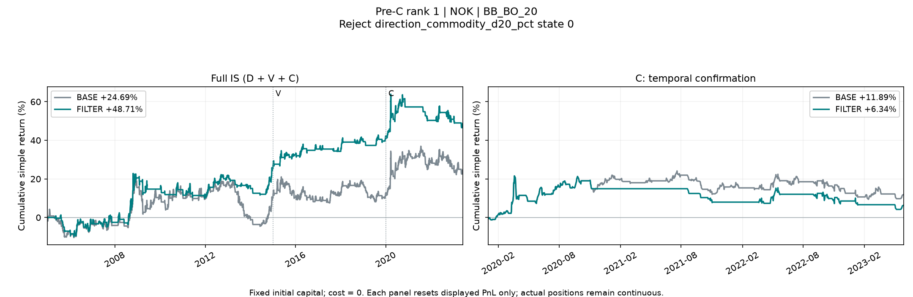
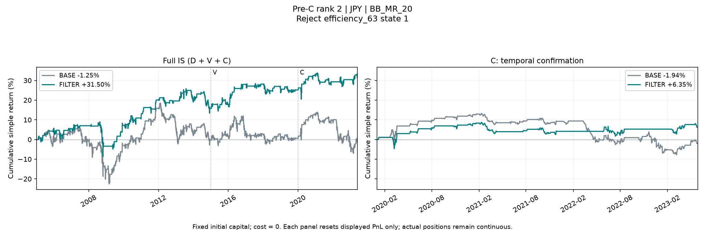
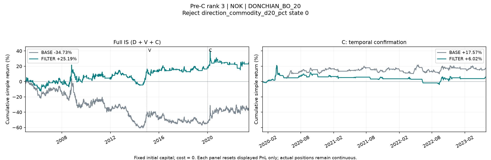
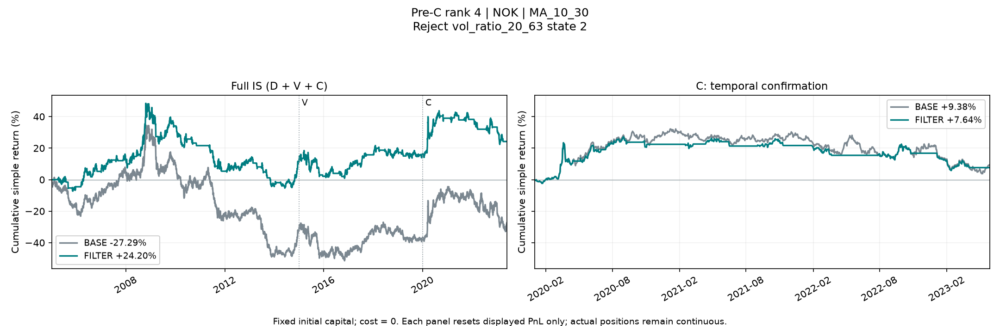

状态过滤研究：D/V/C 历史时间确认
开发隔离的历史重复验证 · 零成本 · 固定本金单利 · 全部预确认锁定候选
本轮状态
IS 时间确认（C）已完成：4 个预确认锁定候选中，0 个通过最终 IS 综合门槛。本轮没有可进入 OOS 的候选，研究目标尚未达成。 OOS：未打开。
本报告是开发隔离下的历史重复验证。C 是 IS 内的时间确认段；三年历史 OOS 此前已被观察过，即使后续评估也不是从未看过的新样本或新的独立证据。本报告不运行策略、不改阈值、不根据后段结果补选或重排。
顺序与覆盖范围
| 阶段 | 当前状态 |
|---|---|
| 事先协议 | 已保存 |
| D/V 筛选 | 已完成 |
| C 前锁定 | 4 个；保存哈希 |
| IS 时间确认 C | 已完成 |
| 最终 IS 冻结 | 0 个 |
| 历史 OOS | 未打开 |
基础范围：20 条规则 × 9 个币种，共 180 个 BASE 账户。D 为 2005-01-03—2014-12-31，V 为 2015-01-01—2019-12-31，C 为 2020-01-01—2023-05-29。RECENT 为 V + C（2015-01-01—2023-05-29），全 IS 为 2005-01-03—2023-05-29。预定历史 OOS 为 2023-05-30—2026-05-29。
| 候选总数 | D 通过 | V 单独通过 | D 与 V 共同通过 | C 前锁定 | 原始全 IS 通过 | C 门槛通过 | 新增稳健性通过 | 最终 IS 通过 |
|---|---|---|---|---|---|---|---|---|
| 1201 | 84 | 103 | 5 | 4 | 1 | 0 | 0 | 0 |
D 与 V 通过数分别在全部提案中计数，并非两个相减的漏斗层级。共同通过后，每个币种/策略最多锁定一个，按 V 单利年化、截至 2019 年累计改善、候选 ID 排序。以下候选始终沿用 C 前排名；C 失败者完整保留且不启用备选。
口径与预写门槛
成本为 0；固定初始本金 $100,000，每日收益按初始本金相加，图中累计收益 1% 对应 $1,000。单利年化为窗口累计收益除以实际日历年数。BASE/FILTER 都按 signal t → t+1 close 执行 → t+2 首次收益。跨 D/V/C/OOS 边界持续持仓，各图面板只将展示的累计 PnL 归零。最大回撤以负 pp 表示。胜率与盈亏比只统计期内开仓、期内闭合的合格交易，跨界与未闭合交易的每日收益仍进入曲线。
| 阶段 | 预写条件 |
|---|---|
| 候选提出（仅 D） | 一个预定特征状态；UNKNOWN 不拒绝。2005–09、2010–14 两段各至少 10 笔闭合交易且状态收益和为负，合并 D 去掉最差一笔仍为负。 |
| D | FILTER 单利年化 ≥1%；累计改善 ≥5 pp；胜率改善 ≥2 pp；盈亏比改善 ≥10%；收益/回撤比改善；回撤恶化 ≤2 pp；闭合 ≥30、保留率 ≥50%；受影响闭合原始交易 ≥20。 |
| V 与 C（分别考核） | FILTER 单利年化 ≥1%；累计改善 >0；收益/回撤比改善；胜率和盈亏比不差于 BASE；回撤恶化 ≤2 pp；闭合 ≥20、保留率 ≥50%；盈利与亏损各 ≥5；受影响闭合原始交易 ≥5。 |
| 原始全 IS 门槛 | 单利年化 ≥1%；累计改善 ≥5 pp；胜率改善 ≥2 pp；盈亏比改善 ≥10%；收益/回撤比改善；回撤恶化 ≤2 pp；闭合 ≥50、保留率 ≥50%；三段至少两段为正、至少两段改善，且末段同时为正并改善。 |
| 新增稳健性 | RECENT 单利年化 ≥1%、改善 >0、收益/回撤比改善；全 IS 与 RECENT 各自去掉最有利的 3 个原始交易对改善的贡献后，改善仍 >0；全 IS 至少 20 个受影响闭合原始交易。 |
| 最终准入 | 原始全 IS 门槛、C 门槛与新增稳健性必须全部通过；仅最终通过者才可冻结后一次评估历史 OOS。 |
收益/回撤比改善沿用引擎的交叉乘积比较，避免用零回撤作分母。稳健性删除的是对 BASE→FILTER 改善贡献最大的原始交易段，不是逐日挑选收益。原始全 IS 门槛与新增门槛分开展示，不能把新增失败表述为原始门槛也失败。
全部预确认锁定候选
| C 前排名 | 币种 | 策略 | 过滤状态 | 全 IS BASE | 全 IS FILTER | C BASE | C FILTER | 原始全 IS | C 门槛 | 新增稳健性 | 最终 IS |
|---|---|---|---|---|---|---|---|---|---|---|---|
| 1 | NOK | BB_BO_20 | STATE_direction_commodity_d20_pct_0 | 24.69% | 48.71% | 11.89% | 6.34% | 未通过 | 未通过 | 未通过 | 未通过 |
| 2 | JPY | BB_MR_20 | STATE_efficiency_63_1 | -1.25% | 31.50% | -1.94% | 6.35% | 通过 | 未通过 | 未通过 | 未通过 |
| 3 | NOK | DONCHIAN_BO_20 | STATE_direction_commodity_d20_pct_0 | -34.73% | 25.19% | 17.57% | 6.02% | 未通过 | 未通过 | 未通过 | 未通过 |
| 4 | NOK | MA_10_30 | STATE_vol_ratio_20_63_2 | -27.29% | 24.20% | 9.38% | 7.64% | 未通过 | 未通过 | 未通过 | 未通过 |
原始全 IS 门槛通过者：JPY|BB_MR_20|STATE_efficiency_63_1。其 C 门槛与新增稳健性结果独立列示，不抹去原始门槛已达标的事实。
| C 前排名 | 候选 | 原始全 IS 失败条件 | C 失败条件 | 新增稳健性失败条件 |
|---|---|---|---|---|
| 1 | NOK|BB_BO_20|STATE_direction_commodity_d20_pct_0 | 至少两段改善且末段改善 | 收益改善；收益/回撤比改善；胜率与盈亏比；回撤恶化不超过 2 pp；闭合交易数与保留率 | RECENT 去除最有利 3 个原始交易后改善仍为正 |
| 2 | JPY|BB_MR_20|STATE_efficiency_63_1 | — | 盈利与亏损交易各至少 5 笔 | RECENT 去除最有利 3 个原始交易后改善仍为正 |
| 3 | NOK|DONCHIAN_BO_20|STATE_direction_commodity_d20_pct_0 | 至少两段改善且末段改善 | 收益改善；收益/回撤比改善；胜率与盈亏比；回撤恶化不超过 2 pp；闭合交易数与保留率 | RECENT 去除最有利 3 个原始交易后改善仍为正 |
| 4 | NOK|MA_10_30|STATE_vol_ratio_20_63_2 | 至少两段改善且末段改善 | 收益改善；胜率与盈亏比；闭合交易数与保留率 | RECENT 去除最有利 3 个原始交易后改善仍为正 |
#1 NOK · BB_BO_20
STATE_direction_commodity_d20_pct_0

| 区间 | 版本 | 单利累计 | 单利年化 | 最大回撤 pp | 闭合笔数 | 盈利笔数 | 亏损笔数 | 胜率 | 盈亏比 | 保留率 |
|---|---|---|---|---|---|---|---|---|---|---|
| IS | BASE | 24.69% | 1.34% | -25.79 | 158 | 61 | 97 | 38.61% | 1.83 | 100.00% |
| IS | FILTER | 48.71% | 2.65% | -17.37 | 95 | 41 | 54 | 43.16% | 2.04 | 60.13% |
| CONFIRMATION | BASE | 11.89% | 3.49% | -14.72 | 32 | 13 | 19 | 40.62% | 1.93 | 100.00% |
| CONFIRMATION | FILTER | 6.34% | 1.86% | -17.37 | 19 | 8 | 11 | 42.11% | 1.66 | 59.38% |
| RECENT | BASE | 14.46% | 1.72% | -14.72 | 76 | 29 | 47 | 38.16% | 1.87 | 100.00% |
| RECENT | FILTER | 23.30% | 2.77% | -17.37 | 42 | 19 | 23 | 45.24% | 1.88 | 55.26% |
| 区间 | FILTER−BASE pp | 受影响闭合原始交易 | 全部受影响原始交易 | 去掉最有利 3 个后改善 pp |
|---|---|---|---|---|
| IS | 24.02 | 63 | 63 | 10.32 |
| CONFIRMATION | -5.55 | 13 | 13 | -11.23 |
| RECENT | 8.84 | 34 | 34 | -0.55 |
#2 JPY · BB_MR_20
STATE_efficiency_63_1

| 区间 | 版本 | 单利累计 | 单利年化 | 最大回撤 pp | 闭合笔数 | 盈利笔数 | 亏损笔数 | 胜率 | 盈亏比 | 保留率 |
|---|---|---|---|---|---|---|---|---|---|---|
| IS | BASE | -1.25% | -0.07% | -28.51 | 155 | 103 | 52 | 66.45% | 0.50 | 100.00% |
| IS | FILTER | 31.50% | 1.71% | -17.65 | 105 | 72 | 33 | 68.57% | 0.71 | 67.74% |
| CONFIRMATION | BASE | -1.94% | -0.57% | -20.96 | 30 | 24 | 6 | 80.00% | 0.24 | 100.00% |
| CONFIRMATION | FILTER | 6.35% | 1.86% | -6.97 | 20 | 16 | 4 | 80.00% | 0.44 | 66.67% |
| RECENT | BASE | -0.82% | -0.10% | -20.96 | 72 | 49 | 23 | 68.06% | 0.47 | 100.00% |
| RECENT | FILTER | 15.73% | 1.87% | -7.94 | 51 | 35 | 16 | 68.63% | 0.78 | 70.83% |
| 区间 | FILTER−BASE pp | 受影响闭合原始交易 | 全部受影响原始交易 | 去掉最有利 3 个后改善 pp |
|---|---|---|---|---|
| IS | 32.75 | 50 | 50 | 2.03 |
| CONFIRMATION | 8.29 | 10 | 10 | -8.04 |
| RECENT | 16.55 | 21 | 21 | -8.77 |
#3 NOK · DONCHIAN_BO_20
STATE_direction_commodity_d20_pct_0

| 区间 | 版本 | 单利累计 | 单利年化 | 最大回撤 pp | 闭合笔数 | 盈利笔数 | 亏损笔数 | 胜率 | 盈亏比 | 保留率 |
|---|---|---|---|---|---|---|---|---|---|---|
| IS | BASE | -34.73% | -1.89% | -64.50 | 226 | 80 | 146 | 35.40% | 1.54 | 100.00% |
| IS | FILTER | 25.19% | 1.37% | -26.51 | 134 | 52 | 82 | 38.81% | 1.87 | 59.29% |
| CONFIRMATION | BASE | 17.57% | 5.15% | -16.92 | 40 | 19 | 21 | 47.50% | 1.66 | 100.00% |
| CONFIRMATION | FILTER | 6.02% | 1.77% | -25.07 | 19 | 11 | 8 | 57.89% | 0.93 | 47.50% |
| RECENT | BASE | 8.98% | 1.07% | -18.13 | 101 | 41 | 60 | 40.59% | 1.54 | 100.00% |
| RECENT | FILTER | 12.81% | 1.52% | -25.07 | 52 | 24 | 28 | 46.15% | 1.40 | 51.49% |
| 区间 | FILTER−BASE pp | 受影响闭合原始交易 | 全部受影响原始交易 | 去掉最有利 3 个后改善 pp |
|---|---|---|---|---|
| IS | 59.93 | 92 | 92 | 42.00 |
| CONFIRMATION | -11.55 | 21 | 21 | -18.72 |
| RECENT | 3.84 | 49 | 49 | -5.92 |
#4 NOK · MA_10_30
STATE_vol_ratio_20_63_2

| 区间 | 版本 | 单利累计 | 单利年化 | 最大回撤 pp | 闭合笔数 | 盈利笔数 | 亏损笔数 | 胜率 | 盈亏比 | 保留率 |
|---|---|---|---|---|---|---|---|---|---|---|
| IS | BASE | -27.29% | -1.48% | -86.08 | 199 | 71 | 128 | 35.68% | 1.59 | 100.00% |
| IS | FILTER | 24.20% | 1.31% | -53.82 | 112 | 44 | 68 | 39.29% | 1.81 | 56.28% |
| CONFIRMATION | BASE | 9.38% | 2.75% | -28.42 | 36 | 15 | 21 | 41.67% | 1.63 | 100.00% |
| CONFIRMATION | FILTER | 7.64% | 2.24% | -21.41 | 17 | 7 | 10 | 41.18% | 2.09 | 47.22% |
| RECENT | BASE | 5.12% | 0.61% | -28.42 | 87 | 32 | 55 | 36.78% | 1.69 | 100.00% |
| RECENT | FILTER | 13.01% | 1.55% | -21.41 | 48 | 19 | 29 | 39.58% | 1.84 | 55.17% |
| 区间 | FILTER−BASE pp | 受影响闭合原始交易 | 全部受影响原始交易 | 去掉最有利 3 个后改善 pp |
|---|---|---|---|---|
| IS | 51.49 | 87 | 88 | 33.69 |
| CONFIRMATION | -1.74 | 19 | 20 | -12.72 |
| RECENT | 7.89 | 39 | 40 | -5.65 |
闭合交易总数不等于过滤机制的作用样本数。上表另列实际受影响的原始交易；“全部受影响”包含跨界及期末尚未闭合的贡献，不能代替期内闭合样本门槛。RECENT 包含 C，属于明确写入协议的 IS 稳健性检查，不是另一份独立验证。
D/V 失败分布与完整提案
| 阶段 | 未满足条件 | 候选数 |
|---|---|---|
| D | 胜率与盈亏比 | 1032 |
| D | 单利年化至少 1% | 751 |
| D | 闭合交易数与保留率 | 171 |
| D | 收益改善 | 90 |
| D | 收益/回撤比改善 | 67 |
| D | 回撤恶化不超过 2 pp | 4 |
| V | 单利年化至少 1% | 887 |
| V | 胜率与盈亏比 | 885 |
| V | 收益/回撤比改善 | 577 |
| V | 收益改善 | 547 |
| V | 闭合交易数与保留率 | 214 |
| V | 回撤恶化不超过 2 pp | 71 |
| V | 盈利与亏损交易各至少 5 笔 | 47 |
| V | 实际受影响的闭合原始交易数量 | 26 |
同一候选可以同时未满足多个条件，失败分布不能相加为独立淘汰人数。完整提案按币种、策略、候选 ID 排序，包含共同通过但未获账户内最高排名的版本；不按 C 或 OOS 收益选择展示。
查看全部 1201 个提案及其 D/V 结果
| 币种 | 策略 | 过滤状态 | D | V | 共同通过 | C 前排名 | D 失败条件 | V 失败条件 |
|---|---|---|---|---|---|---|---|---|
| AUD | BB_BO_10 | STATE_K_vix_0 | 未通过 | 未通过 | 未通过 | — | 单利年化至少 1%；胜率与盈亏比 | 单利年化至少 1%；收益改善；收益/回撤比改善；胜率与盈亏比；闭合交易数与保留率 |
| AUD | BB_BO_10 | STATE_K_vix_d5_1 | 未通过 | 通过 | 未通过 | — | 单利年化至少 1%；胜率与盈亏比 | — |
| AUD | BB_BO_10 | STATE_base_pnl_252_pct_1 | 未通过 | 未通过 | 未通过 | — | 单利年化至少 1%；胜率与盈亏比 | 单利年化至少 1%；胜率与盈亏比；闭合交易数与保留率 |
| AUD | BB_BO_10 | STATE_base_pnl_63_pct_1 | 未通过 | 未通过 | 未通过 | — | 单利年化至少 1%；胜率与盈亏比 | 单利年化至少 1%；胜率与盈亏比；闭合交易数与保留率 |
| AUD | BB_BO_10 | STATE_base_pnl_63_pct_2 | 未通过 | 未通过 | 未通过 | — | 单利年化至少 1%；胜率与盈亏比 | 单利年化至少 1%；胜率与盈亏比 |
| AUD | BB_BO_10 | STATE_direction_commodity_d20_pct_3 | 未通过 | 未通过 | 未通过 | — | 单利年化至少 1%；胜率与盈亏比 | 单利年化至少 1% |
| AUD | BB_BO_10 | STATE_direction_distance_ma_60_vol_3 | 未通过 | 通过 | 未通过 | — | 单利年化至少 1%；胜率与盈亏比 | — |
| AUD | BB_BO_10 | STATE_direction_dxy_d20_pct_0 | 未通过 | 未通过 | 未通过 | — | 单利年化至少 1% | 单利年化至少 1% |
| AUD | BB_BO_10 | STATE_direction_return_20_vol_2 | 未通过 | 未通过 | 未通过 | — | 单利年化至少 1%；收益/回撤比改善；胜率与盈亏比 | 单利年化至少 1%；收益改善；收益/回撤比改善；胜率与盈亏比；闭合交易数与保留率 |
| AUD | BB_BO_10 | STATE_direction_return_20_vol_3 | 未通过 | 通过 | 未通过 | — | 单利年化至少 1% | — |
| AUD | BB_BO_10 | STATE_direction_spread_bp_0 | 未通过 | 未通过 | 未通过 | — | 单利年化至少 1%；胜率与盈亏比 | 单利年化至少 1%；收益改善；收益/回撤比改善；胜率与盈亏比 |
| AUD | BB_BO_10 | STATE_direction_spread_d20_bp_1 | 未通过 | 未通过 | 未通过 | — | 单利年化至少 1%；收益/回撤比改善；胜率与盈亏比 | 单利年化至少 1%；收益改善；收益/回撤比改善；胜率与盈亏比 |
| AUD | BB_BO_10 | STATE_direction_spread_d20_bp_3 | 未通过 | 未通过 | 未通过 | — | 单利年化至少 1% | 单利年化至少 1% |
| AUD | BB_BO_10 | STATE_efficiency_63_0 | 未通过 | 未通过 | 未通过 | — | 单利年化至少 1%；胜率与盈亏比 | 单利年化至少 1%；闭合交易数与保留率 |
| AUD | BB_BO_10 | STATE_realized_vol_20_pct_1 | 未通过 | 未通过 | 未通过 | — | 单利年化至少 1%；胜率与盈亏比 | 闭合交易数与保留率 |
| AUD | BB_BO_10 | STATE_vol_ratio_20_63_2 | 未通过 | 未通过 | 未通过 | — | 单利年化至少 1%；胜率与盈亏比 | 单利年化至少 1%；收益改善；收益/回撤比改善；胜率与盈亏比 |
| AUD | BB_BO_20 | STATE_direction_commodity_d20_pct_0 | 未通过 | 未通过 | 未通过 | — | 胜率与盈亏比 | 单利年化至少 1% |
| AUD | BB_BO_20 | STATE_efficiency_63_0 | 未通过 | 未通过 | 未通过 | — | 胜率与盈亏比；闭合交易数与保留率 | 单利年化至少 1%；胜率与盈亏比；闭合交易数与保留率；盈利与亏损交易各至少 5 笔 |
| AUD | BB_MR_20 | STATE_direction_commodity_d20_pct_0 | 未通过 | 未通过 | 未通过 | — | 胜率与盈亏比 | 收益改善 |
| AUD | BB_MR_20 | STATE_direction_dxy_d20_pct_2 | 未通过 | 未通过 | 未通过 | — | 胜率与盈亏比 | 收益改善 |
| AUD | BB_MR_20 | STATE_direction_return_20_vol_1 | 未通过 | 未通过 | 未通过 | — | 闭合交易数与保留率 | 收益改善；收益/回撤比改善；胜率与盈亏比；闭合交易数与保留率；盈利与亏损交易各至少 5 笔 |
| AUD | BB_MR_20 | STATE_vol_ratio_20_63_1 | 未通过 | 未通过 | 未通过 | — | 胜率与盈亏比 | 收益改善；收益/回撤比改善；胜率与盈亏比 |
| AUD | DONCHIAN_BO_10 | STATE_K_vix_d5_1 | 未通过 | 未通过 | 未通过 | — | 胜率与盈亏比 | 单利年化至少 1%；胜率与盈亏比 |
| AUD | DONCHIAN_BO_10 | STATE_base_pnl_252_pct_2 | 未通过 | 未通过 | 未通过 | — | 胜率与盈亏比 | 单利年化至少 1% |
| AUD | DONCHIAN_BO_10 | STATE_base_pnl_252_pct_3 | 未通过 | 未通过 | 未通过 | — | 胜率与盈亏比 | 单利年化至少 1% |
| AUD | DONCHIAN_BO_10 | STATE_base_pnl_63_pct_2 | 未通过 | 未通过 | 未通过 | — | 胜率与盈亏比 | 单利年化至少 1% |
| AUD | DONCHIAN_BO_10 | STATE_base_pnl_63_pct_3 | 未通过 | 未通过 | 未通过 | — | 胜率与盈亏比 | 单利年化至少 1%；胜率与盈亏比 |
| AUD | DONCHIAN_BO_10 | STATE_direction_commodity_d20_pct_0 | 未通过 | 未通过 | 未通过 | — | 胜率与盈亏比 | 单利年化至少 1%；收益改善；收益/回撤比改善；胜率与盈亏比；回撤恶化不超过 2 pp |
| AUD | DONCHIAN_BO_10 | STATE_direction_dxy_d20_pct_3 | 未通过 | 未通过 | 未通过 | — | 胜率与盈亏比 | 单利年化至少 1%；收益改善；收益/回撤比改善；胜率与盈亏比；回撤恶化不超过 2 pp |
| AUD | DONCHIAN_BO_10 | STATE_direction_spread_d20_bp_1 | 未通过 | 未通过 | 未通过 | — | 胜率与盈亏比 | 单利年化至少 1% |
| AUD | DONCHIAN_BO_10 | STATE_direction_spread_d20_bp_2 | 未通过 | 未通过 | 未通过 | — | 单利年化至少 1%；收益改善；胜率与盈亏比 | 单利年化至少 1%；收益改善；收益/回撤比改善；胜率与盈亏比；回撤恶化不超过 2 pp |
| AUD | DONCHIAN_BO_20 | STATE_K_vix_d5_1 | 未通过 | 未通过 | 未通过 | — | 胜率与盈亏比 | 单利年化至少 1%；收益/回撤比改善；胜率与盈亏比 |
| AUD | DONCHIAN_BO_20 | STATE_base_pnl_252_pct_0 | 未通过 | 未通过 | 未通过 | — | 收益改善；胜率与盈亏比 | 单利年化至少 1%；胜率与盈亏比；闭合交易数与保留率 |
| AUD | DONCHIAN_BO_20 | STATE_direction_dxy_d20_pct_3 | 未通过 | 未通过 | 未通过 | — | 收益改善；胜率与盈亏比 | 单利年化至少 1%；胜率与盈亏比 |
| AUD | MACD_12_26_9 | STATE_K_vix_0 | 未通过 | 未通过 | 未通过 | — | 单利年化至少 1%；胜率与盈亏比 | 单利年化至少 1%；胜率与盈亏比；闭合交易数与保留率 |
| AUD | MACD_12_26_9 | STATE_K_vix_1 | 未通过 | 未通过 | 未通过 | — | 单利年化至少 1%；胜率与盈亏比 | 单利年化至少 1% |
| AUD | MACD_12_26_9 | STATE_K_vix_d5_1 | 未通过 | 未通过 | 未通过 | — | 胜率与盈亏比 | 单利年化至少 1%；胜率与盈亏比；闭合交易数与保留率 |
| AUD | MACD_12_26_9 | STATE_K_vix_d5_2 | 未通过 | 未通过 | 未通过 | — | 单利年化至少 1%；胜率与盈亏比 | 单利年化至少 1%；收益改善；收益/回撤比改善；胜率与盈亏比 |
| AUD | MACD_12_26_9 | STATE_base_pnl_63_pct_0 | 未通过 | 未通过 | 未通过 | — | 单利年化至少 1%；胜率与盈亏比 | 单利年化至少 1%；收益/回撤比改善；胜率与盈亏比 |
| AUD | MACD_12_26_9 | STATE_base_pnl_63_pct_3 | 未通过 | 未通过 | 未通过 | — | 胜率与盈亏比 | 单利年化至少 1% |
| AUD | MACD_12_26_9 | STATE_direction_commodity_d20_pct_0 | 未通过 | 未通过 | 未通过 | — | 胜率与盈亏比 | 单利年化至少 1%；收益改善；收益/回撤比改善；胜率与盈亏比 |
| AUD | MACD_12_26_9 | STATE_direction_distance_ma_60_vol_0 | 未通过 | 未通过 | 未通过 | — | 单利年化至少 1% | 单利年化至少 1%；收益改善；收益/回撤比改善；胜率与盈亏比；回撤恶化不超过 2 pp |
| AUD | MACD_12_26_9 | STATE_direction_dxy_d20_pct_0 | 未通过 | 未通过 | 未通过 | — | 单利年化至少 1%；胜率与盈亏比 | 单利年化至少 1%；胜率与盈亏比 |
| AUD | MACD_12_26_9 | STATE_direction_dxy_d20_pct_2 | 未通过 | 未通过 | 未通过 | — | 单利年化至少 1%；胜率与盈亏比 | 单利年化至少 1% |
| AUD | MACD_12_26_9 | STATE_direction_return_20_vol_1 | 未通过 | 未通过 | 未通过 | — | 单利年化至少 1%；胜率与盈亏比 | 单利年化至少 1%；收益/回撤比改善；胜率与盈亏比 |
| AUD | MACD_12_26_9 | STATE_direction_spread_bp_0 | 未通过 | 未通过 | 未通过 | — | 单利年化至少 1%；胜率与盈亏比 | 单利年化至少 1%；收益改善；收益/回撤比改善；胜率与盈亏比 |
| AUD | MACD_12_26_9 | STATE_direction_spread_bp_3 | 未通过 | 未通过 | 未通过 | — | 单利年化至少 1%；胜率与盈亏比 | 单利年化至少 1%；胜率与盈亏比 |
| AUD | MACD_12_26_9 | STATE_direction_spread_d20_bp_1 | 未通过 | 未通过 | 未通过 | — | 单利年化至少 1%；胜率与盈亏比 | 单利年化至少 1% |
| AUD | MACD_12_26_9 | STATE_direction_spread_d20_bp_2 | 未通过 | 未通过 | 未通过 | — | 单利年化至少 1%；收益改善；胜率与盈亏比 | 单利年化至少 1%；收益改善；收益/回撤比改善；胜率与盈亏比 |
| AUD | MACD_12_26_9 | STATE_efficiency_63_2 | 未通过 | 未通过 | 未通过 | — | 单利年化至少 1%；胜率与盈亏比 | 单利年化至少 1%；收益改善；收益/回撤比改善；胜率与盈亏比；回撤恶化不超过 2 pp |
| AUD | MACD_12_26_9 | STATE_realized_vol_20_pct_2 | 未通过 | 未通过 | 未通过 | — | 单利年化至少 1%；胜率与盈亏比 | 单利年化至少 1%；收益改善；收益/回撤比改善；胜率与盈亏比 |
| AUD | MACD_12_26_9 | STATE_vol_ratio_20_63_2 | 未通过 | 未通过 | 未通过 | — | 单利年化至少 1%；收益/回撤比改善；胜率与盈亏比 | 单利年化至少 1%；胜率与盈亏比 |
| AUD | MA_10_30 | STATE_direction_commodity_d20_pct_0 | 通过 | 未通过 | 未通过 | — | — | 单利年化至少 1% |
| AUD | MA_10_30 | STATE_direction_dxy_d20_pct_3 | 通过 | 未通过 | 未通过 | — | — | 单利年化至少 1% |
| AUD | MA_10_30 | STATE_direction_spread_d20_bp_1 | 未通过 | 未通过 | 未通过 | — | 胜率与盈亏比 | 单利年化至少 1%；收益改善；收益/回撤比改善；胜率与盈亏比 |
| AUD | MA_20_60 | STATE_direction_return_20_vol_2 | 未通过 | 未通过 | 未通过 | — | 胜率与盈亏比；闭合交易数与保留率 | 单利年化至少 1%；收益改善；收益/回撤比改善；胜率与盈亏比；闭合交易数与保留率；盈利与亏损交易各至少 5 笔 |
| AUD | MA_20_60 | STATE_direction_spread_bp_0 | 未通过 | 未通过 | 未通过 | — | 单利年化至少 1%；收益改善；胜率与盈亏比；闭合交易数与保留率 | 单利年化至少 1%；收益改善；收益/回撤比改善；胜率与盈亏比；实际受影响的闭合原始交易数量 |
| AUD | MA_20_60 | STATE_efficiency_63_0 | 未通过 | 未通过 | 未通过 | — | 单利年化至少 1%；闭合交易数与保留率 | 单利年化至少 1%；收益/回撤比改善；胜率与盈亏比；闭合交易数与保留率；盈利与亏损交易各至少 5 笔 |
| AUD | REGIME_RULE_FIXED | STATE_direction_return_20_vol_0 | 未通过 | 未通过 | 未通过 | — | 单利年化至少 1%；胜率与盈亏比；闭合交易数与保留率 | 单利年化至少 1%；胜率与盈亏比；闭合交易数与保留率；盈利与亏损交易各至少 5 笔 |
| AUD | RSI_MOM_14 | STATE_K_vix_d5_1 | 通过 | 未通过 | 未通过 | — | — | 单利年化至少 1% |
| AUD | RSI_MOM_14 | STATE_base_pnl_252_pct_3 | 未通过 | 未通过 | 未通过 | — | 胜率与盈亏比 | 单利年化至少 1%；收益改善；收益/回撤比改善；胜率与盈亏比 |
| AUD | RSI_MOM_14 | STATE_base_pnl_63_pct_2 | 未通过 | 未通过 | 未通过 | — | 收益改善；胜率与盈亏比 | 单利年化至少 1%；胜率与盈亏比 |
| AUD | RSI_MOM_14 | STATE_direction_commodity_d20_pct_0 | 未通过 | 未通过 | 未通过 | — | 胜率与盈亏比 | 单利年化至少 1% |
| AUD | RSI_MOM_14 | STATE_direction_dxy_d20_pct_1 | 未通过 | 未通过 | 未通过 | — | 收益改善；胜率与盈亏比 | 单利年化至少 1% |
| AUD | RSI_MOM_14 | STATE_direction_spread_bp_3 | 未通过 | 未通过 | 未通过 | — | 胜率与盈亏比；闭合交易数与保留率 | 单利年化至少 1% |
| AUD | RSI_MOM_14 | STATE_vol_ratio_20_63_0 | 未通过 | 未通过 | 未通过 | — | 胜率与盈亏比 | 单利年化至少 1%；收益/回撤比改善；胜率与盈亏比 |
| AUD | RSI_MOM_20 | STATE_base_pnl_63_pct_2 | 未通过 | 未通过 | 未通过 | — | 胜率与盈亏比 | 单利年化至少 1% |
| AUD | RSI_MOM_20 | STATE_direction_commodity_d20_pct_0 | 未通过 | 未通过 | 未通过 | — | 胜率与盈亏比 | 单利年化至少 1% |
| AUD | RSI_MOM_20 | STATE_direction_dxy_d20_pct_0 | 通过 | 未通过 | 未通过 | — | — | 单利年化至少 1%；胜率与盈亏比 |
| AUD | RSI_MOM_20 | STATE_vol_ratio_20_63_0 | 未通过 | 未通过 | 未通过 | — | 胜率与盈亏比 | 单利年化至少 1%；收益/回撤比改善；胜率与盈亏比 |
| AUD | RSI_MOM_7 | STATE_K_vix_1 | 未通过 | 未通过 | 未通过 | — | 胜率与盈亏比 | 单利年化至少 1%；胜率与盈亏比 |
| AUD | RSI_MOM_7 | STATE_base_pnl_252_pct_3 | 未通过 | 未通过 | 未通过 | — | 胜率与盈亏比 | 胜率与盈亏比 |
| AUD | RSI_MOM_7 | STATE_base_pnl_63_pct_3 | 未通过 | 未通过 | 未通过 | — | 胜率与盈亏比 | 胜率与盈亏比 |
| AUD | RSI_MOM_7 | STATE_direction_commodity_d20_pct_0 | 未通过 | 未通过 | 未通过 | — | 胜率与盈亏比 | 单利年化至少 1%；收益改善；收益/回撤比改善；胜率与盈亏比 |
| AUD | RSI_MOM_7 | STATE_direction_return_20_vol_3 | 未通过 | 通过 | 未通过 | — | 胜率与盈亏比 | — |
| AUD | RSI_MOM_7 | STATE_realized_vol_20_pct_3 | 未通过 | 未通过 | 未通过 | — | 胜率与盈亏比 | 单利年化至少 1%；胜率与盈亏比 |
| AUD | RSI_MOM_7 | STATE_vol_ratio_20_63_0 | 未通过 | 未通过 | 未通过 | — | 胜率与盈亏比 | 单利年化至少 1% |
| AUD | RSI_MR_14 | STATE_direction_distance_ma_60_vol_0 | 未通过 | 未通过 | 未通过 | — | 单利年化至少 1%；闭合交易数与保留率 | 单利年化至少 1%；收益改善；胜率与盈亏比；闭合交易数与保留率；盈利与亏损交易各至少 5 笔 |
| AUD | RSI_MR_14 | STATE_direction_dxy_d20_pct_3 | 未通过 | 未通过 | 未通过 | — | 单利年化至少 1%；闭合交易数与保留率 | 收益改善；收益/回撤比改善；胜率与盈亏比；闭合交易数与保留率；盈利与亏损交易各至少 5 笔 |
| AUD | RSI_MR_7 | STATE_K_vix_2 | 未通过 | 未通过 | 未通过 | — | 胜率与盈亏比 | 收益改善；收益/回撤比改善；胜率与盈亏比；实际受影响的闭合原始交易数量 |
| AUD | RSI_MR_7 | STATE_base_pnl_252_pct_2 | 通过 | 未通过 | 未通过 | — | — | 收益改善；收益/回撤比改善；胜率与盈亏比 |
| AUD | RSI_MR_7 | STATE_base_pnl_63_pct_3 | 未通过 | 未通过 | 未通过 | — | 胜率与盈亏比 | 收益改善；收益/回撤比改善；胜率与盈亏比 |
| AUD | RSI_MR_7 | STATE_direction_commodity_d20_pct_0 | 未通过 | 未通过 | 未通过 | — | 闭合交易数与保留率 | 单利年化至少 1%；收益改善；收益/回撤比改善；胜率与盈亏比 |
| AUD | RSI_MR_7 | STATE_direction_dxy_d20_pct_3 | 通过 | 未通过 | 未通过 | — | — | 收益改善；收益/回撤比改善；胜率与盈亏比 |
| AUD | RSI_MR_7 | STATE_direction_spread_bp_0 | 未通过 | 未通过 | 未通过 | — | 胜率与盈亏比；闭合交易数与保留率 | 收益改善；胜率与盈亏比 |
| AUD | RSI_MR_7 | STATE_realized_vol_20_pct_2 | 通过 | 未通过 | 未通过 | — | — | 收益改善；收益/回撤比改善 |
| AUD | TSMOM_21 | STATE_K_vix_d5_3 | 未通过 | 未通过 | 未通过 | — | 胜率与盈亏比 | 单利年化至少 1%；胜率与盈亏比 |
| AUD | TSMOM_21 | STATE_base_pnl_252_pct_1 | 未通过 | 未通过 | 未通过 | — | 胜率与盈亏比 | 单利年化至少 1%；胜率与盈亏比 |
| AUD | TSMOM_21 | STATE_base_pnl_63_pct_3 | 未通过 | 未通过 | 未通过 | — | 胜率与盈亏比 | 单利年化至少 1%；收益改善；收益/回撤比改善；胜率与盈亏比 |
| AUD | TSMOM_21 | STATE_direction_commodity_d20_pct_0 | 未通过 | 未通过 | 未通过 | — | 胜率与盈亏比 | 单利年化至少 1%；胜率与盈亏比 |
| AUD | TSMOM_21 | STATE_direction_commodity_d20_pct_1 | 未通过 | 未通过 | 未通过 | — | 胜率与盈亏比 | 单利年化至少 1%；胜率与盈亏比 |
| AUD | TSMOM_21 | STATE_direction_distance_ma_60_vol_2 | 未通过 | 未通过 | 未通过 | — | 闭合交易数与保留率 | 单利年化至少 1%；收益改善；收益/回撤比改善；胜率与盈亏比；闭合交易数与保留率 |
| AUD | TSMOM_21 | STATE_direction_dxy_d20_pct_0 | 未通过 | 未通过 | 未通过 | — | 收益改善；收益/回撤比改善；胜率与盈亏比 | 单利年化至少 1%；收益改善；收益/回撤比改善；胜率与盈亏比；回撤恶化不超过 2 pp |
| AUD | TSMOM_21 | STATE_direction_return_20_vol_1 | 未通过 | 未通过 | 未通过 | — | 胜率与盈亏比 | 单利年化至少 1%；胜率与盈亏比 |
| AUD | TSMOM_21 | STATE_efficiency_63_2 | 未通过 | 未通过 | 未通过 | — | 胜率与盈亏比 | 单利年化至少 1%；胜率与盈亏比 |
| AUD | TSMOM_21 | STATE_realized_vol_20_pct_2 | 未通过 | 未通过 | 未通过 | — | 胜率与盈亏比 | 单利年化至少 1%；收益/回撤比改善；胜率与盈亏比 |
| AUD | TSMOM_21 | STATE_vol_ratio_20_63_0 | 未通过 | 未通过 | 未通过 | — | 胜率与盈亏比 | 单利年化至少 1% |
| AUD | TSMOM_63 | STATE_K_vix_d5_2 | 未通过 | 未通过 | 未通过 | — | 胜率与盈亏比 | 单利年化至少 1%；收益改善；收益/回撤比改善；胜率与盈亏比 |
| AUD | TSMOM_63 | STATE_base_pnl_252_pct_3 | 未通过 | 未通过 | 未通过 | — | 胜率与盈亏比 | 单利年化至少 1%；收益改善；收益/回撤比改善；胜率与盈亏比 |
| AUD | TSMOM_63 | STATE_base_pnl_63_pct_1 | 未通过 | 未通过 | 未通过 | — | 胜率与盈亏比 | 单利年化至少 1%；胜率与盈亏比 |
| AUD | TSMOM_63 | STATE_base_pnl_63_pct_2 | 未通过 | 未通过 | 未通过 | — | 单利年化至少 1%；收益改善；收益/回撤比改善；胜率与盈亏比 | 单利年化至少 1%；胜率与盈亏比 |
| AUD | TSMOM_63 | STATE_direction_distance_ma_60_vol_2 | 未通过 | 未通过 | 未通过 | — | 闭合交易数与保留率 | 单利年化至少 1%；胜率与盈亏比；闭合交易数与保留率 |
| AUD | TSMOM_63 | STATE_direction_dxy_d20_pct_1 | 未通过 | 未通过 | 未通过 | — | 胜率与盈亏比 | 单利年化至少 1%；收益改善；收益/回撤比改善；胜率与盈亏比 |
| AUD | TSMOM_63 | STATE_direction_dxy_d20_pct_3 | 未通过 | 未通过 | 未通过 | — | 胜率与盈亏比 | 单利年化至少 1% |
| AUD | TSMOM_63 | STATE_direction_return_20_vol_2 | 未通过 | 未通过 | 未通过 | — | 胜率与盈亏比 | 单利年化至少 1%；收益/回撤比改善；胜率与盈亏比 |
| AUD | TSMOM_63 | STATE_direction_spread_bp_0 | 未通过 | 未通过 | 未通过 | — | 单利年化至少 1%；收益改善；胜率与盈亏比 | 单利年化至少 1%；收益改善；收益/回撤比改善；胜率与盈亏比 |
| AUD | TSMOM_63 | STATE_direction_spread_d20_bp_0 | 未通过 | 未通过 | 未通过 | — | 胜率与盈亏比 | 单利年化至少 1% |
| AUD | TSMOM_63 | STATE_direction_spread_d20_bp_1 | 未通过 | 未通过 | 未通过 | — | 单利年化至少 1%；胜率与盈亏比 | 单利年化至少 1%；收益改善；收益/回撤比改善；胜率与盈亏比 |
| AUD | TSMOM_63 | STATE_direction_spread_d20_bp_2 | 未通过 | 未通过 | 未通过 | — | 单利年化至少 1%；收益改善；胜率与盈亏比 | 单利年化至少 1%；胜率与盈亏比 |
| AUD | TSMOM_63 | STATE_efficiency_63_0 | 未通过 | 未通过 | 未通过 | — | 单利年化至少 1%；收益改善；胜率与盈亏比；闭合交易数与保留率 | 单利年化至少 1%；收益/回撤比改善；胜率与盈亏比；闭合交易数与保留率；盈利与亏损交易各至少 5 笔 |
| AUD | TSMOM_63 | STATE_vol_ratio_20_63_2 | 未通过 | 未通过 | 未通过 | — | 胜率与盈亏比 | 单利年化至少 1%；胜率与盈亏比 |
| AUD | VOTE_EQUAL_4 | STATE_K_vix_d5_1 | 未通过 | 未通过 | 未通过 | — | 胜率与盈亏比 | 单利年化至少 1%；收益/回撤比改善；胜率与盈亏比 |
| AUD | VOTE_EQUAL_4 | STATE_direction_spread_bp_0 | 未通过 | 未通过 | 未通过 | — | 收益改善；胜率与盈亏比 | 单利年化至少 1%；收益改善；收益/回撤比改善；胜率与盈亏比 |
| AUD | VOTE_STRENGTH_4 | STATE_K_vix_d5_1 | 通过 | 未通过 | 未通过 | — | — | 单利年化至少 1%；胜率与盈亏比 |
| AUD | VOTE_STRENGTH_4 | STATE_base_pnl_252_pct_0 | 通过 | 未通过 | 未通过 | — | — | 单利年化至少 1% |
| AUD | VOTE_STRENGTH_4 | STATE_direction_commodity_d20_pct_0 | 未通过 | 未通过 | 未通过 | — | 胜率与盈亏比 | 单利年化至少 1%；胜率与盈亏比 |
| AUD | VOTE_STRENGTH_4 | STATE_direction_spread_d20_bp_1 | 通过 | 未通过 | 未通过 | — | — | 单利年化至少 1%；胜率与盈亏比 |
| AUD | VOTE_STRENGTH_4 | STATE_vol_ratio_20_63_2 | 未通过 | 未通过 | 未通过 | — | 胜率与盈亏比 | 单利年化至少 1%；胜率与盈亏比 |
| CAD | BB_BO_10 | STATE_K_vix_2 | 未通过 | 未通过 | 未通过 | — | 单利年化至少 1%；胜率与盈亏比 | 单利年化至少 1%；收益改善；收益/回撤比改善；胜率与盈亏比 |
| CAD | BB_BO_10 | STATE_K_vix_d5_1 | 未通过 | 未通过 | 未通过 | — | 单利年化至少 1%；收益/回撤比改善；胜率与盈亏比 | 收益改善 |
| CAD | BB_BO_10 | STATE_K_vix_d5_2 | 未通过 | 未通过 | 未通过 | — | 单利年化至少 1%；胜率与盈亏比 | 收益改善 |
| CAD | BB_BO_10 | STATE_base_pnl_252_pct_0 | 未通过 | 未通过 | 未通过 | — | 单利年化至少 1%；收益/回撤比改善；胜率与盈亏比 | 收益改善；收益/回撤比改善；实际受影响的闭合原始交易数量 |
| CAD | BB_BO_10 | STATE_base_pnl_252_pct_1 | 未通过 | 通过 | 未通过 | — | 单利年化至少 1%；胜率与盈亏比 | — |
| CAD | BB_BO_10 | STATE_base_pnl_63_pct_0 | 未通过 | 未通过 | 未通过 | — | 单利年化至少 1%；胜率与盈亏比 | 收益改善；收益/回撤比改善；实际受影响的闭合原始交易数量 |
| CAD | BB_BO_10 | STATE_base_pnl_63_pct_1 | 未通过 | 未通过 | 未通过 | — | 单利年化至少 1%；胜率与盈亏比 | 收益改善；闭合交易数与保留率 |
| CAD | BB_BO_10 | STATE_direction_commodity_d20_pct_0 | 未通过 | 未通过 | 未通过 | — | 单利年化至少 1%；胜率与盈亏比 | 收益改善；收益/回撤比改善；胜率与盈亏比 |
| CAD | BB_BO_10 | STATE_direction_commodity_d20_pct_3 | 未通过 | 未通过 | 未通过 | — | 单利年化至少 1%；收益/回撤比改善；胜率与盈亏比；闭合交易数与保留率 | 单利年化至少 1%；收益改善；收益/回撤比改善；胜率与盈亏比 |
| CAD | BB_BO_10 | STATE_direction_distance_ma_60_vol_1 | 未通过 | 未通过 | 未通过 | — | 单利年化至少 1%；胜率与盈亏比 | 收益改善；收益/回撤比改善；胜率与盈亏比 |
| CAD | BB_BO_10 | STATE_direction_distance_ma_60_vol_3 | 未通过 | 未通过 | 未通过 | — | 单利年化至少 1%；胜率与盈亏比 | 单利年化至少 1%；收益改善；收益/回撤比改善；胜率与盈亏比 |
| CAD | BB_BO_10 | STATE_direction_dxy_d20_pct_0 | 未通过 | 未通过 | 未通过 | — | 单利年化至少 1%；胜率与盈亏比 | 单利年化至少 1%；收益改善；收益/回撤比改善；胜率与盈亏比 |
| CAD | BB_BO_10 | STATE_direction_dxy_d20_pct_1 | 未通过 | 未通过 | 未通过 | — | 单利年化至少 1%；收益改善；胜率与盈亏比 | 收益改善；收益/回撤比改善；胜率与盈亏比 |
| CAD | BB_BO_10 | STATE_direction_return_20_vol_1 | 未通过 | 未通过 | 未通过 | — | 单利年化至少 1%；胜率与盈亏比 | 收益改善；收益/回撤比改善；胜率与盈亏比 |
| CAD | BB_BO_10 | STATE_direction_return_20_vol_2 | 未通过 | 未通过 | 未通过 | — | 单利年化至少 1%；收益/回撤比改善；胜率与盈亏比；闭合交易数与保留率 | 收益改善 |
| CAD | BB_BO_10 | STATE_direction_spread_bp_1 | 未通过 | 未通过 | 未通过 | — | 单利年化至少 1%；收益/回撤比改善；胜率与盈亏比 | 单利年化至少 1%；收益改善；收益/回撤比改善；胜率与盈亏比 |
| CAD | BB_BO_10 | STATE_direction_spread_bp_2 | 未通过 | 通过 | 未通过 | — | 单利年化至少 1%；胜率与盈亏比 | — |
| CAD | BB_BO_10 | STATE_direction_spread_d20_bp_2 | 未通过 | 未通过 | 未通过 | — | 单利年化至少 1%；胜率与盈亏比 | 收益改善 |
| CAD | BB_BO_10 | STATE_efficiency_63_0 | 未通过 | 未通过 | 未通过 | — | 单利年化至少 1%；胜率与盈亏比；闭合交易数与保留率 | 收益改善；收益/回撤比改善；胜率与盈亏比 |
| CAD | BB_BO_10 | STATE_realized_vol_20_pct_2 | 未通过 | 未通过 | 未通过 | — | 单利年化至少 1%；胜率与盈亏比 | 收益改善；收益/回撤比改善；胜率与盈亏比 |
| CAD | BB_BO_10 | STATE_vol_ratio_20_63_1 | 未通过 | 未通过 | 未通过 | — | 单利年化至少 1%；胜率与盈亏比 | 单利年化至少 1%；收益改善；收益/回撤比改善；胜率与盈亏比；闭合交易数与保留率 |
| CAD | BB_BO_20 | STATE_K_vix_0 | 未通过 | 未通过 | 未通过 | — | 单利年化至少 1%；收益改善；收益/回撤比改善；胜率与盈亏比 | 单利年化至少 1%；收益改善；收益/回撤比改善；胜率与盈亏比；闭合交易数与保留率；盈利与亏损交易各至少 5 笔 |
| CAD | BB_BO_20 | STATE_K_vix_d5_1 | 未通过 | 未通过 | 未通过 | — | 单利年化至少 1%；胜率与盈亏比 | 收益改善；收益/回撤比改善；胜率与盈亏比 |
| CAD | BB_BO_20 | STATE_base_pnl_252_pct_0 | 未通过 | 未通过 | 未通过 | — | 单利年化至少 1%；胜率与盈亏比 | 收益改善；收益/回撤比改善；胜率与盈亏比；实际受影响的闭合原始交易数量 |
| CAD | BB_BO_20 | STATE_base_pnl_252_pct_1 | 未通过 | 未通过 | 未通过 | — | 单利年化至少 1%；胜率与盈亏比 | 收益改善；收益/回撤比改善；胜率与盈亏比 |
| CAD | BB_BO_20 | STATE_direction_commodity_d20_pct_0 | 未通过 | 未通过 | 未通过 | — | 单利年化至少 1%；胜率与盈亏比 | 收益改善；胜率与盈亏比 |
| CAD | BB_BO_20 | STATE_direction_distance_ma_60_vol_2 | 未通过 | 未通过 | 未通过 | — | 单利年化至少 1%；收益/回撤比改善；胜率与盈亏比；闭合交易数与保留率 | 收益改善；闭合交易数与保留率 |
| CAD | BB_BO_20 | STATE_direction_return_20_vol_2 | 未通过 | 未通过 | 未通过 | — | 单利年化至少 1%；闭合交易数与保留率 | 收益改善；收益/回撤比改善；胜率与盈亏比；闭合交易数与保留率 |
| CAD | BB_BO_20 | STATE_direction_spread_bp_1 | 未通过 | 未通过 | 未通过 | — | 单利年化至少 1%；胜率与盈亏比 | 收益改善 |
| CAD | BB_BO_20 | STATE_direction_spread_bp_2 | 未通过 | 未通过 | 未通过 | — | 单利年化至少 1%；胜率与盈亏比 | 收益改善；收益/回撤比改善；胜率与盈亏比；闭合交易数与保留率 |
| CAD | BB_BO_20 | STATE_direction_spread_d20_bp_2 | 未通过 | 未通过 | 未通过 | — | 单利年化至少 1% | 收益改善；收益/回撤比改善；胜率与盈亏比 |
| CAD | BB_BO_20 | STATE_efficiency_63_0 | 未通过 | 未通过 | 未通过 | — | 单利年化至少 1%；胜率与盈亏比；闭合交易数与保留率 | 收益改善；收益/回撤比改善；胜率与盈亏比；闭合交易数与保留率；盈利与亏损交易各至少 5 笔 |
| CAD | BB_BO_20 | STATE_efficiency_63_1 | 未通过 | 未通过 | 未通过 | — | 单利年化至少 1%；胜率与盈亏比 | 单利年化至少 1%；收益改善；收益/回撤比改善；胜率与盈亏比 |
| CAD | BB_BO_20 | STATE_vol_ratio_20_63_1 | 未通过 | 未通过 | 未通过 | — | 单利年化至少 1%；胜率与盈亏比 | 收益改善；闭合交易数与保留率 |
| CAD | BB_BO_20 | STATE_vol_ratio_20_63_2 | 未通过 | 未通过 | 未通过 | — | 单利年化至少 1%；胜率与盈亏比 | 收益改善；收益/回撤比改善；胜率与盈亏比 |
| CAD | BB_MR_10 | STATE_K_vix_0 | 通过 | 未通过 | 未通过 | — | — | 单利年化至少 1%；收益/回撤比改善；胜率与盈亏比 |
| CAD | DONCHIAN_BO_10 | STATE_K_vix_0 | 未通过 | 未通过 | 未通过 | — | 单利年化至少 1%；胜率与盈亏比 | 单利年化至少 1%；收益改善；胜率与盈亏比；闭合交易数与保留率 |
| CAD | DONCHIAN_BO_10 | STATE_K_vix_1 | 未通过 | 未通过 | 未通过 | — | 单利年化至少 1%；胜率与盈亏比 | 胜率与盈亏比 |
| CAD | DONCHIAN_BO_10 | STATE_K_vix_3 | 未通过 | 未通过 | 未通过 | — | 单利年化至少 1%；收益/回撤比改善；胜率与盈亏比 | 收益改善；收益/回撤比改善；实际受影响的闭合原始交易数量 |
| CAD | DONCHIAN_BO_10 | STATE_K_vix_d5_1 | 未通过 | 未通过 | 未通过 | — | 单利年化至少 1%；胜率与盈亏比 | 单利年化至少 1%；收益改善；收益/回撤比改善；胜率与盈亏比 |
| CAD | DONCHIAN_BO_10 | STATE_K_vix_d5_2 | 未通过 | 未通过 | 未通过 | — | 单利年化至少 1%；胜率与盈亏比 | 胜率与盈亏比 |
| CAD | DONCHIAN_BO_10 | STATE_base_pnl_252_pct_0 | 未通过 | 未通过 | 未通过 | — | 单利年化至少 1%；胜率与盈亏比；闭合交易数与保留率 | 单利年化至少 1%；收益改善；收益/回撤比改善；胜率与盈亏比 |
| CAD | DONCHIAN_BO_10 | STATE_base_pnl_252_pct_1 | 未通过 | 通过 | 未通过 | — | 单利年化至少 1%；胜率与盈亏比 | — |
| CAD | DONCHIAN_BO_10 | STATE_base_pnl_63_pct_0 | 未通过 | 未通过 | 未通过 | — | 单利年化至少 1%；胜率与盈亏比 | 单利年化至少 1%；收益改善；收益/回撤比改善；胜率与盈亏比 |
| CAD | DONCHIAN_BO_10 | STATE_base_pnl_63_pct_2 | 未通过 | 未通过 | 未通过 | — | 单利年化至少 1%；胜率与盈亏比 | 胜率与盈亏比 |
| CAD | DONCHIAN_BO_10 | STATE_direction_commodity_d20_pct_0 | 未通过 | 未通过 | 未通过 | — | 单利年化至少 1%；胜率与盈亏比 | 单利年化至少 1%；收益改善；收益/回撤比改善；胜率与盈亏比；回撤恶化不超过 2 pp |
| CAD | DONCHIAN_BO_10 | STATE_direction_distance_ma_60_vol_1 | 未通过 | 未通过 | 未通过 | — | 单利年化至少 1%；胜率与盈亏比 | 胜率与盈亏比 |
| CAD | DONCHIAN_BO_10 | STATE_direction_dxy_d20_pct_1 | 未通过 | 未通过 | 未通过 | — | 单利年化至少 1%；胜率与盈亏比 | 胜率与盈亏比 |
| CAD | DONCHIAN_BO_10 | STATE_direction_dxy_d20_pct_3 | 未通过 | 未通过 | 未通过 | — | 单利年化至少 1%；胜率与盈亏比 | 收益改善；收益/回撤比改善；胜率与盈亏比 |
| CAD | DONCHIAN_BO_10 | STATE_direction_return_20_vol_1 | 未通过 | 未通过 | 未通过 | — | 单利年化至少 1%；胜率与盈亏比 | 单利年化至少 1%；收益改善；收益/回撤比改善；胜率与盈亏比 |
| CAD | DONCHIAN_BO_10 | STATE_direction_spread_bp_2 | 未通过 | 未通过 | 未通过 | — | 单利年化至少 1%；胜率与盈亏比 | 胜率与盈亏比；闭合交易数与保留率 |
| CAD | DONCHIAN_BO_10 | STATE_direction_spread_d20_bp_1 | 未通过 | 通过 | 未通过 | — | 单利年化至少 1%；胜率与盈亏比 | — |
| CAD | DONCHIAN_BO_10 | STATE_direction_spread_d20_bp_3 | 未通过 | 未通过 | 未通过 | — | 单利年化至少 1%；胜率与盈亏比 | 单利年化至少 1%；收益改善；收益/回撤比改善；胜率与盈亏比；回撤恶化不超过 2 pp |
| CAD | DONCHIAN_BO_10 | STATE_efficiency_63_0 | 未通过 | 未通过 | 未通过 | — | 单利年化至少 1%；胜率与盈亏比；闭合交易数与保留率 | 单利年化至少 1%；收益改善；收益/回撤比改善；胜率与盈亏比；闭合交易数与保留率 |
| CAD | DONCHIAN_BO_10 | STATE_realized_vol_20_pct_1 | 未通过 | 未通过 | 未通过 | — | 单利年化至少 1%；胜率与盈亏比；闭合交易数与保留率 | 单利年化至少 1%；收益改善；收益/回撤比改善；胜率与盈亏比；闭合交易数与保留率 |
| CAD | DONCHIAN_BO_10 | STATE_vol_ratio_20_63_1 | 未通过 | 未通过 | 未通过 | — | 单利年化至少 1%；胜率与盈亏比 | 胜率与盈亏比 |
| CAD | DONCHIAN_BO_10 | STATE_vol_ratio_20_63_2 | 未通过 | 未通过 | 未通过 | — | 单利年化至少 1%；胜率与盈亏比 | 单利年化至少 1%；收益改善；收益/回撤比改善 |
| CAD | DONCHIAN_BO_20 | STATE_K_vix_2 | 未通过 | 未通过 | 未通过 | — | 单利年化至少 1%；胜率与盈亏比 | 收益改善；收益/回撤比改善；胜率与盈亏比 |
| CAD | DONCHIAN_BO_20 | STATE_K_vix_d5_1 | 未通过 | 未通过 | 未通过 | — | 单利年化至少 1%；胜率与盈亏比 | 收益改善；胜率与盈亏比 |
| CAD | DONCHIAN_BO_20 | STATE_K_vix_d5_2 | 未通过 | 未通过 | 未通过 | — | 单利年化至少 1%；胜率与盈亏比 | 收益改善；收益/回撤比改善；胜率与盈亏比 |
| CAD | DONCHIAN_BO_20 | STATE_base_pnl_252_pct_0 | 未通过 | 未通过 | 未通过 | — | 单利年化至少 1%；闭合交易数与保留率 | 收益改善；收益/回撤比改善；胜率与盈亏比；回撤恶化不超过 2 pp |
| CAD | DONCHIAN_BO_20 | STATE_base_pnl_63_pct_0 | 未通过 | 未通过 | 未通过 | — | 单利年化至少 1%；收益/回撤比改善；胜率与盈亏比 | 收益改善；胜率与盈亏比 |
| CAD | DONCHIAN_BO_20 | STATE_base_pnl_63_pct_1 | 未通过 | 未通过 | 未通过 | — | 单利年化至少 1%；胜率与盈亏比 | 收益改善；收益/回撤比改善；胜率与盈亏比；回撤恶化不超过 2 pp |
| CAD | DONCHIAN_BO_20 | STATE_base_pnl_63_pct_2 | 未通过 | 通过 | 未通过 | — | 单利年化至少 1%；胜率与盈亏比 | — |
| CAD | DONCHIAN_BO_20 | STATE_direction_commodity_d20_pct_0 | 未通过 | 未通过 | 未通过 | — | 单利年化至少 1%；胜率与盈亏比 | 收益改善；闭合交易数与保留率 |
| CAD | DONCHIAN_BO_20 | STATE_direction_distance_ma_60_vol_1 | 未通过 | 未通过 | 未通过 | — | 单利年化至少 1%；胜率与盈亏比 | 收益改善；收益/回撤比改善；胜率与盈亏比 |
| CAD | DONCHIAN_BO_20 | STATE_direction_dxy_d20_pct_3 | 未通过 | 未通过 | 未通过 | — | 单利年化至少 1%；胜率与盈亏比 | 胜率与盈亏比 |
| CAD | DONCHIAN_BO_20 | STATE_direction_return_20_vol_2 | 未通过 | 未通过 | 未通过 | — | 单利年化至少 1%；胜率与盈亏比；闭合交易数与保留率 | 收益改善；收益/回撤比改善；闭合交易数与保留率；盈利与亏损交易各至少 5 笔 |
| CAD | DONCHIAN_BO_20 | STATE_direction_spread_bp_1 | 未通过 | 未通过 | 未通过 | — | 单利年化至少 1%；收益/回撤比改善；胜率与盈亏比 | 收益改善；收益/回撤比改善；胜率与盈亏比 |
| CAD | DONCHIAN_BO_20 | STATE_direction_spread_bp_2 | 未通过 | 未通过 | 未通过 | — | 单利年化至少 1%；胜率与盈亏比 | 收益改善；收益/回撤比改善；胜率与盈亏比；闭合交易数与保留率 |
| CAD | DONCHIAN_BO_20 | STATE_direction_spread_d20_bp_1 | 未通过 | 通过 | 未通过 | — | 单利年化至少 1%；胜率与盈亏比 | — |
| CAD | DONCHIAN_BO_20 | STATE_direction_spread_d20_bp_2 | 未通过 | 未通过 | 未通过 | — | 单利年化至少 1%；胜率与盈亏比 | 收益改善；收益/回撤比改善 |
| CAD | DONCHIAN_BO_20 | STATE_efficiency_63_0 | 未通过 | 未通过 | 未通过 | — | 单利年化至少 1%；胜率与盈亏比；闭合交易数与保留率 | 收益改善；收益/回撤比改善；胜率与盈亏比；闭合交易数与保留率 |
| CAD | DONCHIAN_BO_20 | STATE_efficiency_63_1 | 未通过 | 未通过 | 未通过 | — | 单利年化至少 1%；胜率与盈亏比 | 收益改善；收益/回撤比改善；胜率与盈亏比 |
| CAD | DONCHIAN_BO_20 | STATE_realized_vol_20_pct_2 | 未通过 | 未通过 | 未通过 | — | 单利年化至少 1%；胜率与盈亏比 | 收益改善；收益/回撤比改善；胜率与盈亏比；实际受影响的闭合原始交易数量 |
| CAD | DONCHIAN_BO_20 | STATE_vol_ratio_20_63_1 | 未通过 | 未通过 | 未通过 | — | 单利年化至少 1%；胜率与盈亏比 | 收益改善；收益/回撤比改善 |
| CAD | DONCHIAN_BO_20 | STATE_vol_ratio_20_63_2 | 未通过 | 未通过 | 未通过 | — | 单利年化至少 1%；胜率与盈亏比 | 收益改善；收益/回撤比改善；胜率与盈亏比 |
| CAD | MACD_12_26_9 | STATE_K_vix_1 | 未通过 | 未通过 | 未通过 | — | 单利年化至少 1%；胜率与盈亏比 | 单利年化至少 1%；收益改善；收益/回撤比改善；胜率与盈亏比 |
| CAD | MACD_12_26_9 | STATE_K_vix_d5_1 | 未通过 | 未通过 | 未通过 | — | 单利年化至少 1%；胜率与盈亏比 | 收益改善；胜率与盈亏比 |
| CAD | MACD_12_26_9 | STATE_K_vix_d5_2 | 未通过 | 未通过 | 未通过 | — | 单利年化至少 1%；胜率与盈亏比 | 单利年化至少 1%；收益改善；收益/回撤比改善；胜率与盈亏比 |
| CAD | MACD_12_26_9 | STATE_base_pnl_252_pct_0 | 未通过 | 未通过 | 未通过 | — | 单利年化至少 1%；收益/回撤比改善；胜率与盈亏比 | 收益改善；胜率与盈亏比 |
| CAD | MACD_12_26_9 | STATE_base_pnl_252_pct_1 | 未通过 | 未通过 | 未通过 | — | 单利年化至少 1%；胜率与盈亏比 | 单利年化至少 1%；收益改善；收益/回撤比改善；胜率与盈亏比 |
| CAD | MACD_12_26_9 | STATE_base_pnl_63_pct_1 | 未通过 | 未通过 | 未通过 | — | 单利年化至少 1%；胜率与盈亏比 | 单利年化至少 1%；收益改善；收益/回撤比改善；胜率与盈亏比；回撤恶化不超过 2 pp |
| CAD | MACD_12_26_9 | STATE_base_pnl_63_pct_2 | 未通过 | 通过 | 未通过 | — | 单利年化至少 1%；胜率与盈亏比 | — |
| CAD | MACD_12_26_9 | STATE_direction_commodity_d20_pct_0 | 未通过 | 未通过 | 未通过 | — | 单利年化至少 1%；胜率与盈亏比 | 单利年化至少 1%；收益改善；收益/回撤比改善；胜率与盈亏比；闭合交易数与保留率 |
| CAD | MACD_12_26_9 | STATE_direction_distance_ma_60_vol_1 | 未通过 | 未通过 | 未通过 | — | 单利年化至少 1%；胜率与盈亏比 | 单利年化至少 1%；收益改善；收益/回撤比改善；胜率与盈亏比 |
| CAD | MACD_12_26_9 | STATE_direction_distance_ma_60_vol_3 | 未通过 | 未通过 | 未通过 | — | 单利年化至少 1%；收益改善；胜率与盈亏比 | 收益改善；收益/回撤比改善；胜率与盈亏比 |
| CAD | MACD_12_26_9 | STATE_direction_dxy_d20_pct_3 | 未通过 | 未通过 | 未通过 | — | 单利年化至少 1%；胜率与盈亏比 | 单利年化至少 1%；收益改善；收益/回撤比改善；胜率与盈亏比 |
| CAD | MACD_12_26_9 | STATE_direction_return_20_vol_0 | 未通过 | 未通过 | 未通过 | — | 单利年化至少 1%；胜率与盈亏比 | 收益改善；收益/回撤比改善；胜率与盈亏比 |
| CAD | MACD_12_26_9 | STATE_direction_return_20_vol_1 | 未通过 | 未通过 | 未通过 | — | 单利年化至少 1%；胜率与盈亏比 | 单利年化至少 1%；收益改善；收益/回撤比改善；胜率与盈亏比 |
| CAD | MACD_12_26_9 | STATE_direction_return_20_vol_2 | 未通过 | 通过 | 未通过 | — | 单利年化至少 1%；胜率与盈亏比 | — |
| CAD | MACD_12_26_9 | STATE_direction_spread_bp_2 | 未通过 | 未通过 | 未通过 | — | 单利年化至少 1%；胜率与盈亏比 | 胜率与盈亏比 |
| CAD | MACD_12_26_9 | STATE_direction_spread_d20_bp_1 | 未通过 | 未通过 | 未通过 | — | 单利年化至少 1%；胜率与盈亏比 | 胜率与盈亏比 |
| CAD | MACD_12_26_9 | STATE_direction_spread_d20_bp_2 | 未通过 | 未通过 | 未通过 | — | 单利年化至少 1%；胜率与盈亏比 | 收益改善 |
| CAD | MACD_12_26_9 | STATE_efficiency_63_0 | 未通过 | 未通过 | 未通过 | — | 单利年化至少 1%；胜率与盈亏比；闭合交易数与保留率 | 收益改善；胜率与盈亏比；闭合交易数与保留率 |
| CAD | MACD_12_26_9 | STATE_efficiency_63_1 | 未通过 | 通过 | 未通过 | — | 单利年化至少 1%；胜率与盈亏比 | — |
| CAD | MACD_12_26_9 | STATE_efficiency_63_2 | 未通过 | 未通过 | 未通过 | — | 单利年化至少 1%；胜率与盈亏比 | 单利年化至少 1%；收益改善；收益/回撤比改善；胜率与盈亏比 |
| CAD | MACD_12_26_9 | STATE_realized_vol_20_pct_1 | 未通过 | 未通过 | 未通过 | — | 单利年化至少 1%；胜率与盈亏比；闭合交易数与保留率 | 收益改善；闭合交易数与保留率 |
| CAD | MACD_12_26_9 | STATE_vol_ratio_20_63_1 | 未通过 | 未通过 | 未通过 | — | 单利年化至少 1%；胜率与盈亏比 | 单利年化至少 1%；收益改善；收益/回撤比改善；胜率与盈亏比 |
| CAD | MACD_12_26_9 | STATE_vol_ratio_20_63_2 | 未通过 | 通过 | 未通过 | — | 单利年化至少 1%；胜率与盈亏比 | — |
| CAD | MA_10_30 | STATE_direction_commodity_d20_pct_0 | 通过 | 未通过 | 未通过 | — | — | 单利年化至少 1%；收益改善；胜率与盈亏比 |
| CAD | MA_10_30 | STATE_direction_dxy_d20_pct_2 | 未通过 | 通过 | 未通过 | — | 单利年化至少 1%；胜率与盈亏比 | — |
| CAD | MA_10_30 | STATE_direction_dxy_d20_pct_3 | 未通过 | 通过 | 未通过 | — | 单利年化至少 1%；胜率与盈亏比 | — |
| CAD | MA_10_30 | STATE_direction_return_20_vol_2 | 未通过 | 未通过 | 未通过 | — | 闭合交易数与保留率 | 单利年化至少 1%；收益改善；收益/回撤比改善；胜率与盈亏比；闭合交易数与保留率；盈利与亏损交易各至少 5 笔 |
| CAD | MA_10_30 | STATE_direction_spread_bp_2 | 未通过 | 未通过 | 未通过 | — | 单利年化至少 1%；胜率与盈亏比 | 单利年化至少 1%；胜率与盈亏比 |
| CAD | MA_10_30 | STATE_direction_spread_d20_bp_1 | 未通过 | 通过 | 未通过 | — | 单利年化至少 1%；胜率与盈亏比 | — |
| CAD | MA_10_30 | STATE_vol_ratio_20_63_1 | 未通过 | 通过 | 未通过 | — | 单利年化至少 1%；胜率与盈亏比 | — |
| CAD | RSI_MOM_14 | STATE_K_vix_1 | 未通过 | 未通过 | 未通过 | — | 单利年化至少 1%；胜率与盈亏比 | 单利年化至少 1%；胜率与盈亏比 |
| CAD | RSI_MOM_14 | STATE_base_pnl_252_pct_0 | 未通过 | 未通过 | 未通过 | — | 单利年化至少 1%；收益改善；胜率与盈亏比 | 单利年化至少 1% |
| CAD | RSI_MOM_14 | STATE_base_pnl_63_pct_2 | 未通过 | 未通过 | 未通过 | — | 单利年化至少 1%；胜率与盈亏比 | 单利年化至少 1%；收益改善；收益/回撤比改善；胜率与盈亏比 |
| CAD | RSI_MOM_14 | STATE_direction_commodity_d20_pct_0 | 未通过 | 未通过 | 未通过 | — | 单利年化至少 1%；胜率与盈亏比 | 单利年化至少 1%；胜率与盈亏比 |
| CAD | RSI_MOM_14 | STATE_direction_distance_ma_60_vol_3 | 未通过 | 未通过 | 未通过 | — | 单利年化至少 1% | 单利年化至少 1%；胜率与盈亏比 |
| CAD | RSI_MOM_14 | STATE_direction_dxy_d20_pct_3 | 未通过 | 未通过 | 未通过 | — | 单利年化至少 1%；胜率与盈亏比 | 单利年化至少 1%；收益改善；收益/回撤比改善；胜率与盈亏比 |
| CAD | RSI_MOM_14 | STATE_direction_return_20_vol_2 | 未通过 | 未通过 | 未通过 | — | 单利年化至少 1%；胜率与盈亏比；闭合交易数与保留率 | 单利年化至少 1%；收益改善；收益/回撤比改善；胜率与盈亏比；闭合交易数与保留率 |
| CAD | RSI_MOM_14 | STATE_direction_spread_bp_2 | 未通过 | 未通过 | 未通过 | — | 单利年化至少 1%；胜率与盈亏比 | 单利年化至少 1%；胜率与盈亏比；闭合交易数与保留率 |
| CAD | RSI_MOM_14 | STATE_direction_spread_d20_bp_1 | 未通过 | 未通过 | 未通过 | — | 单利年化至少 1%；胜率与盈亏比 | 单利年化至少 1%；胜率与盈亏比 |
| CAD | RSI_MOM_14 | STATE_efficiency_63_0 | 未通过 | 未通过 | 未通过 | — | 单利年化至少 1%；闭合交易数与保留率 | 单利年化至少 1%；收益改善；收益/回撤比改善；胜率与盈亏比；闭合交易数与保留率 |
| CAD | RSI_MOM_14 | STATE_efficiency_63_2 | 未通过 | 未通过 | 未通过 | — | 单利年化至少 1%；胜率与盈亏比 | 单利年化至少 1%；收益改善；收益/回撤比改善；胜率与盈亏比 |
| CAD | RSI_MOM_14 | STATE_vol_ratio_20_63_0 | 未通过 | 未通过 | 未通过 | — | 单利年化至少 1%；胜率与盈亏比 | 单利年化至少 1%；收益改善；收益/回撤比改善；胜率与盈亏比 |
| CAD | RSI_MOM_14 | STATE_vol_ratio_20_63_1 | 未通过 | 通过 | 未通过 | — | 单利年化至少 1%；收益改善；胜率与盈亏比 | — |
| CAD | RSI_MOM_20 | STATE_K_vix_0 | 未通过 | 未通过 | 未通过 | — | 单利年化至少 1%；收益改善；胜率与盈亏比 | 单利年化至少 1%；收益改善；收益/回撤比改善；胜率与盈亏比；闭合交易数与保留率 |
| CAD | RSI_MOM_20 | STATE_K_vix_d5_1 | 未通过 | 未通过 | 未通过 | — | 单利年化至少 1%；胜率与盈亏比 | 单利年化至少 1%；收益改善；收益/回撤比改善；胜率与盈亏比 |
| CAD | RSI_MOM_20 | STATE_base_pnl_252_pct_2 | 未通过 | 通过 | 未通过 | — | 单利年化至少 1%；胜率与盈亏比 | — |
| CAD | RSI_MOM_20 | STATE_direction_commodity_d20_pct_0 | 未通过 | 未通过 | 未通过 | — | 单利年化至少 1%；胜率与盈亏比 | 单利年化至少 1%；收益改善；收益/回撤比改善；胜率与盈亏比 |
| CAD | RSI_MOM_20 | STATE_direction_distance_ma_60_vol_3 | 未通过 | 未通过 | 未通过 | — | 单利年化至少 1%；胜率与盈亏比；闭合交易数与保留率 | 单利年化至少 1%；收益改善；收益/回撤比改善；胜率与盈亏比；闭合交易数与保留率 |
| CAD | RSI_MOM_20 | STATE_direction_return_20_vol_2 | 未通过 | 未通过 | 未通过 | — | 单利年化至少 1%；胜率与盈亏比；闭合交易数与保留率 | 单利年化至少 1%；收益改善；收益/回撤比改善；胜率与盈亏比 |
| CAD | RSI_MOM_20 | STATE_direction_spread_d20_bp_1 | 未通过 | 通过 | 未通过 | — | 单利年化至少 1%；收益改善；胜率与盈亏比 | — |
| CAD | RSI_MOM_20 | STATE_efficiency_63_2 | 通过 | 未通过 | 未通过 | — | — | 单利年化至少 1%；收益改善；收益/回撤比改善；胜率与盈亏比 |
| CAD | RSI_MOM_7 | STATE_K_vix_1 | 未通过 | 未通过 | 未通过 | — | 单利年化至少 1%；胜率与盈亏比 | 单利年化至少 1%；胜率与盈亏比 |
| CAD | RSI_MOM_7 | STATE_K_vix_2 | 未通过 | 未通过 | 未通过 | — | 单利年化至少 1%；胜率与盈亏比 | 单利年化至少 1%；收益改善；收益/回撤比改善；胜率与盈亏比 |
| CAD | RSI_MOM_7 | STATE_K_vix_d5_0 | 未通过 | 未通过 | 未通过 | — | 单利年化至少 1%；胜率与盈亏比 | 单利年化至少 1%；收益改善；收益/回撤比改善；胜率与盈亏比 |
| CAD | RSI_MOM_7 | STATE_K_vix_d5_1 | 未通过 | 未通过 | 未通过 | — | 单利年化至少 1%；胜率与盈亏比 | 单利年化至少 1%；收益改善；收益/回撤比改善；胜率与盈亏比 |
| CAD | RSI_MOM_7 | STATE_base_pnl_252_pct_0 | 未通过 | 未通过 | 未通过 | — | 单利年化至少 1%；胜率与盈亏比 | 单利年化至少 1% |
| CAD | RSI_MOM_7 | STATE_base_pnl_252_pct_2 | 未通过 | 未通过 | 未通过 | — | 单利年化至少 1%；胜率与盈亏比 | 单利年化至少 1%；胜率与盈亏比 |
| CAD | RSI_MOM_7 | STATE_base_pnl_63_pct_0 | 未通过 | 通过 | 未通过 | — | 单利年化至少 1%；胜率与盈亏比 | — |
| CAD | RSI_MOM_7 | STATE_base_pnl_63_pct_3 | 未通过 | 未通过 | 未通过 | — | 单利年化至少 1%；胜率与盈亏比 | 单利年化至少 1%；收益改善；收益/回撤比改善；胜率与盈亏比 |
| CAD | RSI_MOM_7 | STATE_direction_commodity_d20_pct_0 | 未通过 | 未通过 | 未通过 | — | 单利年化至少 1%；胜率与盈亏比 | 单利年化至少 1%；收益改善；收益/回撤比改善；胜率与盈亏比 |
| CAD | RSI_MOM_7 | STATE_direction_distance_ma_60_vol_1 | 未通过 | 未通过 | 未通过 | — | 单利年化至少 1%；胜率与盈亏比 | 单利年化至少 1%；收益改善；收益/回撤比改善；胜率与盈亏比 |
| CAD | RSI_MOM_7 | STATE_direction_distance_ma_60_vol_2 | 未通过 | 未通过 | 未通过 | — | 单利年化至少 1%；收益/回撤比改善；胜率与盈亏比；闭合交易数与保留率 | 胜率与盈亏比；闭合交易数与保留率 |
| CAD | RSI_MOM_7 | STATE_direction_dxy_d20_pct_0 | 未通过 | 未通过 | 未通过 | — | 单利年化至少 1%；胜率与盈亏比 | 单利年化至少 1%；收益改善；收益/回撤比改善；胜率与盈亏比 |
| CAD | RSI_MOM_7 | STATE_direction_dxy_d20_pct_3 | 未通过 | 未通过 | 未通过 | — | 单利年化至少 1%；胜率与盈亏比 | 单利年化至少 1%；收益改善；收益/回撤比改善；胜率与盈亏比 |
| CAD | RSI_MOM_7 | STATE_direction_return_20_vol_2 | 未通过 | 未通过 | 未通过 | — | 单利年化至少 1%；闭合交易数与保留率 | 单利年化至少 1%；收益改善；收益/回撤比改善；胜率与盈亏比 |
| CAD | RSI_MOM_7 | STATE_direction_spread_bp_2 | 未通过 | 未通过 | 未通过 | — | 单利年化至少 1%；胜率与盈亏比 | 闭合交易数与保留率 |
| CAD | RSI_MOM_7 | STATE_direction_spread_d20_bp_1 | 未通过 | 通过 | 未通过 | — | 单利年化至少 1%；收益/回撤比改善；胜率与盈亏比 | — |
| CAD | RSI_MOM_7 | STATE_direction_spread_d20_bp_2 | 未通过 | 未通过 | 未通过 | — | 单利年化至少 1%；胜率与盈亏比 | 单利年化至少 1%；收益改善；收益/回撤比改善；胜率与盈亏比 |
| CAD | RSI_MOM_7 | STATE_direction_spread_d20_bp_3 | 未通过 | 未通过 | 未通过 | — | 单利年化至少 1%；胜率与盈亏比 | 单利年化至少 1%；收益改善；收益/回撤比改善；胜率与盈亏比 |
| CAD | RSI_MOM_7 | STATE_efficiency_63_0 | 未通过 | 未通过 | 未通过 | — | 单利年化至少 1%；胜率与盈亏比；闭合交易数与保留率 | 单利年化至少 1%；胜率与盈亏比；闭合交易数与保留率 |
| CAD | RSI_MOM_7 | STATE_efficiency_63_2 | 未通过 | 未通过 | 未通过 | — | 单利年化至少 1%；胜率与盈亏比 | 单利年化至少 1%；收益改善；收益/回撤比改善；胜率与盈亏比 |
| CAD | RSI_MOM_7 | STATE_realized_vol_20_pct_2 | 未通过 | 未通过 | 未通过 | — | 单利年化至少 1%；胜率与盈亏比 | 单利年化至少 1%；收益改善；收益/回撤比改善；胜率与盈亏比 |
| CAD | RSI_MOM_7 | STATE_vol_ratio_20_63_0 | 未通过 | 未通过 | 未通过 | — | 单利年化至少 1%；胜率与盈亏比 | 单利年化至少 1%；胜率与盈亏比 |
| CAD | RSI_MOM_7 | STATE_vol_ratio_20_63_1 | 未通过 | 未通过 | 未通过 | — | 单利年化至少 1%；胜率与盈亏比 | 单利年化至少 1%；胜率与盈亏比 |
| CAD | TSMOM_21 | STATE_K_vix_1 | 未通过 | 未通过 | 未通过 | — | 单利年化至少 1%；胜率与盈亏比 | 收益改善；收益/回撤比改善；胜率与盈亏比 |
| CAD | TSMOM_21 | STATE_K_vix_2 | 未通过 | 未通过 | 未通过 | — | 单利年化至少 1%；胜率与盈亏比 | 收益改善；收益/回撤比改善；胜率与盈亏比 |
| CAD | TSMOM_21 | STATE_K_vix_d5_0 | 未通过 | 未通过 | 未通过 | — | 单利年化至少 1%；胜率与盈亏比 | 收益改善；收益/回撤比改善；胜率与盈亏比 |
| CAD | TSMOM_21 | STATE_K_vix_d5_3 | 未通过 | 未通过 | 未通过 | — | 单利年化至少 1%；胜率与盈亏比 | 收益改善；收益/回撤比改善；胜率与盈亏比 |
| CAD | TSMOM_21 | STATE_base_pnl_252_pct_0 | 未通过 | 未通过 | 未通过 | — | 单利年化至少 1%；胜率与盈亏比 | 单利年化至少 1%；收益改善；收益/回撤比改善；胜率与盈亏比；回撤恶化不超过 2 pp |
| CAD | TSMOM_21 | STATE_base_pnl_63_pct_0 | 未通过 | 未通过 | 未通过 | — | 单利年化至少 1%；胜率与盈亏比 | 胜率与盈亏比 |
| CAD | TSMOM_21 | STATE_base_pnl_63_pct_2 | 未通过 | 未通过 | 未通过 | — | 单利年化至少 1%；胜率与盈亏比 | 收益改善；收益/回撤比改善；胜率与盈亏比 |
| CAD | TSMOM_21 | STATE_base_pnl_63_pct_3 | 未通过 | 未通过 | 未通过 | — | 单利年化至少 1%；胜率与盈亏比 | 胜率与盈亏比 |
| CAD | TSMOM_21 | STATE_direction_commodity_d20_pct_0 | 通过 | 未通过 | 未通过 | — | — | 收益改善；收益/回撤比改善；胜率与盈亏比；闭合交易数与保留率 |
| CAD | TSMOM_21 | STATE_direction_distance_ma_60_vol_1 | 未通过 | 未通过 | 未通过 | — | 单利年化至少 1%；胜率与盈亏比 | 胜率与盈亏比 |
| CAD | TSMOM_21 | STATE_direction_dxy_d20_pct_3 | 未通过 | 通过 | 未通过 | — | 单利年化至少 1% | — |
| CAD | TSMOM_21 | STATE_direction_return_20_vol_2 | 未通过 | 未通过 | 未通过 | — | 单利年化至少 1%；胜率与盈亏比；闭合交易数与保留率 | 单利年化至少 1%；收益改善；收益/回撤比改善；胜率与盈亏比；闭合交易数与保留率 |
| CAD | TSMOM_21 | STATE_direction_spread_bp_2 | 未通过 | 未通过 | 未通过 | — | 单利年化至少 1%；胜率与盈亏比 | 收益改善；收益/回撤比改善；胜率与盈亏比 |
| CAD | TSMOM_21 | STATE_direction_spread_d20_bp_1 | 未通过 | 通过 | 未通过 | — | 单利年化至少 1%；胜率与盈亏比 | — |
| CAD | TSMOM_21 | STATE_direction_spread_d20_bp_3 | 未通过 | 未通过 | 未通过 | — | 单利年化至少 1%；胜率与盈亏比 | 单利年化至少 1%；收益改善；收益/回撤比改善；胜率与盈亏比；回撤恶化不超过 2 pp |
| CAD | TSMOM_21 | STATE_efficiency_63_0 | 未通过 | 未通过 | 未通过 | — | 单利年化至少 1%；胜率与盈亏比；闭合交易数与保留率 | 收益改善；胜率与盈亏比；闭合交易数与保留率 |
| CAD | TSMOM_21 | STATE_realized_vol_20_pct_2 | 未通过 | 未通过 | 未通过 | — | 单利年化至少 1%；胜率与盈亏比 | 收益改善；收益/回撤比改善；胜率与盈亏比 |
| CAD | TSMOM_21 | STATE_vol_ratio_20_63_0 | 未通过 | 未通过 | 未通过 | — | 单利年化至少 1%；收益/回撤比改善；胜率与盈亏比 | 收益改善；收益/回撤比改善；胜率与盈亏比 |
| CAD | TSMOM_21 | STATE_vol_ratio_20_63_1 | 未通过 | 未通过 | 未通过 | — | 单利年化至少 1%；胜率与盈亏比 | 收益改善；收益/回撤比改善；闭合交易数与保留率 |
| CAD | TSMOM_21 | STATE_vol_ratio_20_63_2 | 未通过 | 通过 | 未通过 | — | 单利年化至少 1%；胜率与盈亏比 | — |
| CAD | TSMOM_63 | STATE_K_vix_1 | 未通过 | 未通过 | 未通过 | — | 胜率与盈亏比 | 单利年化至少 1%；收益/回撤比改善；胜率与盈亏比 |
| CAD | TSMOM_63 | STATE_K_vix_d5_1 | 未通过 | 未通过 | 未通过 | — | 胜率与盈亏比 | 单利年化至少 1%；胜率与盈亏比 |
| CAD | TSMOM_63 | STATE_base_pnl_252_pct_1 | 未通过 | 未通过 | 未通过 | — | 胜率与盈亏比 | 单利年化至少 1% |
| CAD | TSMOM_63 | STATE_base_pnl_252_pct_2 | 未通过 | 未通过 | 未通过 | — | 收益改善；胜率与盈亏比 | 单利年化至少 1%；收益改善；收益/回撤比改善；胜率与盈亏比 |
| CAD | TSMOM_63 | STATE_direction_dxy_d20_pct_1 | 未通过 | 未通过 | 未通过 | — | 胜率与盈亏比 | 单利年化至少 1% |
| CAD | TSMOM_63 | STATE_direction_return_20_vol_1 | 未通过 | 未通过 | 未通过 | — | 收益改善；胜率与盈亏比 | 单利年化至少 1% |
| CAD | TSMOM_63 | STATE_vol_ratio_20_63_0 | 未通过 | 未通过 | 未通过 | — | 胜率与盈亏比 | 单利年化至少 1% |
| CAD | VOTE_EQUAL_4 | STATE_K_vix_0 | 未通过 | 未通过 | 未通过 | — | 单利年化至少 1%；收益改善；胜率与盈亏比 | 收益改善；闭合交易数与保留率 |
| CAD | VOTE_EQUAL_4 | STATE_K_vix_2 | 未通过 | 未通过 | 未通过 | — | 单利年化至少 1%；胜率与盈亏比 | 收益改善；收益/回撤比改善；胜率与盈亏比 |
| CAD | VOTE_EQUAL_4 | STATE_K_vix_d5_1 | 未通过 | 未通过 | 未通过 | — | 单利年化至少 1%；胜率与盈亏比 | 收益改善；胜率与盈亏比；闭合交易数与保留率 |
| CAD | VOTE_EQUAL_4 | STATE_base_pnl_252_pct_0 | 未通过 | 未通过 | 未通过 | — | 单利年化至少 1%；胜率与盈亏比；闭合交易数与保留率 | 收益改善；收益/回撤比改善；胜率与盈亏比；回撤恶化不超过 2 pp |
| CAD | VOTE_EQUAL_4 | STATE_base_pnl_252_pct_1 | 未通过 | 通过 | 未通过 | — | 单利年化至少 1%；胜率与盈亏比 | — |
| CAD | VOTE_EQUAL_4 | STATE_base_pnl_63_pct_0 | 未通过 | 未通过 | 未通过 | — | 单利年化至少 1%；胜率与盈亏比；闭合交易数与保留率 | 胜率与盈亏比 |
| CAD | VOTE_EQUAL_4 | STATE_base_pnl_63_pct_2 | 未通过 | 未通过 | 未通过 | — | 单利年化至少 1%；胜率与盈亏比 | 收益改善；收益/回撤比改善；胜率与盈亏比 |
| CAD | VOTE_EQUAL_4 | STATE_direction_commodity_d20_pct_0 | 未通过 | 未通过 | 未通过 | — | 单利年化至少 1%；胜率与盈亏比 | 收益改善；闭合交易数与保留率 |
| CAD | VOTE_EQUAL_4 | STATE_direction_distance_ma_60_vol_1 | 未通过 | 未通过 | 未通过 | — | 单利年化至少 1%；胜率与盈亏比 | 收益改善；收益/回撤比改善；胜率与盈亏比 |
| CAD | VOTE_EQUAL_4 | STATE_direction_distance_ma_60_vol_2 | 未通过 | 未通过 | 未通过 | — | 单利年化至少 1%；收益/回撤比改善；胜率与盈亏比；闭合交易数与保留率 | 单利年化至少 1%；收益改善；收益/回撤比改善；胜率与盈亏比；闭合交易数与保留率 |
| CAD | VOTE_EQUAL_4 | STATE_direction_distance_ma_60_vol_3 | 未通过 | 未通过 | 未通过 | — | 单利年化至少 1%；胜率与盈亏比 | 收益改善；收益/回撤比改善；胜率与盈亏比 |
| CAD | VOTE_EQUAL_4 | STATE_direction_dxy_d20_pct_0 | 未通过 | 未通过 | 未通过 | — | 单利年化至少 1%；收益/回撤比改善；胜率与盈亏比 | 单利年化至少 1%；收益改善；收益/回撤比改善；胜率与盈亏比；回撤恶化不超过 2 pp |
| CAD | VOTE_EQUAL_4 | STATE_direction_dxy_d20_pct_2 | 未通过 | 通过 | 未通过 | — | 单利年化至少 1%；胜率与盈亏比 | — |
| CAD | VOTE_EQUAL_4 | STATE_direction_dxy_d20_pct_3 | 未通过 | 未通过 | 未通过 | — | 单利年化至少 1%；胜率与盈亏比 | 收益改善；收益/回撤比改善；胜率与盈亏比 |
| CAD | VOTE_EQUAL_4 | STATE_direction_return_20_vol_2 | 未通过 | 未通过 | 未通过 | — | 单利年化至少 1%；胜率与盈亏比；闭合交易数与保留率 | 收益改善；收益/回撤比改善；胜率与盈亏比；闭合交易数与保留率 |
| CAD | VOTE_EQUAL_4 | STATE_direction_spread_bp_1 | 未通过 | 未通过 | 未通过 | — | 单利年化至少 1%；收益/回撤比改善；胜率与盈亏比 | 收益改善；收益/回撤比改善；胜率与盈亏比 |
| CAD | VOTE_EQUAL_4 | STATE_direction_spread_bp_2 | 未通过 | 未通过 | 未通过 | — | 单利年化至少 1%；胜率与盈亏比 | 收益改善；收益/回撤比改善；胜率与盈亏比；闭合交易数与保留率 |
| CAD | VOTE_EQUAL_4 | STATE_direction_spread_d20_bp_1 | 未通过 | 未通过 | 未通过 | — | 单利年化至少 1%；胜率与盈亏比 | 收益改善；收益/回撤比改善；胜率与盈亏比 |
| CAD | VOTE_EQUAL_4 | STATE_direction_spread_d20_bp_2 | 未通过 | 未通过 | 未通过 | — | 单利年化至少 1%；胜率与盈亏比 | 收益改善 |
| CAD | VOTE_EQUAL_4 | STATE_efficiency_63_0 | 未通过 | 未通过 | 未通过 | — | 单利年化至少 1%；胜率与盈亏比；闭合交易数与保留率 | 收益改善；闭合交易数与保留率 |
| CAD | VOTE_EQUAL_4 | STATE_efficiency_63_1 | 未通过 | 未通过 | 未通过 | — | 单利年化至少 1%；胜率与盈亏比 | 收益改善；收益/回撤比改善；胜率与盈亏比 |
| CAD | VOTE_EQUAL_4 | STATE_realized_vol_20_pct_2 | 未通过 | 未通过 | 未通过 | — | 单利年化至少 1%；胜率与盈亏比 | 收益改善；收益/回撤比改善；胜率与盈亏比 |
| CAD | VOTE_EQUAL_4 | STATE_vol_ratio_20_63_1 | 未通过 | 未通过 | 未通过 | — | 单利年化至少 1%；胜率与盈亏比 | 收益改善 |
| CAD | VOTE_EQUAL_4 | STATE_vol_ratio_20_63_2 | 未通过 | 未通过 | 未通过 | — | 单利年化至少 1%；胜率与盈亏比 | 收益改善；收益/回撤比改善；胜率与盈亏比 |
| CAD | VOTE_STRENGTH_4 | STATE_K_vix_2 | 未通过 | 未通过 | 未通过 | — | 单利年化至少 1%；胜率与盈亏比 | 单利年化至少 1%；胜率与盈亏比 |
| CAD | VOTE_STRENGTH_4 | STATE_K_vix_d5_1 | 未通过 | 未通过 | 未通过 | — | 单利年化至少 1%；胜率与盈亏比 | 单利年化至少 1%；收益改善；胜率与盈亏比 |
| CAD | VOTE_STRENGTH_4 | STATE_base_pnl_63_pct_2 | 未通过 | 未通过 | 未通过 | — | 单利年化至少 1%；胜率与盈亏比 | 单利年化至少 1%；收益改善；收益/回撤比改善；胜率与盈亏比 |
| CAD | VOTE_STRENGTH_4 | STATE_direction_commodity_d20_pct_0 | 未通过 | 未通过 | 未通过 | — | 单利年化至少 1%；胜率与盈亏比 | 胜率与盈亏比 |
| CAD | VOTE_STRENGTH_4 | STATE_direction_distance_ma_60_vol_2 | 未通过 | 未通过 | 未通过 | — | 单利年化至少 1%；收益/回撤比改善；胜率与盈亏比；闭合交易数与保留率 | 单利年化至少 1%；收益改善；收益/回撤比改善；胜率与盈亏比；闭合交易数与保留率；盈利与亏损交易各至少 5 笔 |
| CAD | VOTE_STRENGTH_4 | STATE_direction_dxy_d20_pct_0 | 未通过 | 未通过 | 未通过 | — | 单利年化至少 1%；胜率与盈亏比 | 单利年化至少 1%；收益改善；收益/回撤比改善；胜率与盈亏比；回撤恶化不超过 2 pp |
| CAD | VOTE_STRENGTH_4 | STATE_direction_spread_bp_2 | 未通过 | 未通过 | 未通过 | — | 单利年化至少 1%；胜率与盈亏比 | 单利年化至少 1%；收益改善；胜率与盈亏比 |
| CAD | VOTE_STRENGTH_4 | STATE_direction_spread_d20_bp_2 | 未通过 | 未通过 | 未通过 | — | 单利年化至少 1%；胜率与盈亏比 | 单利年化至少 1%；收益改善；收益/回撤比改善；胜率与盈亏比 |
| CAD | VOTE_STRENGTH_4 | STATE_efficiency_63_0 | 未通过 | 未通过 | 未通过 | — | 单利年化至少 1%；胜率与盈亏比；闭合交易数与保留率 | 单利年化至少 1%；收益改善；收益/回撤比改善；胜率与盈亏比；闭合交易数与保留率 |
| CAD | VOTE_STRENGTH_4 | STATE_realized_vol_20_pct_2 | 未通过 | 未通过 | 未通过 | — | 单利年化至少 1%；胜率与盈亏比 | 单利年化至少 1%；收益改善；收益/回撤比改善；胜率与盈亏比 |
| CAD | VOTE_STRENGTH_4 | STATE_vol_ratio_20_63_1 | 未通过 | 通过 | 未通过 | — | 单利年化至少 1%；胜率与盈亏比 | — |
| CHF | BB_BO_10 | STATE_K_vix_d5_1 | 通过 | 未通过 | 未通过 | — | — | 单利年化至少 1%；胜率与盈亏比 |
| CHF | BB_BO_10 | STATE_direction_dxy_d20_pct_1 | 未通过 | 未通过 | 未通过 | — | 胜率与盈亏比 | 单利年化至少 1%；胜率与盈亏比 |
| CHF | BB_BO_20 | STATE_K_vix_0 | 未通过 | 未通过 | 未通过 | — | 胜率与盈亏比 | 单利年化至少 1%；胜率与盈亏比；闭合交易数与保留率 |
| CHF | BB_BO_20 | STATE_K_vix_d5_1 | 通过 | 未通过 | 未通过 | — | — | 单利年化至少 1%；胜率与盈亏比 |
| CHF | BB_BO_20 | STATE_efficiency_63_0 | 未通过 | 未通过 | 未通过 | — | 胜率与盈亏比 | 单利年化至少 1%；收益/回撤比改善；胜率与盈亏比；闭合交易数与保留率；盈利与亏损交易各至少 5 笔 |
| CHF | BB_BO_20 | STATE_efficiency_63_1 | 通过 | 未通过 | 未通过 | — | — | 单利年化至少 1%；胜率与盈亏比 |
| CHF | BB_BO_20 | STATE_realized_vol_20_pct_1 | 未通过 | 未通过 | 未通过 | — | 收益改善；胜率与盈亏比；闭合交易数与保留率 | 单利年化至少 1%；胜率与盈亏比；闭合交易数与保留率 |
| CHF | BB_MR_10 | STATE_K_vix_d5_2 | 未通过 | 未通过 | 未通过 | — | 单利年化至少 1%；胜率与盈亏比 | 收益改善；收益/回撤比改善；胜率与盈亏比；回撤恶化不超过 2 pp |
| CHF | BB_MR_10 | STATE_base_pnl_252_pct_2 | 未通过 | 未通过 | 未通过 | — | 单利年化至少 1% | 单利年化至少 1%；收益改善；收益/回撤比改善；胜率与盈亏比；闭合交易数与保留率 |
| CHF | BB_MR_10 | STATE_base_pnl_63_pct_3 | 未通过 | 未通过 | 未通过 | — | 单利年化至少 1% | 收益改善；胜率与盈亏比 |
| CHF | BB_MR_10 | STATE_direction_distance_ma_60_vol_1 | 未通过 | 未通过 | 未通过 | — | 单利年化至少 1%；胜率与盈亏比 | 收益改善；收益/回撤比改善；胜率与盈亏比 |
| CHF | BB_MR_10 | STATE_direction_dxy_d20_pct_0 | 未通过 | 未通过 | 未通过 | — | 单利年化至少 1% | 收益改善；收益/回撤比改善；胜率与盈亏比 |
| CHF | BB_MR_10 | STATE_direction_dxy_d20_pct_3 | 未通过 | 未通过 | 未通过 | — | 单利年化至少 1%；胜率与盈亏比 | 收益改善；收益/回撤比改善；胜率与盈亏比 |
| CHF | BB_MR_10 | STATE_direction_return_20_vol_2 | 未通过 | 未通过 | 未通过 | — | 单利年化至少 1%；胜率与盈亏比 | 收益改善；胜率与盈亏比 |
| CHF | BB_MR_10 | STATE_direction_spread_bp_1 | 未通过 | 未通过 | 未通过 | — | 单利年化至少 1%；胜率与盈亏比 | 收益改善；收益/回撤比改善；胜率与盈亏比；实际受影响的闭合原始交易数量 |
| CHF | BB_MR_10 | STATE_efficiency_63_0 | 未通过 | 未通过 | 未通过 | — | 单利年化至少 1%；胜率与盈亏比 | 收益改善；闭合交易数与保留率 |
| CHF | BB_MR_10 | STATE_realized_vol_20_pct_1 | 未通过 | 未通过 | 未通过 | — | 单利年化至少 1%；收益/回撤比改善；胜率与盈亏比；闭合交易数与保留率 | 单利年化至少 1%；收益改善；收益/回撤比改善；胜率与盈亏比；闭合交易数与保留率 |
| CHF | BB_MR_10 | STATE_vol_ratio_20_63_1 | 未通过 | 未通过 | 未通过 | — | 单利年化至少 1%；胜率与盈亏比 | 收益改善；收益/回撤比改善；胜率与盈亏比 |
| CHF | BB_MR_20 | STATE_K_vix_d5_2 | 未通过 | 未通过 | 未通过 | — | 单利年化至少 1%；胜率与盈亏比 | 收益改善；收益/回撤比改善；胜率与盈亏比 |
| CHF | BB_MR_20 | STATE_base_pnl_252_pct_1 | 未通过 | 未通过 | 未通过 | — | 单利年化至少 1%；胜率与盈亏比 | 收益改善；收益/回撤比改善；胜率与盈亏比 |
| CHF | BB_MR_20 | STATE_base_pnl_252_pct_2 | 未通过 | 未通过 | 未通过 | — | 单利年化至少 1%；胜率与盈亏比 | 收益改善；胜率与盈亏比 |
| CHF | BB_MR_20 | STATE_vol_ratio_20_63_2 | 未通过 | 未通过 | 未通过 | — | 单利年化至少 1% | 收益改善；收益/回撤比改善；胜率与盈亏比 |
| CHF | DONCHIAN_BO_10 | STATE_base_pnl_252_pct_2 | 未通过 | 未通过 | 未通过 | — | 胜率与盈亏比 | 单利年化至少 1%；胜率与盈亏比 |
| CHF | DONCHIAN_BO_10 | STATE_base_pnl_63_pct_3 | 未通过 | 未通过 | 未通过 | — | 胜率与盈亏比 | 单利年化至少 1% |
| CHF | DONCHIAN_BO_10 | STATE_direction_dxy_d20_pct_1 | 未通过 | 未通过 | 未通过 | — | 收益改善；胜率与盈亏比 | 单利年化至少 1%；胜率与盈亏比 |
| CHF | DONCHIAN_BO_10 | STATE_direction_return_20_vol_3 | 未通过 | 未通过 | 未通过 | — | 胜率与盈亏比 | 单利年化至少 1%；胜率与盈亏比 |
| CHF | DONCHIAN_BO_10 | STATE_direction_spread_d20_bp_2 | 未通过 | 未通过 | 未通过 | — | 胜率与盈亏比 | 单利年化至少 1%；胜率与盈亏比 |
| CHF | DONCHIAN_BO_20 | STATE_K_vix_0 | 未通过 | 未通过 | 未通过 | — | 胜率与盈亏比 | 单利年化至少 1%；胜率与盈亏比；闭合交易数与保留率 |
| CHF | DONCHIAN_BO_20 | STATE_base_pnl_252_pct_3 | 未通过 | 未通过 | 未通过 | — | 胜率与盈亏比 | 单利年化至少 1%；胜率与盈亏比；实际受影响的闭合原始交易数量 |
| CHF | DONCHIAN_BO_20 | STATE_direction_distance_ma_60_vol_2 | 未通过 | 未通过 | 未通过 | — | 胜率与盈亏比；闭合交易数与保留率 | 单利年化至少 1%；闭合交易数与保留率 |
| CHF | MACD_12_26_9 | STATE_K_vix_2 | 未通过 | 未通过 | 未通过 | — | 胜率与盈亏比 | 单利年化至少 1%；收益改善；收益/回撤比改善；胜率与盈亏比 |
| CHF | MACD_12_26_9 | STATE_K_vix_d5_1 | 未通过 | 未通过 | 未通过 | — | 胜率与盈亏比；回撤恶化不超过 2 pp | 单利年化至少 1%；收益改善；收益/回撤比改善；胜率与盈亏比 |
| CHF | MACD_12_26_9 | STATE_base_pnl_252_pct_2 | 未通过 | 未通过 | 未通过 | — | 胜率与盈亏比 | 单利年化至少 1% |
| CHF | MACD_12_26_9 | STATE_base_pnl_252_pct_3 | 未通过 | 未通过 | 未通过 | — | 胜率与盈亏比 | 单利年化至少 1%；胜率与盈亏比 |
| CHF | MACD_12_26_9 | STATE_direction_dxy_d20_pct_3 | 未通过 | 未通过 | 未通过 | — | 胜率与盈亏比 | 单利年化至少 1%；收益/回撤比改善 |
| CHF | MACD_12_26_9 | STATE_direction_spread_d20_bp_0 | 未通过 | 未通过 | 未通过 | — | 胜率与盈亏比 | 单利年化至少 1% |
| CHF | MACD_12_26_9 | STATE_efficiency_63_1 | 通过 | 未通过 | 未通过 | — | — | 胜率与盈亏比 |
| CHF | MACD_12_26_9 | STATE_vol_ratio_20_63_0 | 未通过 | 未通过 | 未通过 | — | 胜率与盈亏比 | 单利年化至少 1%；收益改善；收益/回撤比改善；胜率与盈亏比 |
| CHF | MA_10_30 | STATE_K_vix_0 | 未通过 | 未通过 | 未通过 | — | 单利年化至少 1%；胜率与盈亏比 | 单利年化至少 1%；胜率与盈亏比；闭合交易数与保留率 |
| CHF | MA_10_30 | STATE_K_vix_d5_1 | 未通过 | 未通过 | 未通过 | — | 单利年化至少 1%；胜率与盈亏比 | 单利年化至少 1%；胜率与盈亏比 |
| CHF | MA_10_30 | STATE_K_vix_d5_2 | 未通过 | 未通过 | 未通过 | — | 单利年化至少 1%；胜率与盈亏比 | 单利年化至少 1%；胜率与盈亏比 |
| CHF | MA_10_30 | STATE_base_pnl_252_pct_0 | 未通过 | 未通过 | 未通过 | — | 单利年化至少 1%；胜率与盈亏比 | 单利年化至少 1%；闭合交易数与保留率 |
| CHF | MA_10_30 | STATE_base_pnl_63_pct_0 | 未通过 | 未通过 | 未通过 | — | 单利年化至少 1%；闭合交易数与保留率 | 单利年化至少 1%；收益/回撤比改善；胜率与盈亏比 |
| CHF | MA_10_30 | STATE_direction_distance_ma_60_vol_2 | 未通过 | 未通过 | 未通过 | — | 闭合交易数与保留率 | 单利年化至少 1%；闭合交易数与保留率 |
| CHF | MA_10_30 | STATE_direction_dxy_d20_pct_0 | 通过 | 未通过 | 未通过 | — | — | 单利年化至少 1%；收益/回撤比改善；胜率与盈亏比 |
| CHF | MA_10_30 | STATE_direction_return_20_vol_2 | 未通过 | 未通过 | 未通过 | — | 单利年化至少 1%；收益/回撤比改善；胜率与盈亏比；闭合交易数与保留率 | 单利年化至少 1%；闭合交易数与保留率 |
| CHF | MA_10_30 | STATE_efficiency_63_0 | 未通过 | 未通过 | 未通过 | — | 单利年化至少 1%；闭合交易数与保留率 | 单利年化至少 1%；收益/回撤比改善；胜率与盈亏比；闭合交易数与保留率 |
| CHF | MA_10_30 | STATE_realized_vol_20_pct_2 | 未通过 | 未通过 | 未通过 | — | 单利年化至少 1%；收益改善；胜率与盈亏比 | 单利年化至少 1%；胜率与盈亏比 |
| CHF | MA_10_30 | STATE_vol_ratio_20_63_2 | 未通过 | 未通过 | 未通过 | — | 单利年化至少 1%；胜率与盈亏比；闭合交易数与保留率 | 单利年化至少 1%；收益/回撤比改善；胜率与盈亏比 |
| CHF | MA_20_60 | STATE_K_vix_d5_1 | 未通过 | 未通过 | 未通过 | — | 单利年化至少 1%；胜率与盈亏比；闭合交易数与保留率 | 单利年化至少 1%；闭合交易数与保留率 |
| CHF | MA_20_60 | STATE_direction_distance_ma_60_vol_2 | 未通过 | 未通过 | 未通过 | — | 单利年化至少 1%；收益改善；收益/回撤比改善；胜率与盈亏比；闭合交易数与保留率 | 单利年化至少 1%；收益/回撤比改善；胜率与盈亏比；闭合交易数与保留率；盈利与亏损交易各至少 5 笔 |
| CHF | MA_20_60 | STATE_direction_dxy_d20_pct_0 | 未通过 | 未通过 | 未通过 | — | 闭合交易数与保留率 | 单利年化至少 1%；胜率与盈亏比；盈利与亏损交易各至少 5 笔 |
| CHF | MA_20_60 | STATE_realized_vol_20_pct_1 | 未通过 | 未通过 | 未通过 | — | 单利年化至少 1%；胜率与盈亏比；闭合交易数与保留率 | 单利年化至少 1%；胜率与盈亏比；闭合交易数与保留率；盈利与亏损交易各至少 5 笔 |
| CHF | RSI_MOM_14 | STATE_K_vix_0 | 未通过 | 未通过 | 未通过 | — | 胜率与盈亏比 | 单利年化至少 1%；胜率与盈亏比；闭合交易数与保留率 |
| CHF | RSI_MOM_14 | STATE_K_vix_d5_0 | 未通过 | 未通过 | 未通过 | — | 胜率与盈亏比 | 单利年化至少 1%；收益改善；收益/回撤比改善；胜率与盈亏比 |
| CHF | RSI_MOM_14 | STATE_base_pnl_63_pct_3 | 未通过 | 未通过 | 未通过 | — | 胜率与盈亏比 | 单利年化至少 1%；胜率与盈亏比 |
| CHF | RSI_MOM_14 | STATE_direction_dxy_d20_pct_0 | 未通过 | 未通过 | 未通过 | — | 闭合交易数与保留率 | 单利年化至少 1%；收益/回撤比改善；胜率与盈亏比 |
| CHF | RSI_MOM_14 | STATE_direction_return_20_vol_3 | 未通过 | 未通过 | 未通过 | — | 胜率与盈亏比 | 单利年化至少 1%；收益/回撤比改善；胜率与盈亏比 |
| CHF | RSI_MOM_14 | STATE_direction_spread_d20_bp_0 | 未通过 | 未通过 | 未通过 | — | 收益改善；胜率与盈亏比 | 单利年化至少 1% |
| CHF | RSI_MOM_14 | STATE_vol_ratio_20_63_0 | 未通过 | 未通过 | 未通过 | — | 胜率与盈亏比 | 单利年化至少 1%；收益改善；胜率与盈亏比；回撤恶化不超过 2 pp |
| CHF | RSI_MOM_20 | STATE_direction_return_20_vol_3 | 通过 | 未通过 | 未通过 | — | — | 单利年化至少 1%；收益/回撤比改善；胜率与盈亏比 |
| CHF | RSI_MOM_7 | STATE_K_vix_0 | 未通过 | 未通过 | 未通过 | — | 胜率与盈亏比 | 单利年化至少 1%；胜率与盈亏比；闭合交易数与保留率 |
| CHF | RSI_MOM_7 | STATE_direction_dxy_d20_pct_0 | 未通过 | 未通过 | 未通过 | — | 胜率与盈亏比 | 单利年化至少 1%；收益/回撤比改善；胜率与盈亏比 |
| CHF | RSI_MR_7 | STATE_K_vix_2 | 未通过 | 未通过 | 未通过 | — | 胜率与盈亏比 | 收益改善；收益/回撤比改善；胜率与盈亏比 |
| CHF | RSI_MR_7 | STATE_base_pnl_252_pct_3 | 未通过 | 未通过 | 未通过 | — | 胜率与盈亏比 | 收益改善；收益/回撤比改善；胜率与盈亏比；闭合交易数与保留率 |
| CHF | RSI_MR_7 | STATE_base_pnl_63_pct_3 | 未通过 | 未通过 | 未通过 | — | 胜率与盈亏比 | 收益改善 |
| CHF | RSI_MR_7 | STATE_direction_spread_bp_1 | 未通过 | 未通过 | 未通过 | — | 胜率与盈亏比 | 收益改善；收益/回撤比改善；实际受影响的闭合原始交易数量 |
| CHF | RSI_MR_7 | STATE_efficiency_63_0 | 通过 | 未通过 | 未通过 | — | — | 收益改善；闭合交易数与保留率 |
| CHF | TSMOM_21 | STATE_K_vix_1 | 未通过 | 未通过 | 未通过 | — | 胜率与盈亏比 | 单利年化至少 1%；收益/回撤比改善；胜率与盈亏比 |
| CHF | TSMOM_21 | STATE_base_pnl_252_pct_2 | 未通过 | 未通过 | 未通过 | — | 胜率与盈亏比 | 单利年化至少 1%；胜率与盈亏比 |
| CHF | TSMOM_21 | STATE_direction_distance_ma_60_vol_1 | 未通过 | 未通过 | 未通过 | — | 胜率与盈亏比 | 单利年化至少 1%；胜率与盈亏比 |
| CHF | TSMOM_21 | STATE_realized_vol_20_pct_1 | 未通过 | 未通过 | 未通过 | — | 胜率与盈亏比；闭合交易数与保留率 | 单利年化至少 1%；胜率与盈亏比；闭合交易数与保留率 |
| CHF | TSMOM_21 | STATE_vol_ratio_20_63_0 | 未通过 | 未通过 | 未通过 | — | 胜率与盈亏比 | 单利年化至少 1%；胜率与盈亏比 |
| CHF | TSMOM_63 | STATE_direction_return_20_vol_2 | 通过 | 未通过 | 未通过 | — | — | 单利年化至少 1%；胜率与盈亏比 |
| CHF | VOTE_EQUAL_4 | STATE_K_vix_0 | 未通过 | 未通过 | 未通过 | — | 胜率与盈亏比 | 单利年化至少 1%；胜率与盈亏比；闭合交易数与保留率 |
| CHF | VOTE_EQUAL_4 | STATE_base_pnl_63_pct_1 | 未通过 | 未通过 | 未通过 | — | 胜率与盈亏比 | 单利年化至少 1%；胜率与盈亏比 |
| CHF | VOTE_EQUAL_4 | STATE_realized_vol_20_pct_2 | 未通过 | 未通过 | 未通过 | — | 胜率与盈亏比 | 单利年化至少 1%；胜率与盈亏比 |
| CHF | VOTE_STRENGTH_4 | STATE_base_pnl_252_pct_3 | 未通过 | 未通过 | 未通过 | — | 胜率与盈亏比 | 单利年化至少 1%；收益改善；收益/回撤比改善；实际受影响的闭合原始交易数量 |
| CHF | VOTE_STRENGTH_4 | STATE_direction_dxy_d20_pct_0 | 通过 | 未通过 | 未通过 | — | — | 单利年化至少 1% |
| CHF | VOTE_STRENGTH_4 | STATE_efficiency_63_0 | 未通过 | 未通过 | 未通过 | — | 闭合交易数与保留率 | 单利年化至少 1%；收益/回撤比改善；胜率与盈亏比；闭合交易数与保留率；盈利与亏损交易各至少 5 笔 |
| CHF | VOTE_STRENGTH_4 | STATE_vol_ratio_20_63_2 | 通过 | 未通过 | 未通过 | — | — | 单利年化至少 1%；胜率与盈亏比 |
| EUR | BB_BO_10 | STATE_K_vix_2 | 未通过 | 通过 | 未通过 | — | 单利年化至少 1%；胜率与盈亏比 | — |
| EUR | BB_BO_10 | STATE_K_vix_d5_1 | 通过 | 未通过 | 未通过 | — | — | 单利年化至少 1%；收益改善；收益/回撤比改善；胜率与盈亏比；回撤恶化不超过 2 pp |
| EUR | BB_BO_10 | STATE_base_pnl_252_pct_1 | 未通过 | 未通过 | 未通过 | — | 单利年化至少 1%；收益改善；胜率与盈亏比 | 单利年化至少 1%；胜率与盈亏比 |
| EUR | BB_BO_10 | STATE_base_pnl_252_pct_2 | 未通过 | 未通过 | 未通过 | — | 单利年化至少 1%；胜率与盈亏比 | 单利年化至少 1%；收益改善；收益/回撤比改善；胜率与盈亏比 |
| EUR | BB_BO_10 | STATE_base_pnl_63_pct_2 | 未通过 | 未通过 | 未通过 | — | 单利年化至少 1%；胜率与盈亏比 | 胜率与盈亏比 |
| EUR | BB_BO_10 | STATE_direction_dxy_d20_pct_0 | 未通过 | 未通过 | 未通过 | — | 单利年化至少 1%；胜率与盈亏比 | 单利年化至少 1%；收益改善；收益/回撤比改善；胜率与盈亏比 |
| EUR | BB_BO_10 | STATE_direction_dxy_d20_pct_1 | 未通过 | 未通过 | 未通过 | — | 单利年化至少 1%；胜率与盈亏比 | 胜率与盈亏比 |
| EUR | BB_BO_10 | STATE_direction_return_20_vol_2 | 未通过 | 未通过 | 未通过 | — | 单利年化至少 1%；胜率与盈亏比 | 单利年化至少 1%；收益改善；胜率与盈亏比；闭合交易数与保留率 |
| EUR | BB_BO_10 | STATE_direction_return_20_vol_3 | 未通过 | 未通过 | 未通过 | — | 单利年化至少 1%；胜率与盈亏比 | 单利年化至少 1%；收益改善；收益/回撤比改善；胜率与盈亏比；回撤恶化不超过 2 pp |
| EUR | BB_BO_10 | STATE_direction_spread_bp_2 | 未通过 | 未通过 | 未通过 | — | 单利年化至少 1%；胜率与盈亏比 | 单利年化至少 1%；收益改善；收益/回撤比改善；胜率与盈亏比；回撤恶化不超过 2 pp；实际受影响的闭合原始交易数量 |
| EUR | BB_BO_10 | STATE_direction_spread_d20_bp_3 | 未通过 | 未通过 | 未通过 | — | 单利年化至少 1%；胜率与盈亏比 | 单利年化至少 1%；收益改善；收益/回撤比改善；胜率与盈亏比 |
| EUR | BB_BO_10 | STATE_efficiency_63_0 | 未通过 | 未通过 | 未通过 | — | 单利年化至少 1%；胜率与盈亏比 | 单利年化至少 1%；收益改善；收益/回撤比改善；胜率与盈亏比 |
| EUR | BB_BO_10 | STATE_efficiency_63_2 | 未通过 | 未通过 | 未通过 | — | 单利年化至少 1%；胜率与盈亏比 | 单利年化至少 1%；收益改善；收益/回撤比改善；胜率与盈亏比 |
| EUR | BB_BO_10 | STATE_realized_vol_20_pct_1 | 未通过 | 未通过 | 未通过 | — | 单利年化至少 1%；胜率与盈亏比；闭合交易数与保留率 | 闭合交易数与保留率 |
| EUR | BB_BO_10 | STATE_realized_vol_20_pct_2 | 未通过 | 未通过 | 未通过 | — | 单利年化至少 1%；胜率与盈亏比 | 单利年化至少 1%；收益改善；收益/回撤比改善；胜率与盈亏比 |
| EUR | BB_BO_10 | STATE_vol_ratio_20_63_1 | 未通过 | 未通过 | 未通过 | — | 单利年化至少 1%；胜率与盈亏比 | 单利年化至少 1%；收益改善；收益/回撤比改善；胜率与盈亏比 |
| EUR | BB_BO_20 | STATE_realized_vol_20_pct_1 | 未通过 | 未通过 | 未通过 | — | 收益改善；闭合交易数与保留率 | 单利年化至少 1%；收益改善；收益/回撤比改善；胜率与盈亏比；闭合交易数与保留率；盈利与亏损交易各至少 5 笔 |
| EUR | BB_MR_10 | STATE_K_vix_d5_2 | 未通过 | 未通过 | 未通过 | — | 胜率与盈亏比 | 单利年化至少 1%；收益改善；收益/回撤比改善；胜率与盈亏比 |
| EUR | BB_MR_10 | STATE_base_pnl_252_pct_3 | 未通过 | 未通过 | 未通过 | — | 胜率与盈亏比 | 单利年化至少 1%；收益改善；收益/回撤比改善；胜率与盈亏比 |
| EUR | BB_MR_10 | STATE_base_pnl_63_pct_3 | 通过 | 未通过 | 未通过 | — | — | 单利年化至少 1% |
| EUR | BB_MR_10 | STATE_direction_dxy_d20_pct_1 | 未通过 | 未通过 | 未通过 | — | 胜率与盈亏比 | 单利年化至少 1% |
| EUR | BB_MR_10 | STATE_direction_return_20_vol_2 | 未通过 | 未通过 | 未通过 | — | 胜率与盈亏比 | 单利年化至少 1%；胜率与盈亏比 |
| EUR | BB_MR_10 | STATE_direction_spread_bp_2 | 通过 | 未通过 | 未通过 | — | — | 单利年化至少 1%；收益改善；收益/回撤比改善；胜率与盈亏比；回撤恶化不超过 2 pp |
| EUR | BB_MR_20 | STATE_base_pnl_252_pct_1 | 未通过 | 通过 | 未通过 | — | 单利年化至少 1%；胜率与盈亏比 | — |
| EUR | BB_MR_20 | STATE_base_pnl_63_pct_2 | 未通过 | 未通过 | 未通过 | — | 单利年化至少 1% | 单利年化至少 1%；收益改善；收益/回撤比改善；胜率与盈亏比 |
| EUR | BB_MR_20 | STATE_direction_distance_ma_60_vol_0 | 未通过 | 通过 | 未通过 | — | 单利年化至少 1%；胜率与盈亏比 | — |
| EUR | BB_MR_20 | STATE_direction_return_20_vol_1 | 未通过 | 未通过 | 未通过 | — | 闭合交易数与保留率 | 单利年化至少 1%；收益改善；收益/回撤比改善；胜率与盈亏比；闭合交易数与保留率；盈利与亏损交易各至少 5 笔 |
| EUR | BB_MR_20 | STATE_direction_spread_d20_bp_0 | 未通过 | 未通过 | 未通过 | — | 单利年化至少 1%；胜率与盈亏比 | 收益改善；胜率与盈亏比 |
| EUR | BB_MR_20 | STATE_efficiency_63_0 | 未通过 | 未通过 | 未通过 | — | 单利年化至少 1%；收益改善；胜率与盈亏比 | 单利年化至少 1%；收益改善；收益/回撤比改善；闭合交易数与保留率 |
| EUR | BB_MR_20 | STATE_vol_ratio_20_63_1 | 未通过 | 未通过 | 未通过 | — | 单利年化至少 1%；胜率与盈亏比；闭合交易数与保留率 | 单利年化至少 1%；收益改善；收益/回撤比改善；胜率与盈亏比 |
| EUR | DONCHIAN_BO_10 | STATE_K_vix_1 | 未通过 | 未通过 | 未通过 | — | 胜率与盈亏比 | 单利年化至少 1%；收益/回撤比改善 |
| EUR | DONCHIAN_BO_10 | STATE_base_pnl_252_pct_3 | 未通过 | 未通过 | 未通过 | — | 胜率与盈亏比 | 单利年化至少 1%；胜率与盈亏比 |
| EUR | DONCHIAN_BO_10 | STATE_base_pnl_63_pct_3 | 未通过 | 未通过 | 未通过 | — | 胜率与盈亏比 | 单利年化至少 1% |
| EUR | DONCHIAN_BO_10 | STATE_direction_distance_ma_60_vol_3 | 未通过 | 未通过 | 未通过 | — | 胜率与盈亏比 | 单利年化至少 1%；收益改善；收益/回撤比改善；胜率与盈亏比 |
| EUR | DONCHIAN_BO_10 | STATE_direction_dxy_d20_pct_0 | 未通过 | 未通过 | 未通过 | — | 胜率与盈亏比 | 单利年化至少 1%；收益改善；收益/回撤比改善 |
| EUR | DONCHIAN_BO_10 | STATE_direction_return_20_vol_2 | 未通过 | 未通过 | 未通过 | — | 胜率与盈亏比 | 单利年化至少 1%；收益改善；收益/回撤比改善；胜率与盈亏比 |
| EUR | DONCHIAN_BO_10 | STATE_direction_spread_d20_bp_1 | 未通过 | 未通过 | 未通过 | — | 胜率与盈亏比 | 单利年化至少 1%；胜率与盈亏比 |
| EUR | DONCHIAN_BO_10 | STATE_efficiency_63_2 | 未通过 | 未通过 | 未通过 | — | 胜率与盈亏比 | 单利年化至少 1%；收益/回撤比改善；胜率与盈亏比 |
| EUR | DONCHIAN_BO_10 | STATE_realized_vol_20_pct_2 | 未通过 | 未通过 | 未通过 | — | 单利年化至少 1%；收益改善；胜率与盈亏比 | 单利年化至少 1%；收益改善；收益/回撤比改善；胜率与盈亏比 |
| EUR | MACD_12_26_9 | STATE_K_vix_1 | 未通过 | 未通过 | 未通过 | — | 胜率与盈亏比 | 单利年化至少 1%；收益/回撤比改善；胜率与盈亏比 |
| EUR | MACD_12_26_9 | STATE_K_vix_2 | 未通过 | 未通过 | 未通过 | — | 胜率与盈亏比 | 单利年化至少 1% |
| EUR | MACD_12_26_9 | STATE_K_vix_d5_1 | 未通过 | 未通过 | 未通过 | — | 单利年化至少 1%；胜率与盈亏比 | 单利年化至少 1%；胜率与盈亏比 |
| EUR | MACD_12_26_9 | STATE_base_pnl_252_pct_2 | 未通过 | 未通过 | 未通过 | — | 胜率与盈亏比 | 单利年化至少 1%；胜率与盈亏比 |
| EUR | MACD_12_26_9 | STATE_base_pnl_63_pct_0 | 未通过 | 未通过 | 未通过 | — | 单利年化至少 1%；胜率与盈亏比 | 单利年化至少 1%；收益改善；收益/回撤比改善；胜率与盈亏比 |
| EUR | MACD_12_26_9 | STATE_base_pnl_63_pct_3 | 未通过 | 未通过 | 未通过 | — | 单利年化至少 1%；胜率与盈亏比 | 单利年化至少 1% |
| EUR | MACD_12_26_9 | STATE_direction_distance_ma_60_vol_1 | 未通过 | 未通过 | 未通过 | — | 单利年化至少 1%；收益改善；胜率与盈亏比 | 单利年化至少 1% |
| EUR | MACD_12_26_9 | STATE_direction_distance_ma_60_vol_3 | 未通过 | 未通过 | 未通过 | — | 单利年化至少 1%；胜率与盈亏比 | 单利年化至少 1%；收益改善；收益/回撤比改善；胜率与盈亏比 |
| EUR | MACD_12_26_9 | STATE_direction_return_20_vol_0 | 未通过 | 未通过 | 未通过 | — | 胜率与盈亏比 | 单利年化至少 1% |
| EUR | MACD_12_26_9 | STATE_direction_return_20_vol_3 | 未通过 | 未通过 | 未通过 | — | 单利年化至少 1%；胜率与盈亏比 | 单利年化至少 1%；收益改善；收益/回撤比改善；胜率与盈亏比 |
| EUR | MACD_12_26_9 | STATE_direction_spread_d20_bp_3 | 未通过 | 未通过 | 未通过 | — | 胜率与盈亏比 | 单利年化至少 1%；收益改善；收益/回撤比改善；胜率与盈亏比 |
| EUR | MACD_12_26_9 | STATE_efficiency_63_1 | 未通过 | 未通过 | 未通过 | — | 胜率与盈亏比 | 单利年化至少 1%；收益/回撤比改善；胜率与盈亏比 |
| EUR | MACD_12_26_9 | STATE_realized_vol_20_pct_1 | 未通过 | 未通过 | 未通过 | — | 胜率与盈亏比；闭合交易数与保留率 | 单利年化至少 1%；收益/回撤比改善；胜率与盈亏比；闭合交易数与保留率 |
| EUR | MACD_12_26_9 | STATE_realized_vol_20_pct_2 | 未通过 | 未通过 | 未通过 | — | 胜率与盈亏比 | 单利年化至少 1%；收益改善；胜率与盈亏比；回撤恶化不超过 2 pp |
| EUR | MACD_12_26_9 | STATE_vol_ratio_20_63_2 | 未通过 | 未通过 | 未通过 | — | 单利年化至少 1%；胜率与盈亏比 | 单利年化至少 1% |
| EUR | MA_10_30 | STATE_direction_distance_ma_60_vol_1 | 未通过 | 未通过 | 未通过 | — | 胜率与盈亏比 | 单利年化至少 1% |
| EUR | MA_10_30 | STATE_direction_dxy_d20_pct_1 | 通过 | 未通过 | 未通过 | — | — | 单利年化至少 1%；胜率与盈亏比；闭合交易数与保留率 |
| EUR | MA_10_30 | STATE_direction_spread_d20_bp_2 | 未通过 | 未通过 | 未通过 | — | 胜率与盈亏比 | 单利年化至少 1%；胜率与盈亏比 |
| EUR | MA_10_30 | STATE_realized_vol_20_pct_2 | 通过 | 未通过 | 未通过 | — | — | 单利年化至少 1%；收益/回撤比改善 |
| EUR | MA_20_60 | STATE_direction_distance_ma_60_vol_2 | 未通过 | 未通过 | 未通过 | — | 单利年化至少 1%；胜率与盈亏比；闭合交易数与保留率 | 单利年化至少 1%；收益改善；收益/回撤比改善；闭合交易数与保留率；盈利与亏损交易各至少 5 笔 |
| EUR | MA_20_60 | STATE_direction_return_20_vol_2 | 未通过 | 未通过 | 未通过 | — | 单利年化至少 1%；收益改善；收益/回撤比改善；胜率与盈亏比 | 收益改善；收益/回撤比改善；胜率与盈亏比；闭合交易数与保留率 |
| EUR | MA_20_60 | STATE_efficiency_63_0 | 未通过 | 未通过 | 未通过 | — | 闭合交易数与保留率 | 收益改善；胜率与盈亏比；闭合交易数与保留率；盈利与亏损交易各至少 5 笔 |
| EUR | MA_20_60 | STATE_realized_vol_20_pct_1 | 未通过 | 未通过 | 未通过 | — | 胜率与盈亏比；闭合交易数与保留率 | 单利年化至少 1%；收益改善；收益/回撤比改善；胜率与盈亏比；闭合交易数与保留率；盈利与亏损交易各至少 5 笔 |
| EUR | MA_20_60 | STATE_vol_ratio_20_63_1 | 未通过 | 未通过 | 未通过 | — | 单利年化至少 1%；收益改善；胜率与盈亏比；闭合交易数与保留率 | 单利年化至少 1%；收益改善；收益/回撤比改善；胜率与盈亏比；闭合交易数与保留率；盈利与亏损交易各至少 5 笔 |
| EUR | REGIME_RULE_FIXED | STATE_direction_distance_ma_60_vol_0 | 未通过 | 未通过 | 未通过 | — | 闭合交易数与保留率 | 单利年化至少 1%；胜率与盈亏比；闭合交易数与保留率；盈利与亏损交易各至少 5 笔 |
| EUR | REGIME_RULE_FIXED | STATE_direction_spread_d20_bp_0 | 未通过 | 未通过 | 未通过 | — | 单利年化至少 1%；收益改善；闭合交易数与保留率 | 单利年化至少 1%；胜率与盈亏比；闭合交易数与保留率 |
| EUR | REGIME_RULE_FIXED | STATE_efficiency_63_1 | 未通过 | 未通过 | 未通过 | — | 闭合交易数与保留率 | 单利年化至少 1%；收益改善；收益/回撤比改善；胜率与盈亏比；闭合交易数与保留率；盈利与亏损交易各至少 5 笔 |
| EUR | REGIME_RULE_FIXED | STATE_realized_vol_20_pct_1 | 未通过 | 未通过 | 未通过 | — | 单利年化至少 1%；闭合交易数与保留率 | 单利年化至少 1%；收益改善；收益/回撤比改善；胜率与盈亏比；闭合交易数与保留率；盈利与亏损交易各至少 5 笔 |
| EUR | RSI_MOM_14 | STATE_K_vix_1 | 未通过 | 未通过 | 未通过 | — | 单利年化至少 1%；收益改善；胜率与盈亏比 | 单利年化至少 1%；收益改善；收益/回撤比改善；胜率与盈亏比 |
| EUR | RSI_MOM_14 | STATE_base_pnl_252_pct_1 | 未通过 | 未通过 | 未通过 | — | 胜率与盈亏比 | 单利年化至少 1%；胜率与盈亏比 |
| EUR | RSI_MOM_14 | STATE_base_pnl_63_pct_0 | 未通过 | 未通过 | 未通过 | — | 胜率与盈亏比 | 单利年化至少 1% |
| EUR | RSI_MOM_14 | STATE_base_pnl_63_pct_2 | 未通过 | 未通过 | 未通过 | — | 单利年化至少 1%；收益改善；胜率与盈亏比 | 单利年化至少 1%；收益改善；收益/回撤比改善；胜率与盈亏比 |
| EUR | RSI_MOM_14 | STATE_direction_dxy_d20_pct_1 | 未通过 | 未通过 | 未通过 | — | 单利年化至少 1%；胜率与盈亏比 | 单利年化至少 1% |
| EUR | RSI_MOM_14 | STATE_direction_return_20_vol_3 | 通过 | 未通过 | 未通过 | — | — | 单利年化至少 1%；胜率与盈亏比 |
| EUR | RSI_MOM_14 | STATE_direction_spread_bp_1 | 未通过 | 未通过 | 未通过 | — | 胜率与盈亏比 | 单利年化至少 1% |
| EUR | RSI_MOM_14 | STATE_direction_spread_d20_bp_3 | 未通过 | 未通过 | 未通过 | — | 胜率与盈亏比 | 单利年化至少 1%；收益改善；收益/回撤比改善；胜率与盈亏比 |
| EUR | RSI_MOM_14 | STATE_efficiency_63_0 | 未通过 | 未通过 | 未通过 | — | 单利年化至少 1%；胜率与盈亏比 | 单利年化至少 1%；闭合交易数与保留率 |
| EUR | RSI_MOM_14 | STATE_efficiency_63_2 | 未通过 | 未通过 | 未通过 | — | 单利年化至少 1%；胜率与盈亏比 | 单利年化至少 1%；收益改善；收益/回撤比改善；胜率与盈亏比 |
| EUR | RSI_MOM_14 | STATE_realized_vol_20_pct_2 | 未通过 | 未通过 | 未通过 | — | 胜率与盈亏比 | 单利年化至少 1%；收益改善；收益/回撤比改善；胜率与盈亏比 |
| EUR | RSI_MOM_14 | STATE_vol_ratio_20_63_2 | 通过 | 未通过 | 未通过 | — | — | 单利年化至少 1%；收益改善；收益/回撤比改善；胜率与盈亏比 |
| EUR | RSI_MOM_20 | STATE_base_pnl_252_pct_1 | 未通过 | 未通过 | 未通过 | — | 单利年化至少 1%；胜率与盈亏比；闭合交易数与保留率 | 单利年化至少 1%；胜率与盈亏比 |
| EUR | RSI_MOM_20 | STATE_direction_dxy_d20_pct_0 | 未通过 | 未通过 | 未通过 | — | 胜率与盈亏比；闭合交易数与保留率 | 单利年化至少 1%；闭合交易数与保留率 |
| EUR | RSI_MOM_20 | STATE_direction_return_20_vol_3 | 未通过 | 通过 | 未通过 | — | 胜率与盈亏比 | — |
| EUR | RSI_MOM_20 | STATE_direction_spread_bp_1 | 通过 | 未通过 | 未通过 | — | — | 单利年化至少 1% |
| EUR | RSI_MOM_20 | STATE_efficiency_63_0 | 通过 | 未通过 | 未通过 | — | — | 单利年化至少 1% |
| EUR | RSI_MOM_20 | STATE_vol_ratio_20_63_2 | 未通过 | 未通过 | 未通过 | — | 胜率与盈亏比 | 单利年化至少 1%；收益改善；收益/回撤比改善；胜率与盈亏比 |
| EUR | RSI_MOM_7 | STATE_K_vix_1 | 未通过 | 未通过 | 未通过 | — | 胜率与盈亏比 | 单利年化至少 1%；收益改善；收益/回撤比改善；胜率与盈亏比；回撤恶化不超过 2 pp |
| EUR | RSI_MOM_7 | STATE_base_pnl_252_pct_3 | 未通过 | 未通过 | 未通过 | — | 胜率与盈亏比 | 单利年化至少 1%；收益改善；收益/回撤比改善；胜率与盈亏比 |
| EUR | RSI_MOM_7 | STATE_base_pnl_63_pct_3 | 未通过 | 未通过 | 未通过 | — | 胜率与盈亏比 | 单利年化至少 1% |
| EUR | RSI_MOM_7 | STATE_direction_dxy_d20_pct_0 | 未通过 | 未通过 | 未通过 | — | 胜率与盈亏比 | 单利年化至少 1%；收益改善；收益/回撤比改善；胜率与盈亏比 |
| EUR | RSI_MOM_7 | STATE_direction_return_20_vol_3 | 未通过 | 通过 | 未通过 | — | 胜率与盈亏比 | — |
| EUR | RSI_MOM_7 | STATE_direction_spread_d20_bp_1 | 未通过 | 未通过 | 未通过 | — | 胜率与盈亏比 | 单利年化至少 1%；胜率与盈亏比 |
| EUR | RSI_MOM_7 | STATE_direction_spread_d20_bp_3 | 未通过 | 未通过 | 未通过 | — | 胜率与盈亏比 | 单利年化至少 1%；收益改善；收益/回撤比改善 |
| EUR | RSI_MOM_7 | STATE_efficiency_63_2 | 未通过 | 未通过 | 未通过 | — | 胜率与盈亏比 | 单利年化至少 1%；胜率与盈亏比 |
| EUR | RSI_MOM_7 | STATE_realized_vol_20_pct_2 | 未通过 | 未通过 | 未通过 | — | 胜率与盈亏比 | 单利年化至少 1%；收益改善；收益/回撤比改善；胜率与盈亏比 |
| EUR | RSI_MR_14 | STATE_direction_distance_ma_60_vol_0 | 未通过 | 未通过 | 未通过 | — | 单利年化至少 1%；闭合交易数与保留率 | 单利年化至少 1%；胜率与盈亏比；闭合交易数与保留率；盈利与亏损交易各至少 5 笔 |
| EUR | RSI_MR_14 | STATE_direction_dxy_d20_pct_3 | 未通过 | 未通过 | 未通过 | — | 单利年化至少 1%；收益/回撤比改善；胜率与盈亏比；闭合交易数与保留率 | 单利年化至少 1%；收益/回撤比改善；胜率与盈亏比；闭合交易数与保留率；盈利与亏损交易各至少 5 笔 |
| EUR | RSI_MR_7 | STATE_direction_spread_d20_bp_0 | 未通过 | 通过 | 未通过 | — | 胜率与盈亏比 | — |
| EUR | RSI_MR_7 | STATE_efficiency_63_1 | 未通过 | 未通过 | 未通过 | — | 胜率与盈亏比 | 收益改善；收益/回撤比改善；胜率与盈亏比 |
| EUR | TSMOM_21 | STATE_K_vix_d5_3 | 未通过 | 未通过 | 未通过 | — | 收益改善；胜率与盈亏比 | 单利年化至少 1%；收益改善；收益/回撤比改善；胜率与盈亏比 |
| EUR | TSMOM_21 | STATE_base_pnl_63_pct_3 | 未通过 | 未通过 | 未通过 | — | 胜率与盈亏比 | 单利年化至少 1%；胜率与盈亏比 |
| EUR | TSMOM_21 | STATE_efficiency_63_2 | 未通过 | 未通过 | 未通过 | — | 胜率与盈亏比 | 单利年化至少 1%；收益改善；收益/回撤比改善；胜率与盈亏比；回撤恶化不超过 2 pp |
| EUR | TSMOM_63 | STATE_base_pnl_252_pct_2 | 未通过 | 未通过 | 未通过 | — | 胜率与盈亏比 | 单利年化至少 1%；胜率与盈亏比 |
| EUR | VOTE_EQUAL_4 | STATE_base_pnl_63_pct_3 | 未通过 | 未通过 | 未通过 | — | 胜率与盈亏比 | 单利年化至少 1%；胜率与盈亏比 |
| EUR | VOTE_EQUAL_4 | STATE_realized_vol_20_pct_2 | 未通过 | 未通过 | 未通过 | — | 胜率与盈亏比 | 单利年化至少 1%；胜率与盈亏比 |
| EUR | VOTE_EQUAL_4 | STATE_vol_ratio_20_63_2 | 未通过 | 未通过 | 未通过 | — | 胜率与盈亏比 | 单利年化至少 1%；胜率与盈亏比 |
| EUR | VOTE_STRENGTH_4 | STATE_K_vix_0 | 未通过 | 未通过 | 未通过 | — | 胜率与盈亏比 | 单利年化至少 1%；收益/回撤比改善；胜率与盈亏比；闭合交易数与保留率 |
| EUR | VOTE_STRENGTH_4 | STATE_direction_dxy_d20_pct_0 | 通过 | 未通过 | 未通过 | — | — | 单利年化至少 1%；胜率与盈亏比 |
| EUR | VOTE_STRENGTH_4 | STATE_direction_return_20_vol_3 | 未通过 | 未通过 | 未通过 | — | 胜率与盈亏比 | 单利年化至少 1%；胜率与盈亏比 |
| GBP | BB_BO_10 | STATE_direction_return_20_vol_3 | 未通过 | 未通过 | 未通过 | — | 单利年化至少 1%；胜率与盈亏比 | 单利年化至少 1%；胜率与盈亏比 |
| GBP | BB_BO_10 | STATE_direction_spread_bp_2 | 通过 | 未通过 | 未通过 | — | — | 单利年化至少 1%；收益改善；收益/回撤比改善；胜率与盈亏比；回撤恶化不超过 2 pp |
| GBP | BB_BO_10 | STATE_direction_spread_d20_bp_2 | 未通过 | 未通过 | 未通过 | — | 单利年化至少 1%；胜率与盈亏比 | 单利年化至少 1%；胜率与盈亏比 |
| GBP | BB_BO_10 | STATE_realized_vol_20_pct_1 | 未通过 | 未通过 | 未通过 | — | 单利年化至少 1%；胜率与盈亏比；闭合交易数与保留率 | 单利年化至少 1%；胜率与盈亏比；闭合交易数与保留率 |
| GBP | BB_BO_10 | STATE_vol_ratio_20_63_1 | 未通过 | 未通过 | 未通过 | — | 单利年化至少 1% | 单利年化至少 1%；收益改善；收益/回撤比改善；胜率与盈亏比 |
| GBP | BB_BO_20 | STATE_base_pnl_63_pct_0 | 未通过 | 未通过 | 未通过 | — | 单利年化至少 1%；胜率与盈亏比 | 单利年化至少 1%；胜率与盈亏比 |
| GBP | BB_BO_20 | STATE_direction_dxy_d20_pct_0 | 未通过 | 未通过 | 未通过 | — | 单利年化至少 1%；胜率与盈亏比 | 单利年化至少 1%；收益/回撤比改善；胜率与盈亏比 |
| GBP | BB_BO_20 | STATE_direction_spread_bp_2 | 未通过 | 未通过 | 未通过 | — | 单利年化至少 1%；胜率与盈亏比 | 单利年化至少 1%；收益改善；收益/回撤比改善；胜率与盈亏比；回撤恶化不超过 2 pp |
| GBP | BB_BO_20 | STATE_efficiency_63_1 | 未通过 | 未通过 | 未通过 | — | 单利年化至少 1%；胜率与盈亏比 | 单利年化至少 1% |
| GBP | BB_BO_20 | STATE_vol_ratio_20_63_1 | 通过 | 未通过 | 未通过 | — | — | 单利年化至少 1%；收益/回撤比改善；胜率与盈亏比 |
| GBP | BB_MR_10 | STATE_base_pnl_252_pct_2 | 未通过 | 未通过 | 未通过 | — | 闭合交易数与保留率 | 收益改善；收益/回撤比改善；胜率与盈亏比 |
| GBP | BB_MR_10 | STATE_base_pnl_63_pct_2 | 未通过 | 通过 | 未通过 | — | 单利年化至少 1%；胜率与盈亏比 | — |
| GBP | BB_MR_10 | STATE_efficiency_63_1 | 未通过 | 未通过 | 未通过 | — | 单利年化至少 1%；胜率与盈亏比 | 收益改善；收益/回撤比改善；胜率与盈亏比 |
| GBP | BB_MR_20 | STATE_efficiency_63_0 | 未通过 | 未通过 | 未通过 | — | 闭合交易数与保留率 | 收益改善；收益/回撤比改善；胜率与盈亏比 |
| GBP | BB_MR_20 | STATE_vol_ratio_20_63_2 | 通过 | 未通过 | 未通过 | — | — | 收益改善；收益/回撤比改善；胜率与盈亏比 |
| GBP | DONCHIAN_BO_10 | STATE_K_vix_1 | 未通过 | 未通过 | 未通过 | — | 单利年化至少 1%；胜率与盈亏比 | 单利年化至少 1% |
| GBP | DONCHIAN_BO_10 | STATE_base_pnl_63_pct_3 | 未通过 | 未通过 | 未通过 | — | 单利年化至少 1%；胜率与盈亏比 | 单利年化至少 1%；胜率与盈亏比 |
| GBP | DONCHIAN_BO_10 | STATE_direction_dxy_d20_pct_0 | 未通过 | 未通过 | 未通过 | — | 单利年化至少 1%；胜率与盈亏比 | 单利年化至少 1%；胜率与盈亏比 |
| GBP | DONCHIAN_BO_10 | STATE_direction_return_20_vol_2 | 未通过 | 未通过 | 未通过 | — | 单利年化至少 1%；胜率与盈亏比 | 单利年化至少 1%；胜率与盈亏比 |
| GBP | DONCHIAN_BO_10 | STATE_direction_spread_bp_2 | 未通过 | 未通过 | 未通过 | — | 单利年化至少 1%；胜率与盈亏比 | 单利年化至少 1%；收益改善；收益/回撤比改善；胜率与盈亏比；回撤恶化不超过 2 pp |
| GBP | DONCHIAN_BO_10 | STATE_direction_spread_d20_bp_3 | 未通过 | 未通过 | 未通过 | — | 单利年化至少 1%；胜率与盈亏比 | 单利年化至少 1%；收益改善；收益/回撤比改善；胜率与盈亏比 |
| GBP | DONCHIAN_BO_10 | STATE_realized_vol_20_pct_1 | 未通过 | 未通过 | 未通过 | — | 单利年化至少 1%；胜率与盈亏比；回撤恶化不超过 2 pp；闭合交易数与保留率 | 单利年化至少 1%；收益/回撤比改善；胜率与盈亏比；闭合交易数与保留率 |
| GBP | DONCHIAN_BO_10 | STATE_vol_ratio_20_63_1 | 未通过 | 未通过 | 未通过 | — | 单利年化至少 1%；胜率与盈亏比 | 单利年化至少 1%；收益/回撤比改善；胜率与盈亏比 |
| GBP | DONCHIAN_BO_20 | STATE_base_pnl_252_pct_2 | 未通过 | 未通过 | 未通过 | — | 胜率与盈亏比 | 单利年化至少 1% |
| GBP | DONCHIAN_BO_20 | STATE_direction_distance_ma_60_vol_2 | 未通过 | 未通过 | 未通过 | — | 单利年化至少 1%；胜率与盈亏比；闭合交易数与保留率 | 单利年化至少 1%；胜率与盈亏比；闭合交易数与保留率 |
| GBP | DONCHIAN_BO_20 | STATE_direction_return_20_vol_2 | 未通过 | 未通过 | 未通过 | — | 单利年化至少 1%；胜率与盈亏比；闭合交易数与保留率 | 单利年化至少 1%；闭合交易数与保留率；盈利与亏损交易各至少 5 笔 |
| GBP | DONCHIAN_BO_20 | STATE_direction_spread_bp_1 | 未通过 | 未通过 | 未通过 | — | 单利年化至少 1%；胜率与盈亏比 | 单利年化至少 1% |
| GBP | DONCHIAN_BO_20 | STATE_direction_spread_bp_2 | 未通过 | 未通过 | 未通过 | — | 单利年化至少 1%；收益改善；胜率与盈亏比 | 单利年化至少 1%；收益/回撤比改善；胜率与盈亏比 |
| GBP | DONCHIAN_BO_20 | STATE_direction_spread_d20_bp_2 | 未通过 | 未通过 | 未通过 | — | 单利年化至少 1%；胜率与盈亏比 | 单利年化至少 1%；胜率与盈亏比 |
| GBP | DONCHIAN_BO_20 | STATE_direction_spread_d20_bp_3 | 未通过 | 未通过 | 未通过 | — | 单利年化至少 1%；胜率与盈亏比 | 单利年化至少 1%；收益改善；收益/回撤比改善；胜率与盈亏比 |
| GBP | DONCHIAN_BO_20 | STATE_efficiency_63_1 | 未通过 | 未通过 | 未通过 | — | 单利年化至少 1%；胜率与盈亏比 | 单利年化至少 1%；胜率与盈亏比 |
| GBP | DONCHIAN_BO_20 | STATE_realized_vol_20_pct_1 | 未通过 | 未通过 | 未通过 | — | 单利年化至少 1%；胜率与盈亏比；闭合交易数与保留率 | 单利年化至少 1%；收益/回撤比改善；胜率与盈亏比；闭合交易数与保留率 |
| GBP | DONCHIAN_BO_20 | STATE_vol_ratio_20_63_2 | 未通过 | 未通过 | 未通过 | — | 单利年化至少 1% | 单利年化至少 1%；收益/回撤比改善；胜率与盈亏比 |
| GBP | MACD_12_26_9 | STATE_K_vix_d5_1 | 未通过 | 未通过 | 未通过 | — | 胜率与盈亏比 | 单利年化至少 1% |
| GBP | MACD_12_26_9 | STATE_base_pnl_252_pct_3 | 未通过 | 未通过 | 未通过 | — | 胜率与盈亏比 | 单利年化至少 1%；收益改善；收益/回撤比改善；胜率与盈亏比 |
| GBP | MACD_12_26_9 | STATE_direction_dxy_d20_pct_3 | 未通过 | 未通过 | 未通过 | — | 胜率与盈亏比 | 单利年化至少 1% |
| GBP | MACD_12_26_9 | STATE_direction_spread_d20_bp_3 | 未通过 | 未通过 | 未通过 | — | 胜率与盈亏比 | 单利年化至少 1%；收益改善；收益/回撤比改善；胜率与盈亏比 |
| GBP | MACD_12_26_9 | STATE_efficiency_63_2 | 未通过 | 未通过 | 未通过 | — | 胜率与盈亏比 | 单利年化至少 1%；收益/回撤比改善；胜率与盈亏比 |
| GBP | MACD_12_26_9 | STATE_vol_ratio_20_63_1 | 通过 | 未通过 | 未通过 | — | — | 单利年化至少 1%；收益/回撤比改善；胜率与盈亏比 |
| GBP | MA_10_30 | STATE_K_vix_d5_1 | 未通过 | 未通过 | 未通过 | — | 单利年化至少 1%；收益改善；胜率与盈亏比 | 单利年化至少 1%；收益改善；收益/回撤比改善；胜率与盈亏比 |
| GBP | MA_10_30 | STATE_K_vix_d5_2 | 未通过 | 通过 | 未通过 | — | 胜率与盈亏比 | — |
| GBP | MA_10_30 | STATE_base_pnl_63_pct_2 | 未通过 | 未通过 | 未通过 | — | 单利年化至少 1%；胜率与盈亏比 | 单利年化至少 1%；胜率与盈亏比 |
| GBP | MA_10_30 | STATE_direction_distance_ma_60_vol_1 | 未通过 | 未通过 | 未通过 | — | 单利年化至少 1%；收益改善；胜率与盈亏比 | 单利年化至少 1%；胜率与盈亏比 |
| GBP | MA_10_30 | STATE_direction_distance_ma_60_vol_2 | 未通过 | 未通过 | 未通过 | — | 单利年化至少 1%；胜率与盈亏比；闭合交易数与保留率 | 单利年化至少 1%；收益/回撤比改善；胜率与盈亏比 |
| GBP | MA_10_30 | STATE_direction_spread_bp_2 | 未通过 | 未通过 | 未通过 | — | 单利年化至少 1%；胜率与盈亏比 | 单利年化至少 1%；收益改善；收益/回撤比改善；胜率与盈亏比 |
| GBP | MA_10_30 | STATE_direction_spread_d20_bp_2 | 通过 | 未通过 | 未通过 | — | — | 单利年化至少 1%；胜率与盈亏比 |
| GBP | MA_10_30 | STATE_efficiency_63_1 | 未通过 | 未通过 | 未通过 | — | 胜率与盈亏比 | 单利年化至少 1%；胜率与盈亏比 |
| GBP | MA_10_30 | STATE_realized_vol_20_pct_1 | 未通过 | 未通过 | 未通过 | — | 胜率与盈亏比；闭合交易数与保留率 | 单利年化至少 1%；收益改善；收益/回撤比改善；胜率与盈亏比；闭合交易数与保留率；盈利与亏损交易各至少 5 笔 |
| GBP | MA_10_30 | STATE_vol_ratio_20_63_2 | 未通过 | 未通过 | 未通过 | — | 胜率与盈亏比 | 单利年化至少 1%；胜率与盈亏比 |
| GBP | MA_20_60 | STATE_direction_distance_ma_60_vol_2 | 未通过 | 未通过 | 未通过 | — | 单利年化至少 1%；胜率与盈亏比；闭合交易数与保留率 | 单利年化至少 1%；收益/回撤比改善；胜率与盈亏比；闭合交易数与保留率；盈利与亏损交易各至少 5 笔 |
| GBP | MA_20_60 | STATE_direction_spread_bp_2 | 未通过 | 未通过 | 未通过 | — | 单利年化至少 1%；胜率与盈亏比；闭合交易数与保留率 | 单利年化至少 1%；收益改善；收益/回撤比改善；胜率与盈亏比；回撤恶化不超过 2 pp |
| GBP | MA_20_60 | STATE_efficiency_63_0 | 未通过 | 未通过 | 未通过 | — | 单利年化至少 1%；胜率与盈亏比；闭合交易数与保留率 | 单利年化至少 1%；收益/回撤比改善；胜率与盈亏比；闭合交易数与保留率；盈利与亏损交易各至少 5 笔 |
| GBP | MA_20_60 | STATE_realized_vol_20_pct_1 | 未通过 | 未通过 | 未通过 | — | 单利年化至少 1%；胜率与盈亏比；闭合交易数与保留率 | 单利年化至少 1%；胜率与盈亏比；闭合交易数与保留率；盈利与亏损交易各至少 5 笔 |
| GBP | MA_20_60 | STATE_vol_ratio_20_63_2 | 通过 | 未通过 | 未通过 | — | — | 单利年化至少 1%；收益改善；收益/回撤比改善；胜率与盈亏比；闭合交易数与保留率 |
| GBP | REGIME_RULE_FIXED | STATE_base_pnl_252_pct_2 | 未通过 | 未通过 | 未通过 | — | 单利年化至少 1%；胜率与盈亏比；闭合交易数与保留率 | 胜率与盈亏比；闭合交易数与保留率 |
| GBP | REGIME_RULE_FIXED | STATE_direction_return_20_vol_0 | 未通过 | 未通过 | 未通过 | — | 单利年化至少 1%；闭合交易数与保留率 | 单利年化至少 1%；收益改善；收益/回撤比改善；胜率与盈亏比 |
| GBP | RSI_MOM_14 | STATE_base_pnl_252_pct_2 | 未通过 | 未通过 | 未通过 | — | 收益改善；胜率与盈亏比 | 单利年化至少 1%；胜率与盈亏比 |
| GBP | RSI_MOM_14 | STATE_direction_distance_ma_60_vol_2 | 未通过 | 未通过 | 未通过 | — | 收益改善；胜率与盈亏比；闭合交易数与保留率 | 单利年化至少 1%；胜率与盈亏比；闭合交易数与保留率 |
| GBP | RSI_MOM_14 | STATE_direction_spread_bp_2 | 未通过 | 未通过 | 未通过 | — | 闭合交易数与保留率 | 单利年化至少 1%；收益改善；收益/回撤比改善；胜率与盈亏比 |
| GBP | RSI_MOM_14 | STATE_direction_spread_d20_bp_3 | 未通过 | 未通过 | 未通过 | — | 收益改善；胜率与盈亏比 | 单利年化至少 1%；胜率与盈亏比 |
| GBP | RSI_MOM_14 | STATE_realized_vol_20_pct_1 | 未通过 | 未通过 | 未通过 | — | 收益改善；胜率与盈亏比；闭合交易数与保留率 | 单利年化至少 1%；收益/回撤比改善；胜率与盈亏比；闭合交易数与保留率 |
| GBP | RSI_MOM_14 | STATE_vol_ratio_20_63_1 | 通过 | 未通过 | 未通过 | — | — | 单利年化至少 1%；收益改善；收益/回撤比改善；胜率与盈亏比 |
| GBP | RSI_MOM_20 | STATE_K_vix_2 | 未通过 | 未通过 | 未通过 | — | 胜率与盈亏比 | 单利年化至少 1% |
| GBP | RSI_MOM_20 | STATE_base_pnl_63_pct_0 | 通过 | 未通过 | 未通过 | — | — | 单利年化至少 1%；收益改善；收益/回撤比改善；胜率与盈亏比；回撤恶化不超过 2 pp |
| GBP | RSI_MOM_20 | STATE_direction_distance_ma_60_vol_2 | 未通过 | 未通过 | 未通过 | — | 单利年化至少 1%；收益改善；胜率与盈亏比；闭合交易数与保留率 | 单利年化至少 1%；胜率与盈亏比；闭合交易数与保留率 |
| GBP | RSI_MOM_20 | STATE_direction_dxy_d20_pct_1 | 未通过 | 未通过 | 未通过 | — | 胜率与盈亏比 | 单利年化至少 1%；胜率与盈亏比 |
| GBP | RSI_MOM_20 | STATE_direction_spread_bp_2 | 未通过 | 未通过 | 未通过 | — | 胜率与盈亏比 | 单利年化至少 1%；收益改善；收益/回撤比改善；胜率与盈亏比 |
| GBP | RSI_MOM_20 | STATE_direction_spread_d20_bp_2 | 未通过 | 未通过 | 未通过 | — | 胜率与盈亏比 | 单利年化至少 1%；胜率与盈亏比 |
| GBP | RSI_MOM_20 | STATE_vol_ratio_20_63_2 | 未通过 | 未通过 | 未通过 | — | 收益改善；胜率与盈亏比 | 单利年化至少 1%；收益改善；收益/回撤比改善；胜率与盈亏比 |
| GBP | RSI_MOM_7 | STATE_K_vix_1 | 未通过 | 未通过 | 未通过 | — | 胜率与盈亏比 | 单利年化至少 1%；胜率与盈亏比 |
| GBP | RSI_MOM_7 | STATE_K_vix_d5_3 | 未通过 | 未通过 | 未通过 | — | 单利年化至少 1%；胜率与盈亏比 | 单利年化至少 1%；收益改善；胜率与盈亏比 |
| GBP | RSI_MOM_7 | STATE_base_pnl_252_pct_3 | 未通过 | 未通过 | 未通过 | — | 单利年化至少 1%；胜率与盈亏比 | 单利年化至少 1%；收益改善；收益/回撤比改善；胜率与盈亏比 |
| GBP | RSI_MOM_7 | STATE_base_pnl_63_pct_2 | 未通过 | 未通过 | 未通过 | — | 单利年化至少 1%；胜率与盈亏比 | 单利年化至少 1%；收益/回撤比改善；胜率与盈亏比 |
| GBP | RSI_MOM_7 | STATE_direction_distance_ma_60_vol_2 | 未通过 | 未通过 | 未通过 | — | 闭合交易数与保留率 | 单利年化至少 1%；胜率与盈亏比；闭合交易数与保留率 |
| GBP | RSI_MOM_7 | STATE_direction_dxy_d20_pct_3 | 未通过 | 未通过 | 未通过 | — | 单利年化至少 1%；胜率与盈亏比 | 单利年化至少 1% |
| GBP | RSI_MOM_7 | STATE_direction_spread_bp_2 | 未通过 | 未通过 | 未通过 | — | 胜率与盈亏比 | 单利年化至少 1%；收益改善；收益/回撤比改善；胜率与盈亏比 |
| GBP | RSI_MOM_7 | STATE_efficiency_63_1 | 未通过 | 未通过 | 未通过 | — | 单利年化至少 1%；胜率与盈亏比 | 单利年化至少 1%；胜率与盈亏比 |
| GBP | RSI_MOM_7 | STATE_vol_ratio_20_63_1 | 未通过 | 未通过 | 未通过 | — | 胜率与盈亏比 | 单利年化至少 1%；收益改善；收益/回撤比改善；胜率与盈亏比 |
| GBP | RSI_MR_7 | STATE_K_vix_2 | 未通过 | 未通过 | 未通过 | — | 单利年化至少 1%；收益改善；胜率与盈亏比 | 收益改善；收益/回撤比改善；胜率与盈亏比 |
| GBP | RSI_MR_7 | STATE_base_pnl_252_pct_2 | 未通过 | 未通过 | 未通过 | — | 胜率与盈亏比 | 单利年化至少 1%；收益改善；收益/回撤比改善；胜率与盈亏比 |
| GBP | RSI_MR_7 | STATE_direction_distance_ma_60_vol_0 | 未通过 | 未通过 | 未通过 | — | 单利年化至少 1% | 收益改善；收益/回撤比改善；胜率与盈亏比 |
| GBP | RSI_MR_7 | STATE_direction_dxy_d20_pct_3 | 未通过 | 未通过 | 未通过 | — | 闭合交易数与保留率 | 收益改善；收益/回撤比改善；闭合交易数与保留率 |
| GBP | RSI_MR_7 | STATE_direction_spread_d20_bp_1 | 未通过 | 未通过 | 未通过 | — | 单利年化至少 1%；胜率与盈亏比 | 收益改善；收益/回撤比改善；胜率与盈亏比 |
| GBP | TSMOM_21 | STATE_K_vix_1 | 未通过 | 未通过 | 未通过 | — | 胜率与盈亏比 | 单利年化至少 1%；胜率与盈亏比 |
| GBP | TSMOM_21 | STATE_direction_distance_ma_60_vol_2 | 未通过 | 未通过 | 未通过 | — | 闭合交易数与保留率 | 单利年化至少 1%；收益/回撤比改善；胜率与盈亏比；闭合交易数与保留率 |
| GBP | TSMOM_21 | STATE_direction_dxy_d20_pct_3 | 未通过 | 未通过 | 未通过 | — | 收益改善；胜率与盈亏比 | 单利年化至少 1%；胜率与盈亏比 |
| GBP | TSMOM_21 | STATE_direction_spread_bp_2 | 通过 | 未通过 | 未通过 | — | — | 单利年化至少 1%；收益/回撤比改善；胜率与盈亏比 |
| GBP | TSMOM_21 | STATE_direction_spread_d20_bp_2 | 未通过 | 未通过 | 未通过 | — | 胜率与盈亏比 | 单利年化至少 1% |
| GBP | TSMOM_21 | STATE_efficiency_63_1 | 未通过 | 未通过 | 未通过 | — | 胜率与盈亏比 | 单利年化至少 1%；胜率与盈亏比 |
| GBP | TSMOM_21 | STATE_realized_vol_20_pct_1 | 未通过 | 未通过 | 未通过 | — | 闭合交易数与保留率 | 单利年化至少 1%；胜率与盈亏比；闭合交易数与保留率 |
| GBP | TSMOM_63 | STATE_K_vix_d5_2 | 通过 | 未通过 | 未通过 | — | — | 收益改善；收益/回撤比改善；胜率与盈亏比 |
| GBP | TSMOM_63 | STATE_base_pnl_63_pct_1 | 未通过 | 未通过 | 未通过 | — | 胜率与盈亏比 | 收益改善 |
| GBP | TSMOM_63 | STATE_direction_dxy_d20_pct_2 | 未通过 | 未通过 | 未通过 | — | 胜率与盈亏比 | 收益改善；胜率与盈亏比 |
| GBP | TSMOM_63 | STATE_direction_dxy_d20_pct_3 | 未通过 | 未通过 | 未通过 | — | 胜率与盈亏比 | 收益改善；收益/回撤比改善；胜率与盈亏比；回撤恶化不超过 2 pp |
| GBP | TSMOM_63 | STATE_direction_spread_d20_bp_1 | 未通过 | 通过 | 未通过 | — | 收益改善；收益/回撤比改善；胜率与盈亏比 | — |
| GBP | TSMOM_63 | STATE_vol_ratio_20_63_2 | 未通过 | 通过 | 未通过 | — | 胜率与盈亏比 | — |
| GBP | VOTE_EQUAL_4 | STATE_K_vix_d5_1 | 未通过 | 未通过 | 未通过 | — | 单利年化至少 1%；胜率与盈亏比；闭合交易数与保留率 | 单利年化至少 1%；收益/回撤比改善；胜率与盈亏比 |
| GBP | VOTE_EQUAL_4 | STATE_K_vix_d5_2 | 未通过 | 未通过 | 未通过 | — | 单利年化至少 1%；胜率与盈亏比 | 单利年化至少 1% |
| GBP | VOTE_EQUAL_4 | STATE_base_pnl_63_pct_1 | 未通过 | 未通过 | 未通过 | — | 单利年化至少 1%；胜率与盈亏比 | 单利年化至少 1%；收益改善；胜率与盈亏比 |
| GBP | VOTE_EQUAL_4 | STATE_base_pnl_63_pct_3 | 未通过 | 未通过 | 未通过 | — | 单利年化至少 1%；胜率与盈亏比 | 单利年化至少 1%；胜率与盈亏比 |
| GBP | VOTE_EQUAL_4 | STATE_direction_return_20_vol_2 | 未通过 | 未通过 | 未通过 | — | 单利年化至少 1%；胜率与盈亏比；闭合交易数与保留率 | 单利年化至少 1%；胜率与盈亏比；闭合交易数与保留率 |
| GBP | VOTE_EQUAL_4 | STATE_direction_spread_bp_1 | 未通过 | 未通过 | 未通过 | — | 单利年化至少 1%；胜率与盈亏比 | 单利年化至少 1% |
| GBP | VOTE_EQUAL_4 | STATE_direction_spread_bp_2 | 未通过 | 未通过 | 未通过 | — | 单利年化至少 1%；胜率与盈亏比 | 单利年化至少 1%；收益/回撤比改善；胜率与盈亏比 |
| GBP | VOTE_EQUAL_4 | STATE_direction_spread_d20_bp_2 | 未通过 | 未通过 | 未通过 | — | 单利年化至少 1%；胜率与盈亏比 | 单利年化至少 1%；胜率与盈亏比 |
| GBP | VOTE_EQUAL_4 | STATE_direction_spread_d20_bp_3 | 未通过 | 未通过 | 未通过 | — | 单利年化至少 1%；胜率与盈亏比 | 单利年化至少 1%；收益改善；收益/回撤比改善；胜率与盈亏比 |
| GBP | VOTE_EQUAL_4 | STATE_efficiency_63_1 | 未通过 | 未通过 | 未通过 | — | 单利年化至少 1%；胜率与盈亏比 | 单利年化至少 1% |
| GBP | VOTE_EQUAL_4 | STATE_efficiency_63_2 | 未通过 | 未通过 | 未通过 | — | 单利年化至少 1%；胜率与盈亏比 | 单利年化至少 1%；收益改善；收益/回撤比改善；胜率与盈亏比；回撤恶化不超过 2 pp |
| GBP | VOTE_EQUAL_4 | STATE_realized_vol_20_pct_1 | 未通过 | 未通过 | 未通过 | — | 单利年化至少 1%；胜率与盈亏比；闭合交易数与保留率 | 单利年化至少 1%；收益/回撤比改善；胜率与盈亏比；闭合交易数与保留率 |
| GBP | VOTE_EQUAL_4 | STATE_vol_ratio_20_63_2 | 未通过 | 未通过 | 未通过 | — | 单利年化至少 1% | 单利年化至少 1%；胜率与盈亏比 |
| GBP | VOTE_STRENGTH_4 | STATE_K_vix_2 | 未通过 | 未通过 | 未通过 | — | 单利年化至少 1%；胜率与盈亏比 | 单利年化至少 1% |
| GBP | VOTE_STRENGTH_4 | STATE_base_pnl_252_pct_0 | 未通过 | 未通过 | 未通过 | — | 单利年化至少 1%；胜率与盈亏比 | 单利年化至少 1%；胜率与盈亏比 |
| GBP | VOTE_STRENGTH_4 | STATE_base_pnl_252_pct_1 | 未通过 | 未通过 | 未通过 | — | 单利年化至少 1% | 单利年化至少 1%；收益改善；收益/回撤比改善；胜率与盈亏比 |
| GBP | VOTE_STRENGTH_4 | STATE_base_pnl_63_pct_1 | 未通过 | 未通过 | 未通过 | — | 单利年化至少 1%；胜率与盈亏比 | 单利年化至少 1%；收益改善；收益/回撤比改善；胜率与盈亏比 |
| GBP | VOTE_STRENGTH_4 | STATE_base_pnl_63_pct_2 | 未通过 | 未通过 | 未通过 | — | 单利年化至少 1%；胜率与盈亏比 | 单利年化至少 1% |
| GBP | VOTE_STRENGTH_4 | STATE_direction_distance_ma_60_vol_2 | 未通过 | 未通过 | 未通过 | — | 单利年化至少 1%；胜率与盈亏比；闭合交易数与保留率 | 单利年化至少 1%；闭合交易数与保留率；盈利与亏损交易各至少 5 笔 |
| GBP | VOTE_STRENGTH_4 | STATE_direction_dxy_d20_pct_0 | 未通过 | 未通过 | 未通过 | — | 单利年化至少 1%；收益改善；收益/回撤比改善；胜率与盈亏比 | 单利年化至少 1%；胜率与盈亏比 |
| GBP | VOTE_STRENGTH_4 | STATE_direction_return_20_vol_2 | 未通过 | 未通过 | 未通过 | — | 单利年化至少 1%；胜率与盈亏比；闭合交易数与保留率 | 单利年化至少 1%；收益/回撤比改善；胜率与盈亏比；闭合交易数与保留率 |
| GBP | VOTE_STRENGTH_4 | STATE_direction_spread_bp_2 | 未通过 | 未通过 | 未通过 | — | 单利年化至少 1%；胜率与盈亏比 | 单利年化至少 1%；胜率与盈亏比 |
| GBP | VOTE_STRENGTH_4 | STATE_efficiency_63_0 | 未通过 | 未通过 | 未通过 | — | 单利年化至少 1%；胜率与盈亏比；闭合交易数与保留率 | 单利年化至少 1%；收益/回撤比改善；胜率与盈亏比；闭合交易数与保留率 |
| GBP | VOTE_STRENGTH_4 | STATE_efficiency_63_1 | 未通过 | 通过 | 未通过 | — | 单利年化至少 1%；胜率与盈亏比 | — |
| GBP | VOTE_STRENGTH_4 | STATE_realized_vol_20_pct_1 | 未通过 | 未通过 | 未通过 | — | 闭合交易数与保留率 | 单利年化至少 1%；收益/回撤比改善；胜率与盈亏比；闭合交易数与保留率；盈利与亏损交易各至少 5 笔 |
| GBP | VOTE_STRENGTH_4 | STATE_realized_vol_20_pct_2 | 未通过 | 未通过 | 未通过 | — | 单利年化至少 1%；胜率与盈亏比 | 单利年化至少 1% |
| GBP | VOTE_STRENGTH_4 | STATE_vol_ratio_20_63_2 | 通过 | 未通过 | 未通过 | — | — | 单利年化至少 1%；胜率与盈亏比 |
| JPY | BB_BO_10 | STATE_K_vix_d5_2 | 未通过 | 未通过 | 未通过 | — | 单利年化至少 1%；胜率与盈亏比 | 单利年化至少 1% |
| JPY | BB_BO_10 | STATE_base_pnl_252_pct_1 | 未通过 | 未通过 | 未通过 | — | 单利年化至少 1%；胜率与盈亏比 | 单利年化至少 1%；闭合交易数与保留率 |
| JPY | BB_BO_10 | STATE_base_pnl_63_pct_2 | 未通过 | 未通过 | 未通过 | — | 单利年化至少 1%；胜率与盈亏比 | 单利年化至少 1%；收益/回撤比改善；胜率与盈亏比 |
| JPY | BB_BO_10 | STATE_direction_distance_ma_60_vol_1 | 未通过 | 未通过 | 未通过 | — | 单利年化至少 1%；胜率与盈亏比 | 单利年化至少 1%；胜率与盈亏比 |
| JPY | BB_BO_10 | STATE_direction_dxy_d20_pct_3 | 未通过 | 未通过 | 未通过 | — | 单利年化至少 1%；胜率与盈亏比 | 单利年化至少 1%；收益/回撤比改善；胜率与盈亏比 |
| JPY | BB_BO_10 | STATE_direction_spread_bp_1 | 通过 | 未通过 | 未通过 | — | — | 单利年化至少 1% |
| JPY | BB_BO_10 | STATE_efficiency_63_0 | 未通过 | 未通过 | 未通过 | — | 单利年化至少 1%；收益改善；胜率与盈亏比 | 单利年化至少 1%；收益/回撤比改善；胜率与盈亏比 |
| JPY | BB_BO_10 | STATE_vol_ratio_20_63_1 | 未通过 | 未通过 | 未通过 | — | 单利年化至少 1%；胜率与盈亏比 | 单利年化至少 1%；收益/回撤比改善 |
| JPY | BB_BO_20 | STATE_direction_distance_ma_60_vol_2 | 未通过 | 未通过 | 未通过 | — | 闭合交易数与保留率 | 单利年化至少 1%；收益改善；收益/回撤比改善；胜率与盈亏比 |
| JPY | BB_BO_20 | STATE_efficiency_63_0 | 通过 | 未通过 | 未通过 | — | — | 单利年化至少 1%；收益改善；收益/回撤比改善；胜率与盈亏比；闭合交易数与保留率 |
| JPY | BB_BO_20 | STATE_vol_ratio_20_63_1 | 未通过 | 未通过 | 未通过 | — | 胜率与盈亏比 | 单利年化至少 1%；收益改善；收益/回撤比改善；胜率与盈亏比 |
| JPY | BB_MR_10 | STATE_base_pnl_63_pct_2 | 未通过 | 未通过 | 未通过 | — | 胜率与盈亏比 | 收益改善；收益/回撤比改善；胜率与盈亏比 |
| JPY | BB_MR_10 | STATE_realized_vol_20_pct_1 | 未通过 | 未通过 | 未通过 | — | 胜率与盈亏比 | 收益改善；收益/回撤比改善；胜率与盈亏比；闭合交易数与保留率 |
| JPY | BB_MR_20 | STATE_efficiency_63_1 | 通过 | 通过 | 通过 | 2 | — | — |
| JPY | DONCHIAN_BO_10 | STATE_K_vix_0 | 未通过 | 未通过 | 未通过 | — | 单利年化至少 1%；胜率与盈亏比 | 单利年化至少 1%；胜率与盈亏比；闭合交易数与保留率 |
| JPY | DONCHIAN_BO_10 | STATE_K_vix_d5_3 | 未通过 | 未通过 | 未通过 | — | 单利年化至少 1%；胜率与盈亏比 | 单利年化至少 1% |
| JPY | DONCHIAN_BO_10 | STATE_base_pnl_252_pct_0 | 通过 | 未通过 | 未通过 | — | — | 单利年化至少 1%；收益改善；收益/回撤比改善；胜率与盈亏比；回撤恶化不超过 2 pp |
| JPY | DONCHIAN_BO_10 | STATE_base_pnl_63_pct_2 | 未通过 | 未通过 | 未通过 | — | 单利年化至少 1%；胜率与盈亏比 | 单利年化至少 1% |
| JPY | DONCHIAN_BO_10 | STATE_direction_distance_ma_60_vol_1 | 通过 | 未通过 | 未通过 | — | — | 单利年化至少 1%；胜率与盈亏比 |
| JPY | DONCHIAN_BO_10 | STATE_direction_dxy_d20_pct_2 | 未通过 | 未通过 | 未通过 | — | 单利年化至少 1%；胜率与盈亏比 | 单利年化至少 1%；胜率与盈亏比 |
| JPY | DONCHIAN_BO_10 | STATE_vol_ratio_20_63_0 | 未通过 | 未通过 | 未通过 | — | 单利年化至少 1%；胜率与盈亏比 | 单利年化至少 1%；胜率与盈亏比 |
| JPY | DONCHIAN_BO_20 | STATE_base_pnl_63_pct_0 | 未通过 | 未通过 | 未通过 | — | 胜率与盈亏比 | 单利年化至少 1%；胜率与盈亏比 |
| JPY | DONCHIAN_BO_20 | STATE_direction_distance_ma_60_vol_1 | 未通过 | 未通过 | 未通过 | — | 单利年化至少 1%；胜率与盈亏比 | 单利年化至少 1%；收益改善；收益/回撤比改善；胜率与盈亏比 |
| JPY | DONCHIAN_BO_20 | STATE_direction_dxy_d20_pct_3 | 未通过 | 未通过 | 未通过 | — | 单利年化至少 1%；胜率与盈亏比 | 单利年化至少 1%；收益改善；收益/回撤比改善；胜率与盈亏比 |
| JPY | DONCHIAN_BO_20 | STATE_direction_spread_d20_bp_2 | 未通过 | 未通过 | 未通过 | — | 单利年化至少 1%；胜率与盈亏比 | 单利年化至少 1% |
| JPY | DONCHIAN_BO_20 | STATE_efficiency_63_0 | 未通过 | 未通过 | 未通过 | — | 闭合交易数与保留率 | 单利年化至少 1%；收益/回撤比改善；胜率与盈亏比；闭合交易数与保留率 |
| JPY | DONCHIAN_BO_20 | STATE_vol_ratio_20_63_1 | 未通过 | 未通过 | 未通过 | — | 单利年化至少 1%；胜率与盈亏比 | 单利年化至少 1%；收益改善；收益/回撤比改善；胜率与盈亏比 |
| JPY | MACD_12_26_9 | STATE_vol_ratio_20_63_3 | 未通过 | 未通过 | 未通过 | — | 胜率与盈亏比 | 单利年化至少 1%；胜率与盈亏比 |
| JPY | MA_10_30 | STATE_K_vix_0 | 未通过 | 未通过 | 未通过 | — | 收益改善；胜率与盈亏比 | 单利年化至少 1%；胜率与盈亏比；闭合交易数与保留率 |
| JPY | MA_10_30 | STATE_base_pnl_252_pct_3 | 通过 | 未通过 | 未通过 | — | — | 单利年化至少 1%；收益改善；收益/回撤比改善；胜率与盈亏比；实际受影响的闭合原始交易数量 |
| JPY | REGIME_RULE_FIXED | STATE_direction_distance_ma_60_vol_0 | 未通过 | 未通过 | 未通过 | — | 单利年化至少 1%；闭合交易数与保留率 | 单利年化至少 1%；收益改善；收益/回撤比改善；胜率与盈亏比；闭合交易数与保留率 |
| JPY | REGIME_RULE_FIXED | STATE_efficiency_63_1 | 未通过 | 未通过 | 未通过 | — | 闭合交易数与保留率 | 单利年化至少 1%；收益改善；闭合交易数与保留率；盈利与亏损交易各至少 5 笔 |
| JPY | RSI_MOM_14 | STATE_K_vix_2 | 未通过 | 未通过 | 未通过 | — | 单利年化至少 1%；胜率与盈亏比 | 单利年化至少 1%；收益改善；收益/回撤比改善；胜率与盈亏比 |
| JPY | RSI_MOM_14 | STATE_K_vix_d5_3 | 未通过 | 未通过 | 未通过 | — | 单利年化至少 1%；胜率与盈亏比 | 单利年化至少 1%；收益改善；收益/回撤比改善；胜率与盈亏比 |
| JPY | RSI_MOM_14 | STATE_base_pnl_63_pct_2 | 未通过 | 未通过 | 未通过 | — | 单利年化至少 1%；收益改善；胜率与盈亏比 | 胜率与盈亏比 |
| JPY | RSI_MOM_14 | STATE_base_pnl_63_pct_3 | 未通过 | 通过 | 未通过 | — | 单利年化至少 1%；胜率与盈亏比 | — |
| JPY | RSI_MOM_14 | STATE_direction_dxy_d20_pct_1 | 未通过 | 未通过 | 未通过 | — | 单利年化至少 1%；胜率与盈亏比 | 单利年化至少 1%；收益改善；收益/回撤比改善；胜率与盈亏比 |
| JPY | RSI_MOM_14 | STATE_direction_return_20_vol_3 | 未通过 | 未通过 | 未通过 | — | 单利年化至少 1%；胜率与盈亏比 | 胜率与盈亏比 |
| JPY | RSI_MOM_14 | STATE_direction_spread_bp_1 | 未通过 | 通过 | 未通过 | — | 单利年化至少 1%；胜率与盈亏比 | — |
| JPY | RSI_MOM_14 | STATE_direction_spread_d20_bp_2 | 未通过 | 未通过 | 未通过 | — | 单利年化至少 1%；胜率与盈亏比 | 胜率与盈亏比 |
| JPY | RSI_MOM_14 | STATE_efficiency_63_0 | 未通过 | 通过 | 未通过 | — | 单利年化至少 1%；胜率与盈亏比 | — |
| JPY | RSI_MOM_14 | STATE_realized_vol_20_pct_2 | 未通过 | 未通过 | 未通过 | — | 单利年化至少 1%；胜率与盈亏比 | 单利年化至少 1%；收益改善；收益/回撤比改善；胜率与盈亏比；回撤恶化不超过 2 pp |
| JPY | RSI_MOM_14 | STATE_vol_ratio_20_63_1 | 未通过 | 未通过 | 未通过 | — | 单利年化至少 1%；胜率与盈亏比 | 单利年化至少 1%；收益改善；收益/回撤比改善；胜率与盈亏比 |
| JPY | RSI_MOM_20 | STATE_base_pnl_63_pct_2 | 未通过 | 未通过 | 未通过 | — | 单利年化至少 1%；收益改善；胜率与盈亏比 | 单利年化至少 1%；胜率与盈亏比 |
| JPY | RSI_MOM_20 | STATE_direction_dxy_d20_pct_1 | 通过 | 未通过 | 未通过 | — | — | 单利年化至少 1%；收益改善；收益/回撤比改善；胜率与盈亏比 |
| JPY | RSI_MOM_20 | STATE_direction_dxy_d20_pct_3 | 未通过 | 未通过 | 未通过 | — | 单利年化至少 1%；收益改善；胜率与盈亏比 | 单利年化至少 1% |
| JPY | RSI_MOM_20 | STATE_direction_spread_bp_1 | 未通过 | 未通过 | 未通过 | — | 胜率与盈亏比 | 单利年化至少 1% |
| JPY | RSI_MOM_20 | STATE_realized_vol_20_pct_2 | 未通过 | 未通过 | 未通过 | — | 胜率与盈亏比 | 单利年化至少 1%；收益改善；收益/回撤比改善；胜率与盈亏比；回撤恶化不超过 2 pp |
| JPY | RSI_MOM_20 | STATE_vol_ratio_20_63_1 | 未通过 | 未通过 | 未通过 | — | 胜率与盈亏比 | 单利年化至少 1%；收益改善；收益/回撤比改善；胜率与盈亏比；回撤恶化不超过 2 pp |
| JPY | RSI_MOM_7 | STATE_K_vix_0 | 未通过 | 未通过 | 未通过 | — | 单利年化至少 1%；胜率与盈亏比 | 单利年化至少 1%；胜率与盈亏比；闭合交易数与保留率 |
| JPY | RSI_MOM_7 | STATE_K_vix_3 | 未通过 | 未通过 | 未通过 | — | 单利年化至少 1%；胜率与盈亏比 | 单利年化至少 1%；收益改善；收益/回撤比改善；胜率与盈亏比；实际受影响的闭合原始交易数量 |
| JPY | RSI_MOM_7 | STATE_K_vix_d5_0 | 未通过 | 未通过 | 未通过 | — | 单利年化至少 1%；胜率与盈亏比 | 单利年化至少 1%；胜率与盈亏比 |
| JPY | RSI_MOM_7 | STATE_K_vix_d5_3 | 未通过 | 未通过 | 未通过 | — | 单利年化至少 1%；胜率与盈亏比 | 单利年化至少 1% |
| JPY | RSI_MOM_7 | STATE_base_pnl_252_pct_1 | 未通过 | 通过 | 未通过 | — | 单利年化至少 1%；胜率与盈亏比 | — |
| JPY | RSI_MOM_7 | STATE_base_pnl_252_pct_2 | 未通过 | 未通过 | 未通过 | — | 单利年化至少 1%；胜率与盈亏比 | 单利年化至少 1% |
| JPY | RSI_MOM_7 | STATE_direction_distance_ma_60_vol_1 | 未通过 | 通过 | 未通过 | — | 单利年化至少 1%；胜率与盈亏比 | — |
| JPY | RSI_MOM_7 | STATE_direction_dxy_d20_pct_1 | 未通过 | 未通过 | 未通过 | — | 单利年化至少 1%；胜率与盈亏比 | 单利年化至少 1%；收益改善；收益/回撤比改善；胜率与盈亏比；回撤恶化不超过 2 pp |
| JPY | RSI_MOM_7 | STATE_direction_return_20_vol_2 | 未通过 | 未通过 | 未通过 | — | 闭合交易数与保留率 | 单利年化至少 1%；收益改善；收益/回撤比改善；胜率与盈亏比；闭合交易数与保留率 |
| JPY | RSI_MOM_7 | STATE_direction_spread_bp_1 | 未通过 | 未通过 | 未通过 | — | 胜率与盈亏比 | 单利年化至少 1%；胜率与盈亏比 |
| JPY | RSI_MOM_7 | STATE_direction_spread_d20_bp_0 | 未通过 | 未通过 | 未通过 | — | 单利年化至少 1%；胜率与盈亏比 | 单利年化至少 1%；收益改善；收益/回撤比改善；胜率与盈亏比；回撤恶化不超过 2 pp |
| JPY | RSI_MOM_7 | STATE_direction_spread_d20_bp_1 | 未通过 | 未通过 | 未通过 | — | 单利年化至少 1%；收益改善；胜率与盈亏比 | 单利年化至少 1%；胜率与盈亏比 |
| JPY | RSI_MOM_7 | STATE_direction_spread_d20_bp_2 | 未通过 | 未通过 | 未通过 | — | 单利年化至少 1%；胜率与盈亏比 | 胜率与盈亏比 |
| JPY | RSI_MOM_7 | STATE_vol_ratio_20_63_0 | 未通过 | 未通过 | 未通过 | — | 单利年化至少 1%；胜率与盈亏比 | 单利年化至少 1%；胜率与盈亏比 |
| JPY | RSI_MR_14 | STATE_base_pnl_63_pct_2 | 未通过 | 未通过 | 未通过 | — | 单利年化至少 1%；闭合交易数与保留率 | 收益改善；胜率与盈亏比；闭合交易数与保留率；盈利与亏损交易各至少 5 笔 |
| JPY | RSI_MR_14 | STATE_direction_distance_ma_60_vol_0 | 未通过 | 未通过 | 未通过 | — | 单利年化至少 1%；闭合交易数与保留率 | 单利年化至少 1%；收益改善；收益/回撤比改善；胜率与盈亏比；闭合交易数与保留率；盈利与亏损交易各至少 5 笔 |
| JPY | RSI_MR_14 | STATE_direction_return_20_vol_0 | 未通过 | 未通过 | 未通过 | — | 单利年化至少 1%；闭合交易数与保留率 | 单利年化至少 1%；收益改善；收益/回撤比改善；胜率与盈亏比；闭合交易数与保留率；盈利与亏损交易各至少 5 笔 |
| JPY | RSI_MR_7 | STATE_direction_dxy_d20_pct_2 | 未通过 | 未通过 | 未通过 | — | 胜率与盈亏比 | 单利年化至少 1%；胜率与盈亏比 |
| JPY | RSI_MR_7 | STATE_direction_spread_d20_bp_2 | 未通过 | 未通过 | 未通过 | — | 胜率与盈亏比 | 单利年化至少 1%；胜率与盈亏比 |
| JPY | TSMOM_21 | STATE_K_vix_0 | 未通过 | 未通过 | 未通过 | — | 胜率与盈亏比 | 闭合交易数与保留率 |
| JPY | TSMOM_21 | STATE_K_vix_3 | 未通过 | 未通过 | 未通过 | — | 胜率与盈亏比 | 单利年化至少 1%；收益改善；收益/回撤比改善；实际受影响的闭合原始交易数量 |
| JPY | TSMOM_21 | STATE_K_vix_d5_1 | 未通过 | 未通过 | 未通过 | — | 胜率与盈亏比 | 单利年化至少 1%；胜率与盈亏比 |
| JPY | TSMOM_21 | STATE_base_pnl_252_pct_0 | 未通过 | 未通过 | 未通过 | — | 胜率与盈亏比 | 单利年化至少 1%；收益改善；收益/回撤比改善；胜率与盈亏比 |
| JPY | TSMOM_21 | STATE_direction_dxy_d20_pct_3 | 未通过 | 未通过 | 未通过 | — | 胜率与盈亏比 | 单利年化至少 1%；胜率与盈亏比 |
| JPY | TSMOM_21 | STATE_direction_spread_d20_bp_1 | 未通过 | 未通过 | 未通过 | — | 胜率与盈亏比 | 单利年化至少 1%；收益改善；收益/回撤比改善；胜率与盈亏比；回撤恶化不超过 2 pp |
| JPY | TSMOM_21 | STATE_efficiency_63_2 | 未通过 | 未通过 | 未通过 | — | 单利年化至少 1%；胜率与盈亏比 | 单利年化至少 1%；收益改善；收益/回撤比改善；胜率与盈亏比 |
| JPY | TSMOM_21 | STATE_vol_ratio_20_63_1 | 未通过 | 未通过 | 未通过 | — | 胜率与盈亏比 | 单利年化至少 1%；收益改善；收益/回撤比改善；胜率与盈亏比 |
| JPY | TSMOM_63 | STATE_K_vix_d5_1 | 未通过 | 未通过 | 未通过 | — | 收益改善；胜率与盈亏比 | 单利年化至少 1%；收益改善；收益/回撤比改善；胜率与盈亏比 |
| JPY | TSMOM_63 | STATE_base_pnl_252_pct_1 | 未通过 | 未通过 | 未通过 | — | 收益改善；收益/回撤比改善；胜率与盈亏比 | 收益改善；收益/回撤比改善；胜率与盈亏比 |
| JPY | TSMOM_63 | STATE_base_pnl_252_pct_2 | 未通过 | 通过 | 未通过 | — | 胜率与盈亏比 | — |
| JPY | TSMOM_63 | STATE_direction_dxy_d20_pct_0 | 通过 | 未通过 | 未通过 | — | — | 收益改善；收益/回撤比改善；胜率与盈亏比 |
| JPY | TSMOM_63 | STATE_direction_spread_d20_bp_1 | 未通过 | 未通过 | 未通过 | — | 收益改善；胜率与盈亏比 | 收益改善；收益/回撤比改善；胜率与盈亏比 |
| JPY | TSMOM_63 | STATE_realized_vol_20_pct_2 | 未通过 | 未通过 | 未通过 | — | 胜率与盈亏比 | 单利年化至少 1%；收益改善；收益/回撤比改善；胜率与盈亏比；回撤恶化不超过 2 pp；实际受影响的闭合原始交易数量 |
| JPY | TSMOM_63 | STATE_vol_ratio_20_63_1 | 通过 | 未通过 | 未通过 | — | — | 收益改善；收益/回撤比改善；胜率与盈亏比 |
| JPY | VOTE_EQUAL_4 | STATE_K_vix_0 | 未通过 | 未通过 | 未通过 | — | 胜率与盈亏比 | 胜率与盈亏比；闭合交易数与保留率 |
| JPY | VOTE_EQUAL_4 | STATE_base_pnl_252_pct_0 | 通过 | 未通过 | 未通过 | — | — | 单利年化至少 1%；收益改善；收益/回撤比改善；胜率与盈亏比；回撤恶化不超过 2 pp |
| JPY | VOTE_EQUAL_4 | STATE_direction_distance_ma_60_vol_3 | 未通过 | 未通过 | 未通过 | — | 胜率与盈亏比 | 单利年化至少 1%；收益改善；收益/回撤比改善；胜率与盈亏比 |
| JPY | VOTE_EQUAL_4 | STATE_direction_dxy_d20_pct_1 | 未通过 | 未通过 | 未通过 | — | 单利年化至少 1%；胜率与盈亏比 | 单利年化至少 1%；收益改善；收益/回撤比改善；胜率与盈亏比 |
| JPY | VOTE_EQUAL_4 | STATE_direction_dxy_d20_pct_3 | 未通过 | 未通过 | 未通过 | — | 胜率与盈亏比 | 单利年化至少 1%；收益改善；收益/回撤比改善；胜率与盈亏比 |
| JPY | VOTE_EQUAL_4 | STATE_efficiency_63_0 | 未通过 | 未通过 | 未通过 | — | 胜率与盈亏比；闭合交易数与保留率 | 单利年化至少 1%；收益改善；收益/回撤比改善；胜率与盈亏比；闭合交易数与保留率 |
| JPY | VOTE_STRENGTH_4 | STATE_K_vix_0 | 未通过 | 未通过 | 未通过 | — | 胜率与盈亏比 | 单利年化至少 1%；收益改善；收益/回撤比改善；胜率与盈亏比；闭合交易数与保留率 |
| JPY | VOTE_STRENGTH_4 | STATE_K_vix_d5_1 | 未通过 | 未通过 | 未通过 | — | 胜率与盈亏比 | 单利年化至少 1% |
| JPY | VOTE_STRENGTH_4 | STATE_direction_dxy_d20_pct_0 | 通过 | 未通过 | 未通过 | — | — | 单利年化至少 1%；收益改善；收益/回撤比改善；胜率与盈亏比 |
| JPY | VOTE_STRENGTH_4 | STATE_direction_return_20_vol_2 | 未通过 | 未通过 | 未通过 | — | 单利年化至少 1%；胜率与盈亏比；闭合交易数与保留率 | 单利年化至少 1%；收益改善；收益/回撤比改善；胜率与盈亏比；闭合交易数与保留率 |
| JPY | VOTE_STRENGTH_4 | STATE_direction_return_20_vol_3 | 未通过 | 未通过 | 未通过 | — | 单利年化至少 1%；胜率与盈亏比 | 单利年化至少 1%；胜率与盈亏比 |
| JPY | VOTE_STRENGTH_4 | STATE_direction_spread_bp_1 | 通过 | 未通过 | 未通过 | — | — | 单利年化至少 1% |
| JPY | VOTE_STRENGTH_4 | STATE_direction_spread_d20_bp_1 | 未通过 | 未通过 | 未通过 | — | 单利年化至少 1%；胜率与盈亏比 | 单利年化至少 1%；胜率与盈亏比 |
| JPY | VOTE_STRENGTH_4 | STATE_realized_vol_20_pct_2 | 未通过 | 未通过 | 未通过 | — | 胜率与盈亏比 | 单利年化至少 1% |
| JPY | VOTE_STRENGTH_4 | STATE_vol_ratio_20_63_1 | 未通过 | 未通过 | 未通过 | — | 单利年化至少 1%；胜率与盈亏比 | 单利年化至少 1%；收益改善；收益/回撤比改善；胜率与盈亏比 |
| JPY | VOTE_STRENGTH_4 | STATE_vol_ratio_20_63_2 | 未通过 | 通过 | 未通过 | — | 单利年化至少 1%；胜率与盈亏比 | — |
| NOK | BB_BO_10 | STATE_K_vix_0 | 未通过 | 未通过 | 未通过 | — | 单利年化至少 1%；胜率与盈亏比 | 单利年化至少 1%；收益改善；收益/回撤比改善；胜率与盈亏比；闭合交易数与保留率 |
| NOK | BB_BO_10 | STATE_K_vix_d5_1 | 未通过 | 未通过 | 未通过 | — | 单利年化至少 1% | 单利年化至少 1%；收益改善；收益/回撤比改善；胜率与盈亏比 |
| NOK | BB_BO_10 | STATE_direction_commodity_d20_pct_3 | 未通过 | 未通过 | 未通过 | — | 单利年化至少 1%；胜率与盈亏比；闭合交易数与保留率 | 单利年化至少 1%；收益改善；收益/回撤比改善；胜率与盈亏比 |
| NOK | BB_BO_10 | STATE_direction_distance_ma_60_vol_2 | 未通过 | 未通过 | 未通过 | — | 单利年化至少 1%；胜率与盈亏比 | 单利年化至少 1%；收益改善；收益/回撤比改善；胜率与盈亏比 |
| NOK | BB_BO_10 | STATE_direction_distance_ma_60_vol_3 | 未通过 | 未通过 | 未通过 | — | 单利年化至少 1%；收益/回撤比改善；胜率与盈亏比 | 单利年化至少 1%；收益改善；收益/回撤比改善；胜率与盈亏比 |
| NOK | BB_BO_10 | STATE_direction_return_20_vol_3 | 未通过 | 未通过 | 未通过 | — | 单利年化至少 1%；胜率与盈亏比 | 单利年化至少 1%；收益改善；收益/回撤比改善；胜率与盈亏比；回撤恶化不超过 2 pp |
| NOK | BB_BO_10 | STATE_efficiency_63_0 | 未通过 | 未通过 | 未通过 | — | 单利年化至少 1%；胜率与盈亏比；闭合交易数与保留率 | 单利年化至少 1%；收益改善；收益/回撤比改善；胜率与盈亏比；闭合交易数与保留率 |
| NOK | BB_BO_10 | STATE_efficiency_63_1 | 未通过 | 未通过 | 未通过 | — | 单利年化至少 1%；胜率与盈亏比 | 胜率与盈亏比 |
| NOK | BB_BO_10 | STATE_vol_ratio_20_63_1 | 未通过 | 未通过 | 未通过 | — | 单利年化至少 1%；胜率与盈亏比 | 单利年化至少 1%；收益改善；收益/回撤比改善；胜率与盈亏比 |
| NOK | BB_BO_20 | STATE_K_vix_0 | 未通过 | 未通过 | 未通过 | — | 收益改善；胜率与盈亏比 | 单利年化至少 1%；收益改善；收益/回撤比改善；胜率与盈亏比 |
| NOK | BB_BO_20 | STATE_K_vix_d5_1 | 通过 | 未通过 | 未通过 | — | — | 胜率与盈亏比 |
| NOK | BB_BO_20 | STATE_base_pnl_63_pct_0 | 通过 | 未通过 | 未通过 | — | — | 单利年化至少 1%；胜率与盈亏比 |
| NOK | BB_BO_20 | STATE_direction_commodity_d20_pct_0 | 通过 | 通过 | 通过 | 1 | — | — |
| NOK | BB_BO_20 | STATE_efficiency_63_0 | 未通过 | 未通过 | 未通过 | — | 胜率与盈亏比 | 闭合交易数与保留率 |
| NOK | BB_BO_20 | STATE_efficiency_63_1 | 未通过 | 未通过 | 未通过 | — | 胜率与盈亏比 | 单利年化至少 1%；收益改善；收益/回撤比改善；胜率与盈亏比；回撤恶化不超过 2 pp |
| NOK | BB_BO_20 | STATE_realized_vol_20_pct_2 | 未通过 | 通过 | 未通过 | — | 胜率与盈亏比；回撤恶化不超过 2 pp | — |
| NOK | BB_BO_20 | STATE_vol_ratio_20_63_2 | 通过 | 通过 | 通过 | — | — | — |
| NOK | BB_MR_20 | STATE_K_vix_d5_2 | 未通过 | 未通过 | 未通过 | — | 胜率与盈亏比 | 胜率与盈亏比 |
| NOK | BB_MR_20 | STATE_base_pnl_252_pct_1 | 通过 | 未通过 | 未通过 | — | — | 单利年化至少 1% |
| NOK | BB_MR_20 | STATE_direction_commodity_d20_pct_0 | 未通过 | 通过 | 未通过 | — | 闭合交易数与保留率 | — |
| NOK | BB_MR_20 | STATE_direction_dxy_d20_pct_3 | 未通过 | 未通过 | 未通过 | — | 胜率与盈亏比 | 胜率与盈亏比 |
| NOK | BB_MR_20 | STATE_realized_vol_20_pct_1 | 未通过 | 未通过 | 未通过 | — | 单利年化至少 1%；胜率与盈亏比 | 闭合交易数与保留率 |
| NOK | DONCHIAN_BO_10 | STATE_K_vix_0 | 未通过 | 未通过 | 未通过 | — | 单利年化至少 1%；收益改善；收益/回撤比改善；胜率与盈亏比 | 单利年化至少 1%；收益改善；收益/回撤比改善；胜率与盈亏比；闭合交易数与保留率 |
| NOK | DONCHIAN_BO_10 | STATE_K_vix_1 | 未通过 | 未通过 | 未通过 | — | 单利年化至少 1%；胜率与盈亏比 | 单利年化至少 1% |
| NOK | DONCHIAN_BO_10 | STATE_K_vix_d5_1 | 未通过 | 未通过 | 未通过 | — | 单利年化至少 1%；胜率与盈亏比 | 单利年化至少 1%；收益/回撤比改善；胜率与盈亏比 |
| NOK | DONCHIAN_BO_10 | STATE_base_pnl_252_pct_0 | 未通过 | 未通过 | 未通过 | — | 单利年化至少 1%；胜率与盈亏比；闭合交易数与保留率 | 单利年化至少 1% |
| NOK | DONCHIAN_BO_10 | STATE_base_pnl_252_pct_1 | 未通过 | 未通过 | 未通过 | — | 单利年化至少 1%；收益/回撤比改善；胜率与盈亏比 | 单利年化至少 1%；胜率与盈亏比 |
| NOK | DONCHIAN_BO_10 | STATE_base_pnl_63_pct_0 | 未通过 | 未通过 | 未通过 | — | 单利年化至少 1%；胜率与盈亏比 | 单利年化至少 1%；胜率与盈亏比 |
| NOK | DONCHIAN_BO_10 | STATE_base_pnl_63_pct_2 | 未通过 | 未通过 | 未通过 | — | 单利年化至少 1%；胜率与盈亏比 | 单利年化至少 1%；收益改善；收益/回撤比改善；胜率与盈亏比；回撤恶化不超过 2 pp |
| NOK | DONCHIAN_BO_10 | STATE_base_pnl_63_pct_3 | 未通过 | 未通过 | 未通过 | — | 单利年化至少 1%；收益/回撤比改善；胜率与盈亏比 | 单利年化至少 1%；胜率与盈亏比 |
| NOK | DONCHIAN_BO_10 | STATE_direction_commodity_d20_pct_0 | 未通过 | 未通过 | 未通过 | — | 单利年化至少 1%；胜率与盈亏比 | 单利年化至少 1%；收益/回撤比改善；胜率与盈亏比 |
| NOK | DONCHIAN_BO_10 | STATE_direction_commodity_d20_pct_3 | 未通过 | 未通过 | 未通过 | — | 单利年化至少 1%；收益/回撤比改善；胜率与盈亏比 | 单利年化至少 1% |
| NOK | DONCHIAN_BO_10 | STATE_direction_distance_ma_60_vol_1 | 未通过 | 未通过 | 未通过 | — | 单利年化至少 1%；胜率与盈亏比 | 单利年化至少 1%；胜率与盈亏比 |
| NOK | DONCHIAN_BO_10 | STATE_direction_distance_ma_60_vol_2 | 未通过 | 未通过 | 未通过 | — | 单利年化至少 1%；胜率与盈亏比 | 单利年化至少 1%；收益/回撤比改善；胜率与盈亏比 |
| NOK | DONCHIAN_BO_10 | STATE_direction_dxy_d20_pct_0 | 未通过 | 未通过 | 未通过 | — | 单利年化至少 1%；收益/回撤比改善；胜率与盈亏比 | 单利年化至少 1%；胜率与盈亏比 |
| NOK | DONCHIAN_BO_10 | STATE_direction_dxy_d20_pct_1 | 未通过 | 未通过 | 未通过 | — | 单利年化至少 1%；胜率与盈亏比 | 单利年化至少 1%；收益改善；收益/回撤比改善；胜率与盈亏比 |
| NOK | DONCHIAN_BO_10 | STATE_direction_dxy_d20_pct_3 | 未通过 | 未通过 | 未通过 | — | 单利年化至少 1%；胜率与盈亏比 | 单利年化至少 1%；收益改善；收益/回撤比改善；胜率与盈亏比 |
| NOK | DONCHIAN_BO_10 | STATE_direction_return_20_vol_1 | 未通过 | 未通过 | 未通过 | — | 单利年化至少 1%；胜率与盈亏比 | 单利年化至少 1%；胜率与盈亏比 |
| NOK | DONCHIAN_BO_10 | STATE_direction_spread_bp_3 | 未通过 | 未通过 | 未通过 | — | 单利年化至少 1%；胜率与盈亏比 | 单利年化至少 1%；胜率与盈亏比 |
| NOK | DONCHIAN_BO_10 | STATE_direction_spread_d20_bp_0 | 未通过 | 未通过 | 未通过 | — | 单利年化至少 1%；胜率与盈亏比 | 单利年化至少 1%；胜率与盈亏比 |
| NOK | DONCHIAN_BO_10 | STATE_efficiency_63_0 | 未通过 | 未通过 | 未通过 | — | 单利年化至少 1%；胜率与盈亏比 | 单利年化至少 1%；收益/回撤比改善；胜率与盈亏比 |
| NOK | DONCHIAN_BO_10 | STATE_efficiency_63_2 | 未通过 | 未通过 | 未通过 | — | 单利年化至少 1%；收益/回撤比改善；胜率与盈亏比 | 单利年化至少 1%；收益/回撤比改善；胜率与盈亏比 |
| NOK | DONCHIAN_BO_10 | STATE_realized_vol_20_pct_1 | 未通过 | 未通过 | 未通过 | — | 单利年化至少 1%；收益改善；收益/回撤比改善；胜率与盈亏比 | 单利年化至少 1%；收益/回撤比改善；胜率与盈亏比；闭合交易数与保留率 |
| NOK | DONCHIAN_BO_10 | STATE_realized_vol_20_pct_3 | 未通过 | 未通过 | 未通过 | — | 单利年化至少 1% | 单利年化至少 1%；胜率与盈亏比 |
| NOK | DONCHIAN_BO_10 | STATE_vol_ratio_20_63_1 | 未通过 | 未通过 | 未通过 | — | 单利年化至少 1%；胜率与盈亏比 | 单利年化至少 1%；收益改善；收益/回撤比改善；胜率与盈亏比 |
| NOK | DONCHIAN_BO_10 | STATE_vol_ratio_20_63_2 | 未通过 | 未通过 | 未通过 | — | 单利年化至少 1%；胜率与盈亏比 | 单利年化至少 1%；胜率与盈亏比 |
| NOK | DONCHIAN_BO_20 | STATE_K_vix_0 | 未通过 | 未通过 | 未通过 | — | 单利年化至少 1%；收益/回撤比改善；胜率与盈亏比 | 单利年化至少 1%；收益改善；收益/回撤比改善；胜率与盈亏比；闭合交易数与保留率 |
| NOK | DONCHIAN_BO_20 | STATE_K_vix_d5_1 | 未通过 | 未通过 | 未通过 | — | 单利年化至少 1%；胜率与盈亏比 | 单利年化至少 1%；收益改善；收益/回撤比改善；胜率与盈亏比；回撤恶化不超过 2 pp |
| NOK | DONCHIAN_BO_20 | STATE_base_pnl_252_pct_0 | 未通过 | 未通过 | 未通过 | — | 单利年化至少 1%；收益/回撤比改善；胜率与盈亏比；闭合交易数与保留率 | 单利年化至少 1%；收益改善；收益/回撤比改善；胜率与盈亏比；回撤恶化不超过 2 pp |
| NOK | DONCHIAN_BO_20 | STATE_base_pnl_63_pct_0 | 未通过 | 未通过 | 未通过 | — | 单利年化至少 1%；胜率与盈亏比；闭合交易数与保留率 | 单利年化至少 1%；收益/回撤比改善；胜率与盈亏比 |
| NOK | DONCHIAN_BO_20 | STATE_direction_commodity_d20_pct_0 | 通过 | 通过 | 通过 | 3 | — | — |
| NOK | DONCHIAN_BO_20 | STATE_direction_distance_ma_60_vol_1 | 未通过 | 未通过 | 未通过 | — | 单利年化至少 1%；胜率与盈亏比 | 单利年化至少 1% |
| NOK | DONCHIAN_BO_20 | STATE_direction_distance_ma_60_vol_2 | 未通过 | 未通过 | 未通过 | — | 单利年化至少 1%；收益/回撤比改善；胜率与盈亏比；闭合交易数与保留率 | 单利年化至少 1%；收益改善；收益/回撤比改善；胜率与盈亏比；闭合交易数与保留率 |
| NOK | DONCHIAN_BO_20 | STATE_direction_distance_ma_60_vol_3 | 未通过 | 未通过 | 未通过 | — | 单利年化至少 1%；胜率与盈亏比 | 单利年化至少 1%；回撤恶化不超过 2 pp |
| NOK | DONCHIAN_BO_20 | STATE_direction_dxy_d20_pct_0 | 未通过 | 未通过 | 未通过 | — | 单利年化至少 1%；收益/回撤比改善；胜率与盈亏比 | 单利年化至少 1%；胜率与盈亏比 |
| NOK | DONCHIAN_BO_20 | STATE_direction_dxy_d20_pct_1 | 未通过 | 未通过 | 未通过 | — | 单利年化至少 1%；胜率与盈亏比 | 单利年化至少 1%；胜率与盈亏比 |
| NOK | DONCHIAN_BO_20 | STATE_direction_dxy_d20_pct_3 | 未通过 | 未通过 | 未通过 | — | 单利年化至少 1%；胜率与盈亏比 | 单利年化至少 1%；胜率与盈亏比 |
| NOK | DONCHIAN_BO_20 | STATE_direction_return_20_vol_2 | 未通过 | 未通过 | 未通过 | — | 闭合交易数与保留率 | 单利年化至少 1%；闭合交易数与保留率；盈利与亏损交易各至少 5 笔 |
| NOK | DONCHIAN_BO_20 | STATE_efficiency_63_0 | 未通过 | 未通过 | 未通过 | — | 单利年化至少 1%；胜率与盈亏比；闭合交易数与保留率 | 单利年化至少 1%；收益改善；收益/回撤比改善；胜率与盈亏比 |
| NOK | DONCHIAN_BO_20 | STATE_efficiency_63_1 | 未通过 | 未通过 | 未通过 | — | 单利年化至少 1%；胜率与盈亏比 | 单利年化至少 1%；胜率与盈亏比 |
| NOK | DONCHIAN_BO_20 | STATE_realized_vol_20_pct_2 | 未通过 | 通过 | 未通过 | — | 单利年化至少 1%；胜率与盈亏比 | — |
| NOK | DONCHIAN_BO_20 | STATE_realized_vol_20_pct_3 | 未通过 | 未通过 | 未通过 | — | 单利年化至少 1%；胜率与盈亏比 | 单利年化至少 1%；胜率与盈亏比；回撤恶化不超过 2 pp |
| NOK | DONCHIAN_BO_20 | STATE_vol_ratio_20_63_1 | 未通过 | 未通过 | 未通过 | — | 单利年化至少 1% | 单利年化至少 1%；收益改善；收益/回撤比改善；胜率与盈亏比；回撤恶化不超过 2 pp；闭合交易数与保留率 |
| NOK | DONCHIAN_BO_20 | STATE_vol_ratio_20_63_2 | 未通过 | 通过 | 未通过 | — | 单利年化至少 1%；胜率与盈亏比 | — |
| NOK | MACD_12_26_9 | STATE_K_vix_1 | 未通过 | 未通过 | 未通过 | — | 单利年化至少 1%；胜率与盈亏比 | 单利年化至少 1% |
| NOK | MACD_12_26_9 | STATE_K_vix_d5_2 | 未通过 | 未通过 | 未通过 | — | 单利年化至少 1%；胜率与盈亏比 | 单利年化至少 1%；胜率与盈亏比 |
| NOK | MACD_12_26_9 | STATE_base_pnl_252_pct_2 | 未通过 | 未通过 | 未通过 | — | 单利年化至少 1%；胜率与盈亏比 | 单利年化至少 1%；胜率与盈亏比 |
| NOK | MACD_12_26_9 | STATE_base_pnl_63_pct_0 | 未通过 | 未通过 | 未通过 | — | 单利年化至少 1%；胜率与盈亏比 | 单利年化至少 1%；胜率与盈亏比 |
| NOK | MACD_12_26_9 | STATE_base_pnl_63_pct_3 | 未通过 | 未通过 | 未通过 | — | 单利年化至少 1%；胜率与盈亏比 | 单利年化至少 1%；胜率与盈亏比 |
| NOK | MACD_12_26_9 | STATE_direction_distance_ma_60_vol_0 | 未通过 | 未通过 | 未通过 | — | 单利年化至少 1%；胜率与盈亏比 | 单利年化至少 1% |
| NOK | MACD_12_26_9 | STATE_direction_dxy_d20_pct_1 | 未通过 | 未通过 | 未通过 | — | 单利年化至少 1%；胜率与盈亏比 | 单利年化至少 1%；收益改善；收益/回撤比改善；胜率与盈亏比 |
| NOK | MACD_12_26_9 | STATE_direction_return_20_vol_0 | 未通过 | 未通过 | 未通过 | — | 单利年化至少 1%；胜率与盈亏比 | 单利年化至少 1% |
| NOK | MACD_12_26_9 | STATE_direction_return_20_vol_2 | 未通过 | 未通过 | 未通过 | — | 胜率与盈亏比 | 单利年化至少 1%；胜率与盈亏比 |
| NOK | MACD_12_26_9 | STATE_direction_spread_bp_3 | 未通过 | 未通过 | 未通过 | — | 单利年化至少 1%；胜率与盈亏比 | 单利年化至少 1%；收益改善；收益/回撤比改善；胜率与盈亏比；回撤恶化不超过 2 pp |
| NOK | MACD_12_26_9 | STATE_efficiency_63_1 | 未通过 | 未通过 | 未通过 | — | 单利年化至少 1%；胜率与盈亏比 | 单利年化至少 1%；胜率与盈亏比 |
| NOK | MACD_12_26_9 | STATE_realized_vol_20_pct_2 | 未通过 | 未通过 | 未通过 | — | 单利年化至少 1%；胜率与盈亏比 | 单利年化至少 1% |
| NOK | MACD_12_26_9 | STATE_realized_vol_20_pct_3 | 未通过 | 未通过 | 未通过 | — | 单利年化至少 1%；胜率与盈亏比 | 单利年化至少 1%；收益改善；收益/回撤比改善；胜率与盈亏比；回撤恶化不超过 2 pp |
| NOK | MACD_12_26_9 | STATE_vol_ratio_20_63_1 | 未通过 | 未通过 | 未通过 | — | 单利年化至少 1%；胜率与盈亏比 | 单利年化至少 1% |
| NOK | MA_10_30 | STATE_K_vix_0 | 未通过 | 未通过 | 未通过 | — | 单利年化至少 1%；收益改善；收益/回撤比改善；胜率与盈亏比 | 单利年化至少 1%；收益改善；收益/回撤比改善；胜率与盈亏比；闭合交易数与保留率 |
| NOK | MA_10_30 | STATE_base_pnl_252_pct_0 | 未通过 | 未通过 | 未通过 | — | 单利年化至少 1%；闭合交易数与保留率 | 单利年化至少 1%；收益改善；收益/回撤比改善；胜率与盈亏比 |
| NOK | MA_10_30 | STATE_base_pnl_63_pct_0 | 未通过 | 未通过 | 未通过 | — | 闭合交易数与保留率 | 单利年化至少 1%；收益改善；收益/回撤比改善；胜率与盈亏比 |
| NOK | MA_10_30 | STATE_direction_commodity_d20_pct_0 | 通过 | 未通过 | 未通过 | — | — | 单利年化至少 1%；收益改善；收益/回撤比改善；胜率与盈亏比 |
| NOK | MA_10_30 | STATE_direction_distance_ma_60_vol_1 | 未通过 | 未通过 | 未通过 | — | 单利年化至少 1%；胜率与盈亏比 | 单利年化至少 1%；收益改善；收益/回撤比改善；胜率与盈亏比 |
| NOK | MA_10_30 | STATE_direction_dxy_d20_pct_0 | 未通过 | 未通过 | 未通过 | — | 单利年化至少 1%；胜率与盈亏比 | 单利年化至少 1%；收益改善；收益/回撤比改善；胜率与盈亏比 |
| NOK | MA_10_30 | STATE_efficiency_63_1 | 未通过 | 未通过 | 未通过 | — | 单利年化至少 1%；胜率与盈亏比 | 单利年化至少 1%；胜率与盈亏比 |
| NOK | MA_10_30 | STATE_realized_vol_20_pct_2 | 未通过 | 通过 | 未通过 | — | 单利年化至少 1%；胜率与盈亏比 | — |
| NOK | MA_10_30 | STATE_realized_vol_20_pct_3 | 未通过 | 未通过 | 未通过 | — | 胜率与盈亏比 | 单利年化至少 1%；胜率与盈亏比；实际受影响的闭合原始交易数量 |
| NOK | MA_10_30 | STATE_vol_ratio_20_63_2 | 通过 | 通过 | 通过 | 4 | — | — |
| NOK | MA_20_60 | STATE_direction_distance_ma_60_vol_2 | 未通过 | 未通过 | 未通过 | — | 单利年化至少 1%；胜率与盈亏比；闭合交易数与保留率 | 单利年化至少 1%；收益改善；收益/回撤比改善；胜率与盈亏比；闭合交易数与保留率；盈利与亏损交易各至少 5 笔 |
| NOK | MA_20_60 | STATE_direction_dxy_d20_pct_0 | 未通过 | 未通过 | 未通过 | — | 胜率与盈亏比；闭合交易数与保留率 | 收益改善；收益/回撤比改善；胜率与盈亏比；闭合交易数与保留率；盈利与亏损交易各至少 5 笔 |
| NOK | MA_20_60 | STATE_direction_return_20_vol_3 | 未通过 | 未通过 | 未通过 | — | 胜率与盈亏比 | 闭合交易数与保留率 |
| NOK | MA_20_60 | STATE_efficiency_63_0 | 未通过 | 未通过 | 未通过 | — | 单利年化至少 1%；胜率与盈亏比；闭合交易数与保留率 | 单利年化至少 1%；收益改善；收益/回撤比改善；胜率与盈亏比；闭合交易数与保留率；盈利与亏损交易各至少 5 笔 |
| NOK | MA_20_60 | STATE_vol_ratio_20_63_1 | 未通过 | 未通过 | 未通过 | — | 胜率与盈亏比 | 闭合交易数与保留率 |
| NOK | MA_20_60 | STATE_vol_ratio_20_63_2 | 通过 | 未通过 | 未通过 | — | — | 单利年化至少 1%；收益改善；收益/回撤比改善；胜率与盈亏比；闭合交易数与保留率 |
| NOK | REGIME_RULE_FIXED | STATE_direction_return_20_vol_0 | 未通过 | 未通过 | 未通过 | — | 单利年化至少 1%；闭合交易数与保留率 | 单利年化至少 1%；收益改善；收益/回撤比改善；胜率与盈亏比；闭合交易数与保留率 |
| NOK | RSI_MOM_14 | STATE_K_vix_1 | 未通过 | 未通过 | 未通过 | — | 单利年化至少 1%；胜率与盈亏比 | 单利年化至少 1%；胜率与盈亏比 |
| NOK | RSI_MOM_14 | STATE_K_vix_d5_2 | 未通过 | 未通过 | 未通过 | — | 单利年化至少 1%；胜率与盈亏比 | 单利年化至少 1%；收益改善；收益/回撤比改善；胜率与盈亏比 |
| NOK | RSI_MOM_14 | STATE_base_pnl_252_pct_0 | 未通过 | 未通过 | 未通过 | — | 单利年化至少 1%；胜率与盈亏比 | 单利年化至少 1%；收益改善；收益/回撤比改善；胜率与盈亏比 |
| NOK | RSI_MOM_14 | STATE_base_pnl_252_pct_2 | 未通过 | 未通过 | 未通过 | — | 单利年化至少 1%；收益改善；收益/回撤比改善；胜率与盈亏比 | 单利年化至少 1%；收益改善；收益/回撤比改善；胜率与盈亏比 |
| NOK | RSI_MOM_14 | STATE_base_pnl_252_pct_3 | 未通过 | 未通过 | 未通过 | — | 单利年化至少 1%；胜率与盈亏比 | 单利年化至少 1%；收益改善；收益/回撤比改善；胜率与盈亏比 |
| NOK | RSI_MOM_14 | STATE_base_pnl_63_pct_0 | 未通过 | 未通过 | 未通过 | — | 胜率与盈亏比 | 单利年化至少 1% |
| NOK | RSI_MOM_14 | STATE_direction_commodity_d20_pct_0 | 未通过 | 未通过 | 未通过 | — | 单利年化至少 1%；胜率与盈亏比 | 单利年化至少 1%；胜率与盈亏比 |
| NOK | RSI_MOM_14 | STATE_direction_distance_ma_60_vol_2 | 未通过 | 未通过 | 未通过 | — | 闭合交易数与保留率 | 单利年化至少 1%；收益改善；收益/回撤比改善；胜率与盈亏比；闭合交易数与保留率 |
| NOK | RSI_MOM_14 | STATE_direction_dxy_d20_pct_0 | 未通过 | 未通过 | 未通过 | — | 单利年化至少 1%；收益改善；胜率与盈亏比；闭合交易数与保留率 | 单利年化至少 1%；收益改善；收益/回撤比改善；胜率与盈亏比 |
| NOK | RSI_MOM_14 | STATE_direction_dxy_d20_pct_1 | 未通过 | 未通过 | 未通过 | — | 单利年化至少 1%；胜率与盈亏比 | 单利年化至少 1%；胜率与盈亏比 |
| NOK | RSI_MOM_14 | STATE_direction_return_20_vol_2 | 未通过 | 未通过 | 未通过 | — | 单利年化至少 1%；胜率与盈亏比；闭合交易数与保留率 | 单利年化至少 1%；收益改善；收益/回撤比改善；胜率与盈亏比；闭合交易数与保留率 |
| NOK | RSI_MOM_14 | STATE_direction_spread_bp_3 | 未通过 | 未通过 | 未通过 | — | 单利年化至少 1%；胜率与盈亏比 | 单利年化至少 1%；收益改善；收益/回撤比改善；胜率与盈亏比 |
| NOK | RSI_MOM_14 | STATE_efficiency_63_1 | 未通过 | 通过 | 未通过 | — | 胜率与盈亏比 | — |
| NOK | RSI_MOM_14 | STATE_realized_vol_20_pct_2 | 未通过 | 未通过 | 未通过 | — | 胜率与盈亏比 | 胜率与盈亏比 |
| NOK | RSI_MOM_14 | STATE_realized_vol_20_pct_3 | 未通过 | 未通过 | 未通过 | — | 单利年化至少 1%；收益改善；胜率与盈亏比 | 单利年化至少 1% |
| NOK | RSI_MOM_14 | STATE_vol_ratio_20_63_0 | 未通过 | 未通过 | 未通过 | — | 单利年化至少 1%；胜率与盈亏比 | 单利年化至少 1% |
| NOK | RSI_MOM_14 | STATE_vol_ratio_20_63_1 | 未通过 | 未通过 | 未通过 | — | 单利年化至少 1%；胜率与盈亏比 | 单利年化至少 1%；收益改善；收益/回撤比改善；胜率与盈亏比；回撤恶化不超过 2 pp；闭合交易数与保留率 |
| NOK | RSI_MOM_14 | STATE_vol_ratio_20_63_2 | 未通过 | 通过 | 未通过 | — | 单利年化至少 1%；胜率与盈亏比 | — |
| NOK | RSI_MOM_20 | STATE_K_vix_2 | 未通过 | 未通过 | 未通过 | — | 单利年化至少 1%；胜率与盈亏比 | 单利年化至少 1% |
| NOK | RSI_MOM_20 | STATE_K_vix_d5_1 | 未通过 | 未通过 | 未通过 | — | 单利年化至少 1%；胜率与盈亏比 | 单利年化至少 1%；胜率与盈亏比 |
| NOK | RSI_MOM_20 | STATE_base_pnl_252_pct_0 | 未通过 | 未通过 | 未通过 | — | 单利年化至少 1%；胜率与盈亏比 | 单利年化至少 1% |
| NOK | RSI_MOM_20 | STATE_base_pnl_63_pct_0 | 未通过 | 未通过 | 未通过 | — | 单利年化至少 1% | 单利年化至少 1%；胜率与盈亏比 |
| NOK | RSI_MOM_20 | STATE_base_pnl_63_pct_1 | 未通过 | 未通过 | 未通过 | — | 单利年化至少 1%；胜率与盈亏比 | 单利年化至少 1%；收益/回撤比改善；胜率与盈亏比；闭合交易数与保留率 |
| NOK | RSI_MOM_20 | STATE_direction_commodity_d20_pct_0 | 未通过 | 未通过 | 未通过 | — | 单利年化至少 1%；胜率与盈亏比 | 单利年化至少 1%；收益/回撤比改善；胜率与盈亏比 |
| NOK | RSI_MOM_20 | STATE_direction_commodity_d20_pct_3 | 未通过 | 未通过 | 未通过 | — | 单利年化至少 1%；收益改善；收益/回撤比改善；胜率与盈亏比；闭合交易数与保留率 | 单利年化至少 1%；闭合交易数与保留率 |
| NOK | RSI_MOM_20 | STATE_direction_distance_ma_60_vol_2 | 未通过 | 未通过 | 未通过 | — | 单利年化至少 1%；胜率与盈亏比 | 单利年化至少 1%；收益/回撤比改善；胜率与盈亏比 |
| NOK | RSI_MOM_20 | STATE_direction_dxy_d20_pct_0 | 未通过 | 未通过 | 未通过 | — | 单利年化至少 1%；胜率与盈亏比；闭合交易数与保留率 | 单利年化至少 1%；收益/回撤比改善；胜率与盈亏比 |
| NOK | RSI_MOM_20 | STATE_direction_dxy_d20_pct_1 | 未通过 | 未通过 | 未通过 | — | 单利年化至少 1%；胜率与盈亏比 | 单利年化至少 1%；胜率与盈亏比 |
| NOK | RSI_MOM_20 | STATE_direction_return_20_vol_2 | 未通过 | 未通过 | 未通过 | — | 单利年化至少 1%；收益改善；胜率与盈亏比 | 单利年化至少 1%；收益/回撤比改善；胜率与盈亏比 |
| NOK | RSI_MOM_20 | STATE_efficiency_63_0 | 未通过 | 未通过 | 未通过 | — | 单利年化至少 1%；胜率与盈亏比 | 单利年化至少 1%；收益/回撤比改善；胜率与盈亏比 |
| NOK | RSI_MOM_20 | STATE_efficiency_63_1 | 未通过 | 未通过 | 未通过 | — | 单利年化至少 1%；胜率与盈亏比 | 单利年化至少 1%；胜率与盈亏比 |
| NOK | RSI_MOM_20 | STATE_realized_vol_20_pct_2 | 通过 | 未通过 | 未通过 | — | — | 单利年化至少 1% |
| NOK | RSI_MOM_20 | STATE_vol_ratio_20_63_1 | 通过 | 未通过 | 未通过 | — | — | 单利年化至少 1%；收益/回撤比改善；胜率与盈亏比 |
| NOK | RSI_MOM_20 | STATE_vol_ratio_20_63_2 | 未通过 | 未通过 | 未通过 | — | 单利年化至少 1%；收益改善；收益/回撤比改善；胜率与盈亏比 | 单利年化至少 1%；胜率与盈亏比 |
| NOK | RSI_MOM_7 | STATE_K_vix_1 | 未通过 | 未通过 | 未通过 | — | 单利年化至少 1%；胜率与盈亏比 | 单利年化至少 1%；收益/回撤比改善 |
| NOK | RSI_MOM_7 | STATE_K_vix_d5_1 | 未通过 | 未通过 | 未通过 | — | 单利年化至少 1%；收益/回撤比改善；胜率与盈亏比 | 单利年化至少 1% |
| NOK | RSI_MOM_7 | STATE_K_vix_d5_3 | 未通过 | 未通过 | 未通过 | — | 单利年化至少 1%；胜率与盈亏比 | 单利年化至少 1% |
| NOK | RSI_MOM_7 | STATE_base_pnl_252_pct_1 | 未通过 | 未通过 | 未通过 | — | 单利年化至少 1%；胜率与盈亏比 | 单利年化至少 1%；胜率与盈亏比 |
| NOK | RSI_MOM_7 | STATE_base_pnl_252_pct_2 | 未通过 | 未通过 | 未通过 | — | 单利年化至少 1%；收益改善；收益/回撤比改善；胜率与盈亏比 | 单利年化至少 1% |
| NOK | RSI_MOM_7 | STATE_base_pnl_63_pct_0 | 未通过 | 未通过 | 未通过 | — | 单利年化至少 1%；胜率与盈亏比 | 单利年化至少 1%；收益/回撤比改善；胜率与盈亏比 |
| NOK | RSI_MOM_7 | STATE_base_pnl_63_pct_2 | 未通过 | 未通过 | 未通过 | — | 单利年化至少 1%；胜率与盈亏比 | 单利年化至少 1% |
| NOK | RSI_MOM_7 | STATE_base_pnl_63_pct_3 | 未通过 | 未通过 | 未通过 | — | 单利年化至少 1%；收益改善；收益/回撤比改善；胜率与盈亏比 | 单利年化至少 1% |
| NOK | RSI_MOM_7 | STATE_direction_commodity_d20_pct_0 | 未通过 | 未通过 | 未通过 | — | 单利年化至少 1%；胜率与盈亏比 | 单利年化至少 1%；胜率与盈亏比 |
| NOK | RSI_MOM_7 | STATE_direction_commodity_d20_pct_3 | 未通过 | 未通过 | 未通过 | — | 单利年化至少 1%；收益改善；收益/回撤比改善；胜率与盈亏比 | 单利年化至少 1%；闭合交易数与保留率 |
| NOK | RSI_MOM_7 | STATE_direction_distance_ma_60_vol_1 | 未通过 | 未通过 | 未通过 | — | 单利年化至少 1%；胜率与盈亏比 | 单利年化至少 1% |
| NOK | RSI_MOM_7 | STATE_direction_distance_ma_60_vol_2 | 未通过 | 未通过 | 未通过 | — | 单利年化至少 1%；胜率与盈亏比；闭合交易数与保留率 | 单利年化至少 1%；收益改善；收益/回撤比改善；胜率与盈亏比 |
| NOK | RSI_MOM_7 | STATE_direction_dxy_d20_pct_0 | 未通过 | 未通过 | 未通过 | — | 单利年化至少 1%；胜率与盈亏比 | 单利年化至少 1%；胜率与盈亏比 |
| NOK | RSI_MOM_7 | STATE_direction_dxy_d20_pct_1 | 未通过 | 未通过 | 未通过 | — | 单利年化至少 1%；胜率与盈亏比 | 单利年化至少 1%；收益改善；收益/回撤比改善；胜率与盈亏比 |
| NOK | RSI_MOM_7 | STATE_direction_dxy_d20_pct_3 | 未通过 | 未通过 | 未通过 | — | 单利年化至少 1%；胜率与盈亏比 | 单利年化至少 1% |
| NOK | RSI_MOM_7 | STATE_direction_return_20_vol_1 | 未通过 | 未通过 | 未通过 | — | 单利年化至少 1%；胜率与盈亏比 | 单利年化至少 1%；胜率与盈亏比 |
| NOK | RSI_MOM_7 | STATE_efficiency_63_0 | 未通过 | 未通过 | 未通过 | — | 单利年化至少 1%；胜率与盈亏比；闭合交易数与保留率 | 单利年化至少 1%；收益改善；收益/回撤比改善；胜率与盈亏比 |
| NOK | RSI_MOM_7 | STATE_efficiency_63_2 | 未通过 | 未通过 | 未通过 | — | 单利年化至少 1%；收益改善；收益/回撤比改善；胜率与盈亏比 | 单利年化至少 1%；胜率与盈亏比 |
| NOK | RSI_MOM_7 | STATE_realized_vol_20_pct_1 | 未通过 | 未通过 | 未通过 | — | 单利年化至少 1%；收益改善；胜率与盈亏比 | 单利年化至少 1%；收益/回撤比改善；胜率与盈亏比；闭合交易数与保留率 |
| NOK | RSI_MOM_7 | STATE_realized_vol_20_pct_3 | 未通过 | 未通过 | 未通过 | — | 单利年化至少 1%；胜率与盈亏比 | 单利年化至少 1%；收益改善；胜率与盈亏比 |
| NOK | RSI_MOM_7 | STATE_vol_ratio_20_63_2 | 未通过 | 未通过 | 未通过 | — | 单利年化至少 1%；胜率与盈亏比 | 单利年化至少 1%；收益改善；收益/回撤比改善；胜率与盈亏比 |
| NOK | RSI_MR_7 | STATE_direction_return_20_vol_0 | 未通过 | 未通过 | 未通过 | — | 胜率与盈亏比 | 收益改善；收益/回撤比改善；胜率与盈亏比 |
| NOK | TSMOM_21 | STATE_K_vix_0 | 未通过 | 未通过 | 未通过 | — | 单利年化至少 1%；胜率与盈亏比 | 单利年化至少 1%；收益改善；收益/回撤比改善；胜率与盈亏比；闭合交易数与保留率 |
| NOK | TSMOM_21 | STATE_K_vix_3 | 未通过 | 未通过 | 未通过 | — | 单利年化至少 1%；胜率与盈亏比 | 胜率与盈亏比；实际受影响的闭合原始交易数量 |
| NOK | TSMOM_21 | STATE_K_vix_d5_1 | 未通过 | 通过 | 未通过 | — | 胜率与盈亏比 | — |
| NOK | TSMOM_21 | STATE_K_vix_d5_3 | 未通过 | 通过 | 未通过 | — | 单利年化至少 1%；胜率与盈亏比 | — |
| NOK | TSMOM_21 | STATE_base_pnl_252_pct_2 | 未通过 | 未通过 | 未通过 | — | 胜率与盈亏比 | 单利年化至少 1%；收益改善；收益/回撤比改善；胜率与盈亏比 |
| NOK | TSMOM_21 | STATE_base_pnl_252_pct_3 | 未通过 | 未通过 | 未通过 | — | 单利年化至少 1%；胜率与盈亏比 | 收益改善；胜率与盈亏比 |
| NOK | TSMOM_21 | STATE_base_pnl_63_pct_2 | 未通过 | 未通过 | 未通过 | — | 单利年化至少 1%；收益改善；收益/回撤比改善；胜率与盈亏比 | 单利年化至少 1%；收益改善；收益/回撤比改善；胜率与盈亏比 |
| NOK | TSMOM_21 | STATE_base_pnl_63_pct_3 | 未通过 | 通过 | 未通过 | — | 单利年化至少 1%；胜率与盈亏比 | — |
| NOK | TSMOM_21 | STATE_direction_commodity_d20_pct_0 | 未通过 | 未通过 | 未通过 | — | 胜率与盈亏比 | 单利年化至少 1%；收益改善；收益/回撤比改善；胜率与盈亏比；闭合交易数与保留率 |
| NOK | TSMOM_21 | STATE_direction_distance_ma_60_vol_1 | 未通过 | 未通过 | 未通过 | — | 胜率与盈亏比 | 单利年化至少 1%；收益改善；收益/回撤比改善；胜率与盈亏比；闭合交易数与保留率 |
| NOK | TSMOM_21 | STATE_direction_dxy_d20_pct_1 | 未通过 | 未通过 | 未通过 | — | 胜率与盈亏比 | 单利年化至少 1%；收益改善；收益/回撤比改善；胜率与盈亏比 |
| NOK | TSMOM_21 | STATE_direction_return_20_vol_1 | 未通过 | 未通过 | 未通过 | — | 单利年化至少 1%；胜率与盈亏比 | 胜率与盈亏比 |
| NOK | TSMOM_21 | STATE_direction_spread_d20_bp_0 | 未通过 | 未通过 | 未通过 | — | 单利年化至少 1%；胜率与盈亏比 | 单利年化至少 1%；收益改善；收益/回撤比改善；胜率与盈亏比 |
| NOK | TSMOM_21 | STATE_efficiency_63_1 | 未通过 | 未通过 | 未通过 | — | 单利年化至少 1%；胜率与盈亏比 | 收益改善；胜率与盈亏比 |
| NOK | TSMOM_21 | STATE_realized_vol_20_pct_2 | 未通过 | 通过 | 未通过 | — | 胜率与盈亏比 | — |
| NOK | TSMOM_21 | STATE_realized_vol_20_pct_3 | 未通过 | 未通过 | 未通过 | — | 单利年化至少 1%；胜率与盈亏比 | 单利年化至少 1%；收益改善；收益/回撤比改善；胜率与盈亏比；回撤恶化不超过 2 pp |
| NOK | TSMOM_21 | STATE_vol_ratio_20_63_1 | 未通过 | 未通过 | 未通过 | — | 胜率与盈亏比 | 单利年化至少 1%；收益改善；收益/回撤比改善；胜率与盈亏比；回撤恶化不超过 2 pp |
| NOK | TSMOM_21 | STATE_vol_ratio_20_63_2 | 未通过 | 通过 | 未通过 | — | 单利年化至少 1%；胜率与盈亏比 | — |
| NOK | TSMOM_63 | STATE_K_vix_1 | 未通过 | 未通过 | 未通过 | — | 胜率与盈亏比 | 单利年化至少 1%；胜率与盈亏比 |
| NOK | TSMOM_63 | STATE_base_pnl_252_pct_0 | 未通过 | 未通过 | 未通过 | — | 收益改善；胜率与盈亏比；闭合交易数与保留率 | 单利年化至少 1%；收益/回撤比改善；胜率与盈亏比 |
| NOK | TSMOM_63 | STATE_base_pnl_63_pct_1 | 未通过 | 未通过 | 未通过 | — | 收益改善；收益/回撤比改善；胜率与盈亏比 | 单利年化至少 1% |
| NOK | TSMOM_63 | STATE_direction_commodity_d20_pct_0 | 未通过 | 未通过 | 未通过 | — | 收益改善；胜率与盈亏比 | 单利年化至少 1%；收益改善；收益/回撤比改善；胜率与盈亏比 |
| NOK | TSMOM_63 | STATE_direction_dxy_d20_pct_0 | 未通过 | 未通过 | 未通过 | — | 胜率与盈亏比 | 单利年化至少 1%；胜率与盈亏比 |
| NOK | TSMOM_63 | STATE_realized_vol_20_pct_2 | 通过 | 未通过 | 未通过 | — | — | 单利年化至少 1% |
| NOK | VOTE_EQUAL_4 | STATE_K_vix_0 | 未通过 | 未通过 | 未通过 | — | 单利年化至少 1%；收益/回撤比改善；胜率与盈亏比 | 单利年化至少 1%；收益改善；收益/回撤比改善；胜率与盈亏比；闭合交易数与保留率 |
| NOK | VOTE_EQUAL_4 | STATE_K_vix_d5_1 | 未通过 | 未通过 | 未通过 | — | 单利年化至少 1%；胜率与盈亏比 | 单利年化至少 1%；收益改善；收益/回撤比改善；胜率与盈亏比；回撤恶化不超过 2 pp |
| NOK | VOTE_EQUAL_4 | STATE_base_pnl_252_pct_2 | 未通过 | 未通过 | 未通过 | — | 单利年化至少 1%；胜率与盈亏比 | 单利年化至少 1% |
| NOK | VOTE_EQUAL_4 | STATE_base_pnl_63_pct_0 | 未通过 | 未通过 | 未通过 | — | 单利年化至少 1%；胜率与盈亏比；闭合交易数与保留率 | 单利年化至少 1% |
| NOK | VOTE_EQUAL_4 | STATE_base_pnl_63_pct_1 | 未通过 | 未通过 | 未通过 | — | 单利年化至少 1%；胜率与盈亏比 | 单利年化至少 1%；收益改善；收益/回撤比改善；胜率与盈亏比；回撤恶化不超过 2 pp |
| NOK | VOTE_EQUAL_4 | STATE_direction_commodity_d20_pct_0 | 未通过 | 未通过 | 未通过 | — | 单利年化至少 1%；胜率与盈亏比 | 单利年化至少 1%；胜率与盈亏比 |
| NOK | VOTE_EQUAL_4 | STATE_direction_distance_ma_60_vol_1 | 未通过 | 未通过 | 未通过 | — | 单利年化至少 1%；胜率与盈亏比 | 单利年化至少 1% |
| NOK | VOTE_EQUAL_4 | STATE_direction_distance_ma_60_vol_2 | 未通过 | 未通过 | 未通过 | — | 单利年化至少 1%；收益/回撤比改善；胜率与盈亏比；闭合交易数与保留率 | 单利年化至少 1%；收益改善；收益/回撤比改善；胜率与盈亏比；闭合交易数与保留率 |
| NOK | VOTE_EQUAL_4 | STATE_direction_dxy_d20_pct_1 | 未通过 | 未通过 | 未通过 | — | 单利年化至少 1%；胜率与盈亏比 | 单利年化至少 1%；胜率与盈亏比 |
| NOK | VOTE_EQUAL_4 | STATE_direction_dxy_d20_pct_3 | 未通过 | 未通过 | 未通过 | — | 单利年化至少 1%；胜率与盈亏比 | 单利年化至少 1%；收益改善；收益/回撤比改善；胜率与盈亏比 |
| NOK | VOTE_EQUAL_4 | STATE_direction_return_20_vol_2 | 未通过 | 未通过 | 未通过 | — | 闭合交易数与保留率 | 单利年化至少 1%；胜率与盈亏比；闭合交易数与保留率 |
| NOK | VOTE_EQUAL_4 | STATE_efficiency_63_0 | 未通过 | 未通过 | 未通过 | — | 单利年化至少 1%；胜率与盈亏比；闭合交易数与保留率 | 单利年化至少 1%；收益改善；收益/回撤比改善；胜率与盈亏比；闭合交易数与保留率 |
| NOK | VOTE_EQUAL_4 | STATE_efficiency_63_1 | 未通过 | 未通过 | 未通过 | — | 单利年化至少 1%；收益/回撤比改善；胜率与盈亏比 | 单利年化至少 1%；收益/回撤比改善；胜率与盈亏比 |
| NOK | VOTE_EQUAL_4 | STATE_realized_vol_20_pct_2 | 未通过 | 通过 | 未通过 | — | 单利年化至少 1%；胜率与盈亏比 | — |
| NOK | VOTE_EQUAL_4 | STATE_realized_vol_20_pct_3 | 未通过 | 未通过 | 未通过 | — | 单利年化至少 1%；胜率与盈亏比 | 单利年化至少 1%；胜率与盈亏比 |
| NOK | VOTE_EQUAL_4 | STATE_vol_ratio_20_63_1 | 未通过 | 未通过 | 未通过 | — | 单利年化至少 1%；胜率与盈亏比 | 单利年化至少 1%；收益改善；收益/回撤比改善；胜率与盈亏比；回撤恶化不超过 2 pp |
| NOK | VOTE_EQUAL_4 | STATE_vol_ratio_20_63_2 | 未通过 | 通过 | 未通过 | — | 单利年化至少 1%；胜率与盈亏比 | — |
| NOK | VOTE_STRENGTH_4 | STATE_K_vix_0 | 未通过 | 未通过 | 未通过 | — | 单利年化至少 1%；收益改善；收益/回撤比改善；胜率与盈亏比 | 单利年化至少 1%；收益改善；收益/回撤比改善；胜率与盈亏比；闭合交易数与保留率 |
| NOK | VOTE_STRENGTH_4 | STATE_K_vix_d5_2 | 未通过 | 未通过 | 未通过 | — | 单利年化至少 1%；胜率与盈亏比 | 单利年化至少 1%；胜率与盈亏比 |
| NOK | VOTE_STRENGTH_4 | STATE_base_pnl_252_pct_1 | 未通过 | 未通过 | 未通过 | — | 单利年化至少 1%；胜率与盈亏比 | 单利年化至少 1%；收益改善；收益/回撤比改善；胜率与盈亏比；回撤恶化不超过 2 pp |
| NOK | VOTE_STRENGTH_4 | STATE_base_pnl_63_pct_0 | 未通过 | 未通过 | 未通过 | — | 单利年化至少 1%；胜率与盈亏比；闭合交易数与保留率 | 单利年化至少 1%；胜率与盈亏比 |
| NOK | VOTE_STRENGTH_4 | STATE_direction_commodity_d20_pct_0 | 未通过 | 未通过 | 未通过 | — | 单利年化至少 1%；胜率与盈亏比 | 单利年化至少 1%；胜率与盈亏比 |
| NOK | VOTE_STRENGTH_4 | STATE_direction_distance_ma_60_vol_2 | 未通过 | 未通过 | 未通过 | — | 单利年化至少 1%；收益/回撤比改善；胜率与盈亏比；闭合交易数与保留率 | 单利年化至少 1%；闭合交易数与保留率；盈利与亏损交易各至少 5 笔 |
| NOK | VOTE_STRENGTH_4 | STATE_direction_dxy_d20_pct_0 | 未通过 | 未通过 | 未通过 | — | 单利年化至少 1%；胜率与盈亏比 | 单利年化至少 1%；收益改善；收益/回撤比改善；胜率与盈亏比 |
| NOK | VOTE_STRENGTH_4 | STATE_direction_dxy_d20_pct_1 | 未通过 | 未通过 | 未通过 | — | 单利年化至少 1%；胜率与盈亏比 | 单利年化至少 1%；胜率与盈亏比 |
| NOK | VOTE_STRENGTH_4 | STATE_direction_dxy_d20_pct_2 | 未通过 | 未通过 | 未通过 | — | 单利年化至少 1%；胜率与盈亏比 | 单利年化至少 1%；收益/回撤比改善；胜率与盈亏比 |
| NOK | VOTE_STRENGTH_4 | STATE_direction_return_20_vol_2 | 未通过 | 未通过 | 未通过 | — | 闭合交易数与保留率 | 单利年化至少 1%；胜率与盈亏比；闭合交易数与保留率 |
| NOK | VOTE_STRENGTH_4 | STATE_efficiency_63_0 | 未通过 | 未通过 | 未通过 | — | 单利年化至少 1%；胜率与盈亏比；闭合交易数与保留率 | 单利年化至少 1%；收益改善；收益/回撤比改善；胜率与盈亏比；闭合交易数与保留率 |
| NOK | VOTE_STRENGTH_4 | STATE_efficiency_63_1 | 未通过 | 通过 | 未通过 | — | 单利年化至少 1%；胜率与盈亏比 | — |
| NOK | VOTE_STRENGTH_4 | STATE_realized_vol_20_pct_2 | 未通过 | 未通过 | 未通过 | — | 单利年化至少 1%；胜率与盈亏比 | 单利年化至少 1% |
| NOK | VOTE_STRENGTH_4 | STATE_realized_vol_20_pct_3 | 通过 | 未通过 | 未通过 | — | — | 单利年化至少 1%；收益/回撤比改善；胜率与盈亏比 |
| NOK | VOTE_STRENGTH_4 | STATE_vol_ratio_20_63_1 | 未通过 | 未通过 | 未通过 | — | 单利年化至少 1%；收益/回撤比改善；胜率与盈亏比 | 单利年化至少 1%；收益改善；收益/回撤比改善；胜率与盈亏比 |
| NOK | VOTE_STRENGTH_4 | STATE_vol_ratio_20_63_2 | 未通过 | 未通过 | 未通过 | — | 胜率与盈亏比 | 胜率与盈亏比 |
| NZD | BB_BO_10 | STATE_K_vix_d5_1 | 未通过 | 未通过 | 未通过 | — | 单利年化至少 1%；胜率与盈亏比 | 单利年化至少 1%；收益改善；收益/回撤比改善；闭合交易数与保留率 |
| NZD | BB_BO_10 | STATE_base_pnl_63_pct_2 | 未通过 | 未通过 | 未通过 | — | 单利年化至少 1%；胜率与盈亏比 | 胜率与盈亏比 |
| NZD | BB_BO_20 | STATE_K_vix_d5_2 | 未通过 | 未通过 | 未通过 | — | 单利年化至少 1%；胜率与盈亏比 | 单利年化至少 1%；收益改善；收益/回撤比改善；胜率与盈亏比 |
| NZD | BB_BO_20 | STATE_base_pnl_252_pct_1 | 未通过 | 通过 | 未通过 | — | 单利年化至少 1%；胜率与盈亏比 | — |
| NZD | BB_MR_10 | STATE_direction_return_20_vol_1 | 未通过 | 未通过 | 未通过 | — | 闭合交易数与保留率 | 单利年化至少 1%；收益改善；收益/回撤比改善；胜率与盈亏比 |
| NZD | BB_MR_10 | STATE_realized_vol_20_pct_1 | 未通过 | 未通过 | 未通过 | — | 胜率与盈亏比 | 单利年化至少 1%；闭合交易数与保留率 |
| NZD | BB_MR_10 | STATE_vol_ratio_20_63_1 | 通过 | 未通过 | 未通过 | — | — | 单利年化至少 1%；收益/回撤比改善；胜率与盈亏比 |
| NZD | BB_MR_20 | STATE_base_pnl_252_pct_3 | 通过 | 未通过 | 未通过 | — | — | 单利年化至少 1%；收益改善；收益/回撤比改善；胜率与盈亏比 |
| NZD | DONCHIAN_BO_10 | STATE_K_vix_d5_2 | 未通过 | 未通过 | 未通过 | — | 胜率与盈亏比 | 单利年化至少 1%；收益改善；收益/回撤比改善；胜率与盈亏比；回撤恶化不超过 2 pp |
| NZD | DONCHIAN_BO_10 | STATE_base_pnl_63_pct_2 | 未通过 | 通过 | 未通过 | — | 胜率与盈亏比 | — |
| NZD | DONCHIAN_BO_10 | STATE_base_pnl_63_pct_3 | 未通过 | 未通过 | 未通过 | — | 胜率与盈亏比 | 单利年化至少 1%；收益改善；收益/回撤比改善；胜率与盈亏比 |
| NZD | DONCHIAN_BO_10 | STATE_direction_dxy_d20_pct_3 | 未通过 | 未通过 | 未通过 | — | 胜率与盈亏比 | 单利年化至少 1%；收益改善；收益/回撤比改善；胜率与盈亏比 |
| NZD | DONCHIAN_BO_10 | STATE_direction_return_20_vol_3 | 未通过 | 未通过 | 未通过 | — | 胜率与盈亏比 | 单利年化至少 1%；收益改善；收益/回撤比改善；胜率与盈亏比 |
| NZD | DONCHIAN_BO_10 | STATE_direction_spread_bp_3 | 未通过 | 通过 | 未通过 | — | 胜率与盈亏比 | — |
| NZD | DONCHIAN_BO_10 | STATE_direction_spread_d20_bp_1 | 未通过 | 未通过 | 未通过 | — | 胜率与盈亏比 | 单利年化至少 1%；胜率与盈亏比 |
| NZD | DONCHIAN_BO_10 | STATE_efficiency_63_2 | 未通过 | 通过 | 未通过 | — | 胜率与盈亏比 | — |
| NZD | DONCHIAN_BO_20 | STATE_K_vix_0 | 未通过 | 未通过 | 未通过 | — | 单利年化至少 1%；胜率与盈亏比 | 单利年化至少 1%；收益改善；收益/回撤比改善；胜率与盈亏比；闭合交易数与保留率 |
| NZD | DONCHIAN_BO_20 | STATE_K_vix_d5_2 | 未通过 | 未通过 | 未通过 | — | 单利年化至少 1%；胜率与盈亏比 | 单利年化至少 1%；收益改善；收益/回撤比改善；胜率与盈亏比 |
| NZD | DONCHIAN_BO_20 | STATE_base_pnl_252_pct_0 | 未通过 | 未通过 | 未通过 | — | 单利年化至少 1%；收益/回撤比改善；胜率与盈亏比 | 单利年化至少 1%；收益改善；收益/回撤比改善；胜率与盈亏比 |
| NZD | DONCHIAN_BO_20 | STATE_base_pnl_252_pct_2 | 未通过 | 未通过 | 未通过 | — | 单利年化至少 1%；胜率与盈亏比 | 单利年化至少 1%；收益改善；收益/回撤比改善；胜率与盈亏比；回撤恶化不超过 2 pp |
| NZD | DONCHIAN_BO_20 | STATE_base_pnl_63_pct_1 | 未通过 | 未通过 | 未通过 | — | 单利年化至少 1%；胜率与盈亏比 | 单利年化至少 1% |
| NZD | DONCHIAN_BO_20 | STATE_direction_distance_ma_60_vol_2 | 未通过 | 未通过 | 未通过 | — | 闭合交易数与保留率 | 单利年化至少 1%；收益改善；收益/回撤比改善；胜率与盈亏比；闭合交易数与保留率 |
| NZD | DONCHIAN_BO_20 | STATE_direction_dxy_d20_pct_0 | 未通过 | 未通过 | 未通过 | — | 单利年化至少 1%；胜率与盈亏比 | 单利年化至少 1%；胜率与盈亏比 |
| NZD | DONCHIAN_BO_20 | STATE_direction_spread_bp_0 | 未通过 | 未通过 | 未通过 | — | 单利年化至少 1%；胜率与盈亏比 | 单利年化至少 1%；收益改善；收益/回撤比改善；胜率与盈亏比 |
| NZD | DONCHIAN_BO_20 | STATE_direction_spread_bp_3 | 未通过 | 通过 | 未通过 | — | 单利年化至少 1%；胜率与盈亏比 | — |
| NZD | DONCHIAN_BO_20 | STATE_efficiency_63_0 | 未通过 | 未通过 | 未通过 | — | 单利年化至少 1%；胜率与盈亏比；闭合交易数与保留率 | 单利年化至少 1%；收益改善；收益/回撤比改善；胜率与盈亏比；闭合交易数与保留率 |
| NZD | DONCHIAN_BO_20 | STATE_realized_vol_20_pct_1 | 未通过 | 未通过 | 未通过 | — | 单利年化至少 1%；胜率与盈亏比 | 单利年化至少 1%；收益改善；收益/回撤比改善；胜率与盈亏比；闭合交易数与保留率 |
| NZD | DONCHIAN_BO_20 | STATE_vol_ratio_20_63_1 | 未通过 | 未通过 | 未通过 | — | 单利年化至少 1%；胜率与盈亏比 | 单利年化至少 1%；收益改善；收益/回撤比改善；胜率与盈亏比；回撤恶化不超过 2 pp |
| NZD | MACD_12_26_9 | STATE_K_vix_0 | 未通过 | 未通过 | 未通过 | — | 单利年化至少 1%；胜率与盈亏比 | 单利年化至少 1%；收益/回撤比改善；胜率与盈亏比；闭合交易数与保留率 |
| NZD | MACD_12_26_9 | STATE_K_vix_d5_3 | 未通过 | 未通过 | 未通过 | — | 单利年化至少 1%；胜率与盈亏比 | 单利年化至少 1%；收益改善；收益/回撤比改善；胜率与盈亏比 |
| NZD | MACD_12_26_9 | STATE_base_pnl_252_pct_3 | 未通过 | 通过 | 未通过 | — | 胜率与盈亏比 | — |
| NZD | MACD_12_26_9 | STATE_base_pnl_63_pct_0 | 未通过 | 未通过 | 未通过 | — | 单利年化至少 1%；胜率与盈亏比 | 单利年化至少 1%；收益改善；收益/回撤比改善；胜率与盈亏比；回撤恶化不超过 2 pp |
| NZD | MACD_12_26_9 | STATE_base_pnl_63_pct_2 | 未通过 | 未通过 | 未通过 | — | 单利年化至少 1%；胜率与盈亏比 | 单利年化至少 1%；胜率与盈亏比 |
| NZD | MACD_12_26_9 | STATE_direction_distance_ma_60_vol_0 | 未通过 | 未通过 | 未通过 | — | 单利年化至少 1%；胜率与盈亏比 | 单利年化至少 1%；胜率与盈亏比 |
| NZD | MACD_12_26_9 | STATE_direction_distance_ma_60_vol_2 | 未通过 | 通过 | 未通过 | — | 单利年化至少 1%；收益改善；胜率与盈亏比 | — |
| NZD | MACD_12_26_9 | STATE_direction_spread_bp_0 | 未通过 | 未通过 | 未通过 | — | 单利年化至少 1%；胜率与盈亏比 | 单利年化至少 1%；收益改善；收益/回撤比改善；胜率与盈亏比 |
| NZD | MACD_12_26_9 | STATE_direction_spread_bp_3 | 未通过 | 通过 | 未通过 | — | 单利年化至少 1%；胜率与盈亏比 | — |
| NZD | MACD_12_26_9 | STATE_direction_spread_d20_bp_0 | 未通过 | 未通过 | 未通过 | — | 单利年化至少 1%；胜率与盈亏比 | 单利年化至少 1%；胜率与盈亏比 |
| NZD | MACD_12_26_9 | STATE_realized_vol_20_pct_1 | 未通过 | 未通过 | 未通过 | — | 单利年化至少 1%；胜率与盈亏比 | 单利年化至少 1%；收益改善；收益/回撤比改善；胜率与盈亏比；闭合交易数与保留率 |
| NZD | MACD_12_26_9 | STATE_vol_ratio_20_63_0 | 未通过 | 通过 | 未通过 | — | 单利年化至少 1%；胜率与盈亏比 | — |
| NZD | MACD_12_26_9 | STATE_vol_ratio_20_63_2 | 未通过 | 未通过 | 未通过 | — | 单利年化至少 1%；胜率与盈亏比 | 闭合交易数与保留率 |
| NZD | MA_10_30 | STATE_K_vix_0 | 未通过 | 未通过 | 未通过 | — | 单利年化至少 1%；胜率与盈亏比 | 单利年化至少 1%；收益改善；收益/回撤比改善；胜率与盈亏比；闭合交易数与保留率 |
| NZD | MA_10_30 | STATE_K_vix_d5_2 | 未通过 | 未通过 | 未通过 | — | 单利年化至少 1% | 单利年化至少 1%；胜率与盈亏比 |
| NZD | MA_10_30 | STATE_base_pnl_252_pct_1 | 未通过 | 未通过 | 未通过 | — | 单利年化至少 1%；胜率与盈亏比 | 单利年化至少 1% |
| NZD | MA_10_30 | STATE_direction_distance_ma_60_vol_1 | 未通过 | 未通过 | 未通过 | — | 单利年化至少 1%；胜率与盈亏比 | 单利年化至少 1%；胜率与盈亏比 |
| NZD | MA_10_30 | STATE_direction_distance_ma_60_vol_2 | 未通过 | 未通过 | 未通过 | — | 单利年化至少 1%；闭合交易数与保留率 | 单利年化至少 1%；收益改善；收益/回撤比改善；胜率与盈亏比；闭合交易数与保留率 |
| NZD | MA_10_30 | STATE_direction_dxy_d20_pct_0 | 未通过 | 未通过 | 未通过 | — | 单利年化至少 1%；胜率与盈亏比 | 单利年化至少 1%；收益改善；收益/回撤比改善；胜率与盈亏比 |
| NZD | MA_10_30 | STATE_direction_dxy_d20_pct_3 | 未通过 | 未通过 | 未通过 | — | 单利年化至少 1%；胜率与盈亏比 | 单利年化至少 1%；收益改善；胜率与盈亏比；回撤恶化不超过 2 pp |
| NZD | MA_10_30 | STATE_direction_spread_bp_0 | 未通过 | 未通过 | 未通过 | — | 单利年化至少 1%；胜率与盈亏比 | 单利年化至少 1%；胜率与盈亏比 |
| NZD | MA_10_30 | STATE_efficiency_63_0 | 未通过 | 未通过 | 未通过 | — | 单利年化至少 1%；胜率与盈亏比；闭合交易数与保留率 | 单利年化至少 1%；胜率与盈亏比；闭合交易数与保留率 |
| NZD | MA_10_30 | STATE_efficiency_63_1 | 未通过 | 未通过 | 未通过 | — | 单利年化至少 1%；胜率与盈亏比 | 单利年化至少 1%；胜率与盈亏比 |
| NZD | MA_10_30 | STATE_realized_vol_20_pct_2 | 未通过 | 未通过 | 未通过 | — | 单利年化至少 1%；胜率与盈亏比 | 单利年化至少 1%；胜率与盈亏比 |
| NZD | MA_10_30 | STATE_vol_ratio_20_63_2 | 未通过 | 未通过 | 未通过 | — | 单利年化至少 1%；胜率与盈亏比 | 单利年化至少 1%；胜率与盈亏比 |
| NZD | MA_20_60 | STATE_K_vix_d5_1 | 未通过 | 未通过 | 未通过 | — | 胜率与盈亏比；闭合交易数与保留率 | 单利年化至少 1%；收益改善；收益/回撤比改善；胜率与盈亏比；闭合交易数与保留率 |
| NZD | MA_20_60 | STATE_direction_dxy_d20_pct_0 | 未通过 | 未通过 | 未通过 | — | 闭合交易数与保留率 | 单利年化至少 1%；闭合交易数与保留率 |
| NZD | RSI_MOM_14 | STATE_K_vix_d5_0 | 未通过 | 未通过 | 未通过 | — | 胜率与盈亏比 | 单利年化至少 1%；收益改善；收益/回撤比改善；胜率与盈亏比 |
| NZD | RSI_MOM_14 | STATE_K_vix_d5_1 | 未通过 | 未通过 | 未通过 | — | 胜率与盈亏比 | 单利年化至少 1%；收益改善；胜率与盈亏比 |
| NZD | RSI_MOM_14 | STATE_base_pnl_252_pct_1 | 通过 | 未通过 | 未通过 | — | — | 胜率与盈亏比 |
| NZD | RSI_MOM_14 | STATE_base_pnl_63_pct_2 | 通过 | 未通过 | 未通过 | — | — | 单利年化至少 1%；收益改善；收益/回撤比改善；胜率与盈亏比 |
| NZD | RSI_MOM_14 | STATE_direction_dxy_d20_pct_0 | 未通过 | 未通过 | 未通过 | — | 胜率与盈亏比 | 单利年化至少 1%；收益改善；胜率与盈亏比 |
| NZD | RSI_MOM_14 | STATE_direction_spread_d20_bp_3 | 未通过 | 未通过 | 未通过 | — | 胜率与盈亏比 | 单利年化至少 1%；收益改善；收益/回撤比改善；胜率与盈亏比 |
| NZD | RSI_MOM_20 | STATE_K_vix_d5_2 | 未通过 | 未通过 | 未通过 | — | 单利年化至少 1%；收益改善；胜率与盈亏比；回撤恶化不超过 2 pp | 单利年化至少 1%；胜率与盈亏比 |
| NZD | RSI_MOM_20 | STATE_direction_distance_ma_60_vol_2 | 未通过 | 未通过 | 未通过 | — | 胜率与盈亏比 | 单利年化至少 1%；收益改善；收益/回撤比改善；胜率与盈亏比；闭合交易数与保留率 |
| NZD | RSI_MOM_20 | STATE_realized_vol_20_pct_2 | 通过 | 未通过 | 未通过 | — | — | 单利年化至少 1%；胜率与盈亏比 |
| NZD | RSI_MOM_7 | STATE_base_pnl_63_pct_3 | 未通过 | 通过 | 未通过 | — | 胜率与盈亏比 | — |
| NZD | RSI_MOM_7 | STATE_direction_distance_ma_60_vol_2 | 未通过 | 未通过 | 未通过 | — | 闭合交易数与保留率 | 闭合交易数与保留率 |
| NZD | RSI_MOM_7 | STATE_direction_return_20_vol_3 | 未通过 | 未通过 | 未通过 | — | 胜率与盈亏比 | 单利年化至少 1%；收益改善；胜率与盈亏比 |
| NZD | RSI_MOM_7 | STATE_direction_spread_bp_3 | 未通过 | 通过 | 未通过 | — | 胜率与盈亏比 | — |
| NZD | RSI_MOM_7 | STATE_direction_spread_d20_bp_1 | 未通过 | 未通过 | 未通过 | — | 胜率与盈亏比 | 单利年化至少 1%；收益改善；收益/回撤比改善；胜率与盈亏比 |
| NZD | RSI_MOM_7 | STATE_direction_spread_d20_bp_3 | 未通过 | 未通过 | 未通过 | — | 胜率与盈亏比 | 单利年化至少 1%；收益改善；收益/回撤比改善；胜率与盈亏比 |
| NZD | RSI_MR_7 | STATE_base_pnl_63_pct_3 | 未通过 | 通过 | 未通过 | — | 胜率与盈亏比 | — |
| NZD | TSMOM_21 | STATE_K_vix_0 | 未通过 | 未通过 | 未通过 | — | 胜率与盈亏比 | 单利年化至少 1%；收益改善；收益/回撤比改善；胜率与盈亏比；闭合交易数与保留率 |
| NZD | TSMOM_21 | STATE_K_vix_d5_1 | 未通过 | 未通过 | 未通过 | — | 胜率与盈亏比 | 单利年化至少 1%；胜率与盈亏比 |
| NZD | TSMOM_21 | STATE_K_vix_d5_2 | 未通过 | 未通过 | 未通过 | — | 胜率与盈亏比 | 单利年化至少 1%；收益改善；收益/回撤比改善；胜率与盈亏比 |
| NZD | TSMOM_21 | STATE_base_pnl_252_pct_1 | 未通过 | 未通过 | 未通过 | — | 胜率与盈亏比 | 单利年化至少 1%；收益改善；收益/回撤比改善；胜率与盈亏比 |
| NZD | TSMOM_21 | STATE_base_pnl_63_pct_2 | 未通过 | 未通过 | 未通过 | — | 胜率与盈亏比 | 单利年化至少 1%；收益改善；收益/回撤比改善；胜率与盈亏比 |
| NZD | TSMOM_21 | STATE_base_pnl_63_pct_3 | 未通过 | 未通过 | 未通过 | — | 胜率与盈亏比 | 单利年化至少 1%；胜率与盈亏比 |
| NZD | TSMOM_21 | STATE_direction_distance_ma_60_vol_1 | 未通过 | 未通过 | 未通过 | — | 胜率与盈亏比 | 单利年化至少 1%；收益/回撤比改善；胜率与盈亏比 |
| NZD | TSMOM_21 | STATE_direction_return_20_vol_1 | 未通过 | 未通过 | 未通过 | — | 胜率与盈亏比 | 单利年化至少 1%；胜率与盈亏比 |
| NZD | TSMOM_21 | STATE_direction_spread_d20_bp_2 | 未通过 | 未通过 | 未通过 | — | 胜率与盈亏比 | 单利年化至少 1%；收益改善；收益/回撤比改善；胜率与盈亏比 |
| NZD | TSMOM_21 | STATE_efficiency_63_0 | 未通过 | 未通过 | 未通过 | — | 胜率与盈亏比；闭合交易数与保留率 | 单利年化至少 1%；收益改善；收益/回撤比改善；胜率与盈亏比；闭合交易数与保留率 |
| NZD | TSMOM_63 | STATE_direction_distance_ma_60_vol_1 | 通过 | 未通过 | 未通过 | — | — | 单利年化至少 1%；胜率与盈亏比 |
| NZD | TSMOM_63 | STATE_direction_dxy_d20_pct_1 | 未通过 | 未通过 | 未通过 | — | 胜率与盈亏比 | 单利年化至少 1% |
| NZD | TSMOM_63 | STATE_direction_dxy_d20_pct_3 | 未通过 | 未通过 | 未通过 | — | 胜率与盈亏比 | 单利年化至少 1%；胜率与盈亏比 |
| NZD | TSMOM_63 | STATE_direction_return_20_vol_1 | 未通过 | 未通过 | 未通过 | — | 胜率与盈亏比 | 单利年化至少 1% |
| NZD | VOTE_EQUAL_4 | STATE_K_vix_0 | 未通过 | 未通过 | 未通过 | — | 胜率与盈亏比 | 单利年化至少 1%；收益改善；收益/回撤比改善；胜率与盈亏比；闭合交易数与保留率 |
| NZD | VOTE_EQUAL_4 | STATE_base_pnl_252_pct_2 | 未通过 | 未通过 | 未通过 | — | 单利年化至少 1%；胜率与盈亏比 | 单利年化至少 1%；收益改善；收益/回撤比改善；胜率与盈亏比 |
| NZD | VOTE_EQUAL_4 | STATE_base_pnl_63_pct_2 | 未通过 | 未通过 | 未通过 | — | 胜率与盈亏比 | 单利年化至少 1% |
| NZD | VOTE_EQUAL_4 | STATE_direction_distance_ma_60_vol_2 | 未通过 | 未通过 | 未通过 | — | 闭合交易数与保留率 | 单利年化至少 1%；收益改善；收益/回撤比改善；胜率与盈亏比；闭合交易数与保留率 |
| NZD | VOTE_EQUAL_4 | STATE_direction_dxy_d20_pct_1 | 未通过 | 未通过 | 未通过 | — | 单利年化至少 1%；胜率与盈亏比 | 单利年化至少 1%；收益改善；收益/回撤比改善；胜率与盈亏比 |
| NZD | VOTE_EQUAL_4 | STATE_direction_spread_bp_0 | 未通过 | 未通过 | 未通过 | — | 单利年化至少 1%；胜率与盈亏比 | 单利年化至少 1%；收益改善；收益/回撤比改善；胜率与盈亏比 |
| NZD | VOTE_EQUAL_4 | STATE_direction_spread_bp_3 | 未通过 | 通过 | 未通过 | — | 胜率与盈亏比 | — |
| NZD | VOTE_EQUAL_4 | STATE_realized_vol_20_pct_1 | 未通过 | 未通过 | 未通过 | — | 胜率与盈亏比 | 单利年化至少 1%；收益改善；收益/回撤比改善；胜率与盈亏比；闭合交易数与保留率 |
| NZD | VOTE_EQUAL_4 | STATE_vol_ratio_20_63_1 | 未通过 | 未通过 | 未通过 | — | 单利年化至少 1%；胜率与盈亏比 | 单利年化至少 1%；收益改善；收益/回撤比改善；胜率与盈亏比；回撤恶化不超过 2 pp |
| NZD | VOTE_EQUAL_4 | STATE_vol_ratio_20_63_2 | 未通过 | 通过 | 未通过 | — | 单利年化至少 1%；胜率与盈亏比 | — |
| NZD | VOTE_STRENGTH_4 | STATE_K_vix_0 | 未通过 | 未通过 | 未通过 | — | 胜率与盈亏比 | 单利年化至少 1%；收益改善；收益/回撤比改善；胜率与盈亏比；回撤恶化不超过 2 pp |
| NZD | VOTE_STRENGTH_4 | STATE_K_vix_d5_1 | 未通过 | 未通过 | 未通过 | — | 单利年化至少 1%；胜率与盈亏比 | 单利年化至少 1%；收益改善；收益/回撤比改善；胜率与盈亏比；回撤恶化不超过 2 pp |
| NZD | VOTE_STRENGTH_4 | STATE_base_pnl_252_pct_1 | 未通过 | 未通过 | 未通过 | — | 胜率与盈亏比 | 单利年化至少 1%；收益改善；收益/回撤比改善；胜率与盈亏比 |
| NZD | VOTE_STRENGTH_4 | STATE_base_pnl_63_pct_0 | 未通过 | 未通过 | 未通过 | — | 单利年化至少 1%；胜率与盈亏比；闭合交易数与保留率 | 单利年化至少 1%；胜率与盈亏比；闭合交易数与保留率 |
| NZD | VOTE_STRENGTH_4 | STATE_direction_dxy_d20_pct_0 | 未通过 | 未通过 | 未通过 | — | 胜率与盈亏比 | 单利年化至少 1%；胜率与盈亏比 |
| NZD | VOTE_STRENGTH_4 | STATE_direction_return_20_vol_2 | 未通过 | 未通过 | 未通过 | — | 闭合交易数与保留率 | 单利年化至少 1%；收益改善；收益/回撤比改善；胜率与盈亏比；闭合交易数与保留率 |
| NZD | VOTE_STRENGTH_4 | STATE_direction_return_20_vol_3 | 未通过 | 未通过 | 未通过 | — | 胜率与盈亏比 | 单利年化至少 1% |
| NZD | VOTE_STRENGTH_4 | STATE_direction_spread_bp_0 | 未通过 | 未通过 | 未通过 | — | 胜率与盈亏比 | 单利年化至少 1%；胜率与盈亏比 |
| NZD | VOTE_STRENGTH_4 | STATE_direction_spread_bp_3 | 未通过 | 通过 | 未通过 | — | 胜率与盈亏比 | — |
| NZD | VOTE_STRENGTH_4 | STATE_realized_vol_20_pct_2 | 未通过 | 未通过 | 未通过 | — | 胜率与盈亏比 | 单利年化至少 1%；收益改善；收益/回撤比改善；胜率与盈亏比 |
| NZD | VOTE_STRENGTH_4 | STATE_vol_ratio_20_63_0 | 未通过 | 未通过 | 未通过 | — | 单利年化至少 1%；胜率与盈亏比 | 单利年化至少 1% |
| NZD | VOTE_STRENGTH_4 | STATE_vol_ratio_20_63_2 | 通过 | 未通过 | 未通过 | — | — | 单利年化至少 1%；收益改善；收益/回撤比改善；胜率与盈亏比 |
| SEK | BB_BO_10 | STATE_K_vix_0 | 未通过 | 未通过 | 未通过 | — | 单利年化至少 1%；胜率与盈亏比 | 单利年化至少 1%；收益改善；收益/回撤比改善；胜率与盈亏比；闭合交易数与保留率 |
| SEK | BB_BO_10 | STATE_K_vix_2 | 未通过 | 未通过 | 未通过 | — | 单利年化至少 1%；胜率与盈亏比 | 单利年化至少 1% |
| SEK | BB_BO_10 | STATE_K_vix_d5_1 | 未通过 | 未通过 | 未通过 | — | 单利年化至少 1%；胜率与盈亏比 | 单利年化至少 1%；胜率与盈亏比 |
| SEK | BB_BO_10 | STATE_base_pnl_63_pct_0 | 未通过 | 未通过 | 未通过 | — | 单利年化至少 1%；闭合交易数与保留率 | 单利年化至少 1% |
| SEK | BB_BO_10 | STATE_direction_distance_ma_60_vol_2 | 未通过 | 未通过 | 未通过 | — | 单利年化至少 1% | 单利年化至少 1%；胜率与盈亏比 |
| SEK | BB_BO_10 | STATE_direction_dxy_d20_pct_0 | 未通过 | 未通过 | 未通过 | — | 单利年化至少 1% | 单利年化至少 1%；收益改善；收益/回撤比改善；胜率与盈亏比 |
| SEK | BB_BO_10 | STATE_direction_dxy_d20_pct_3 | 未通过 | 未通过 | 未通过 | — | 单利年化至少 1%；胜率与盈亏比 | 单利年化至少 1% |
| SEK | BB_BO_10 | STATE_direction_return_20_vol_1 | 未通过 | 未通过 | 未通过 | — | 单利年化至少 1%；胜率与盈亏比 | 单利年化至少 1% |
| SEK | BB_BO_10 | STATE_direction_return_20_vol_3 | 未通过 | 未通过 | 未通过 | — | 单利年化至少 1%；胜率与盈亏比 | 单利年化至少 1%；收益改善；收益/回撤比改善；胜率与盈亏比 |
| SEK | BB_BO_10 | STATE_direction_spread_d20_bp_3 | 未通过 | 未通过 | 未通过 | — | 单利年化至少 1%；胜率与盈亏比 | 单利年化至少 1% |
| SEK | BB_BO_10 | STATE_efficiency_63_0 | 未通过 | 未通过 | 未通过 | — | 单利年化至少 1%；胜率与盈亏比；闭合交易数与保留率 | 单利年化至少 1% |
| SEK | BB_BO_10 | STATE_efficiency_63_1 | 未通过 | 未通过 | 未通过 | — | 单利年化至少 1%；胜率与盈亏比 | 单利年化至少 1%；胜率与盈亏比 |
| SEK | BB_BO_10 | STATE_realized_vol_20_pct_2 | 未通过 | 未通过 | 未通过 | — | 单利年化至少 1%；胜率与盈亏比 | 单利年化至少 1%；收益/回撤比改善 |
| SEK | BB_BO_10 | STATE_realized_vol_20_pct_3 | 未通过 | 未通过 | 未通过 | — | 单利年化至少 1%；胜率与盈亏比 | 单利年化至少 1%；胜率与盈亏比；实际受影响的闭合原始交易数量 |
| SEK | BB_BO_10 | STATE_vol_ratio_20_63_2 | 未通过 | 未通过 | 未通过 | — | 单利年化至少 1%；胜率与盈亏比 | 单利年化至少 1% |
| SEK | BB_BO_20 | STATE_K_vix_d5_1 | 未通过 | 未通过 | 未通过 | — | 单利年化至少 1%；胜率与盈亏比 | 单利年化至少 1%；胜率与盈亏比 |
| SEK | BB_BO_20 | STATE_direction_distance_ma_60_vol_2 | 未通过 | 未通过 | 未通过 | — | 闭合交易数与保留率 | 单利年化至少 1%；胜率与盈亏比 |
| SEK | BB_BO_20 | STATE_direction_dxy_d20_pct_0 | 未通过 | 未通过 | 未通过 | — | 单利年化至少 1%；胜率与盈亏比 | 单利年化至少 1% |
| SEK | BB_BO_20 | STATE_direction_dxy_d20_pct_1 | 未通过 | 未通过 | 未通过 | — | 单利年化至少 1%；收益/回撤比改善；胜率与盈亏比 | 单利年化至少 1%；收益改善；收益/回撤比改善；胜率与盈亏比 |
| SEK | BB_BO_20 | STATE_direction_return_20_vol_2 | 未通过 | 未通过 | 未通过 | — | 单利年化至少 1%；胜率与盈亏比；闭合交易数与保留率 | 单利年化至少 1%；收益/回撤比改善；胜率与盈亏比；闭合交易数与保留率；盈利与亏损交易各至少 5 笔 |
| SEK | BB_BO_20 | STATE_direction_spread_d20_bp_3 | 未通过 | 未通过 | 未通过 | — | 单利年化至少 1%；胜率与盈亏比 | 单利年化至少 1%；胜率与盈亏比 |
| SEK | BB_BO_20 | STATE_efficiency_63_0 | 未通过 | 未通过 | 未通过 | — | 单利年化至少 1%；胜率与盈亏比；闭合交易数与保留率 | 单利年化至少 1%；胜率与盈亏比；闭合交易数与保留率 |
| SEK | BB_BO_20 | STATE_realized_vol_20_pct_2 | 未通过 | 未通过 | 未通过 | — | 单利年化至少 1%；胜率与盈亏比 | 单利年化至少 1% |
| SEK | BB_BO_20 | STATE_vol_ratio_20_63_2 | 未通过 | 通过 | 未通过 | — | 单利年化至少 1%；胜率与盈亏比 | — |
| SEK | BB_MR_10 | STATE_realized_vol_20_pct_1 | 未通过 | 未通过 | 未通过 | — | 胜率与盈亏比 | 单利年化至少 1%；收益改善；收益/回撤比改善；胜率与盈亏比；闭合交易数与保留率 |
| SEK | BB_MR_20 | STATE_direction_distance_ma_60_vol_0 | 通过 | 未通过 | 未通过 | — | — | 胜率与盈亏比 |
| SEK | DONCHIAN_BO_10 | STATE_K_vix_1 | 未通过 | 未通过 | 未通过 | — | 单利年化至少 1%；胜率与盈亏比 | 单利年化至少 1%；收益改善；收益/回撤比改善；胜率与盈亏比 |
| SEK | DONCHIAN_BO_10 | STATE_K_vix_d5_1 | 未通过 | 未通过 | 未通过 | — | 单利年化至少 1%；收益/回撤比改善；胜率与盈亏比 | 单利年化至少 1%；收益改善；收益/回撤比改善；胜率与盈亏比 |
| SEK | DONCHIAN_BO_10 | STATE_K_vix_d5_2 | 未通过 | 未通过 | 未通过 | — | 单利年化至少 1%；胜率与盈亏比 | 单利年化至少 1%；收益改善；收益/回撤比改善；胜率与盈亏比 |
| SEK | DONCHIAN_BO_10 | STATE_K_vix_d5_3 | 未通过 | 未通过 | 未通过 | — | 单利年化至少 1%；胜率与盈亏比 | 胜率与盈亏比 |
| SEK | DONCHIAN_BO_10 | STATE_base_pnl_252_pct_0 | 未通过 | 未通过 | 未通过 | — | 单利年化至少 1%；胜率与盈亏比 | 单利年化至少 1%；收益改善；收益/回撤比改善；胜率与盈亏比 |
| SEK | DONCHIAN_BO_10 | STATE_base_pnl_252_pct_2 | 未通过 | 未通过 | 未通过 | — | 单利年化至少 1%；胜率与盈亏比 | 胜率与盈亏比 |
| SEK | DONCHIAN_BO_10 | STATE_base_pnl_63_pct_3 | 未通过 | 未通过 | 未通过 | — | 单利年化至少 1%；胜率与盈亏比 | 收益改善；收益/回撤比改善；胜率与盈亏比 |
| SEK | DONCHIAN_BO_10 | STATE_direction_distance_ma_60_vol_2 | 未通过 | 通过 | 未通过 | — | 单利年化至少 1%；胜率与盈亏比 | — |
| SEK | DONCHIAN_BO_10 | STATE_direction_distance_ma_60_vol_3 | 未通过 | 未通过 | 未通过 | — | 单利年化至少 1%；胜率与盈亏比 | 单利年化至少 1%；收益改善；收益/回撤比改善；胜率与盈亏比 |
| SEK | DONCHIAN_BO_10 | STATE_direction_dxy_d20_pct_0 | 未通过 | 未通过 | 未通过 | — | 单利年化至少 1%；胜率与盈亏比 | 胜率与盈亏比 |
| SEK | DONCHIAN_BO_10 | STATE_direction_return_20_vol_1 | 未通过 | 未通过 | 未通过 | — | 单利年化至少 1%；胜率与盈亏比 | 单利年化至少 1%；收益改善；收益/回撤比改善；胜率与盈亏比 |
| SEK | DONCHIAN_BO_10 | STATE_direction_return_20_vol_3 | 未通过 | 未通过 | 未通过 | — | 单利年化至少 1%；胜率与盈亏比 | 单利年化至少 1%；收益改善；收益/回撤比改善；胜率与盈亏比 |
| SEK | DONCHIAN_BO_10 | STATE_direction_spread_bp_1 | 未通过 | 未通过 | 未通过 | — | 单利年化至少 1%；胜率与盈亏比 | 胜率与盈亏比 |
| SEK | DONCHIAN_BO_10 | STATE_direction_spread_bp_3 | 未通过 | 未通过 | 未通过 | — | 单利年化至少 1%；胜率与盈亏比 | 单利年化至少 1%；收益改善；收益/回撤比改善；胜率与盈亏比 |
| SEK | DONCHIAN_BO_10 | STATE_direction_spread_d20_bp_3 | 未通过 | 通过 | 未通过 | — | 单利年化至少 1%；胜率与盈亏比 | — |
| SEK | DONCHIAN_BO_10 | STATE_efficiency_63_1 | 未通过 | 未通过 | 未通过 | — | 单利年化至少 1%；胜率与盈亏比 | 单利年化至少 1%；收益改善；收益/回撤比改善；胜率与盈亏比 |
| SEK | DONCHIAN_BO_10 | STATE_realized_vol_20_pct_3 | 未通过 | 未通过 | 未通过 | — | 单利年化至少 1%；胜率与盈亏比 | 胜率与盈亏比；实际受影响的闭合原始交易数量 |
| SEK | DONCHIAN_BO_10 | STATE_vol_ratio_20_63_1 | 未通过 | 未通过 | 未通过 | — | 单利年化至少 1%；胜率与盈亏比 | 单利年化至少 1%；收益改善；收益/回撤比改善；胜率与盈亏比 |
| SEK | DONCHIAN_BO_20 | STATE_direction_dxy_d20_pct_0 | 未通过 | 未通过 | 未通过 | — | 单利年化至少 1%；胜率与盈亏比 | 单利年化至少 1%；收益改善；收益/回撤比改善；胜率与盈亏比 |
| SEK | DONCHIAN_BO_20 | STATE_direction_spread_d20_bp_3 | 未通过 | 通过 | 未通过 | — | 胜率与盈亏比 | — |
| SEK | DONCHIAN_BO_20 | STATE_realized_vol_20_pct_2 | 未通过 | 未通过 | 未通过 | — | 胜率与盈亏比 | 胜率与盈亏比 |
| SEK | MACD_12_26_9 | STATE_K_vix_1 | 未通过 | 未通过 | 未通过 | — | 单利年化至少 1%；胜率与盈亏比 | 收益改善；收益/回撤比改善；胜率与盈亏比 |
| SEK | MACD_12_26_9 | STATE_K_vix_2 | 未通过 | 通过 | 未通过 | — | 单利年化至少 1%；胜率与盈亏比 | — |
| SEK | MACD_12_26_9 | STATE_K_vix_d5_2 | 未通过 | 未通过 | 未通过 | — | 单利年化至少 1%；收益/回撤比改善；胜率与盈亏比 | 收益改善 |
| SEK | MACD_12_26_9 | STATE_K_vix_d5_3 | 未通过 | 未通过 | 未通过 | — | 单利年化至少 1%；胜率与盈亏比 | 收益改善；收益/回撤比改善；胜率与盈亏比 |
| SEK | MACD_12_26_9 | STATE_base_pnl_252_pct_0 | 未通过 | 未通过 | 未通过 | — | 单利年化至少 1%；胜率与盈亏比；闭合交易数与保留率 | 收益改善；收益/回撤比改善；胜率与盈亏比 |
| SEK | MACD_12_26_9 | STATE_base_pnl_252_pct_3 | 未通过 | 未通过 | 未通过 | — | 单利年化至少 1%；胜率与盈亏比 | 收益改善；胜率与盈亏比 |
| SEK | MACD_12_26_9 | STATE_base_pnl_63_pct_0 | 未通过 | 未通过 | 未通过 | — | 单利年化至少 1%；胜率与盈亏比；闭合交易数与保留率 | 收益改善；收益/回撤比改善；胜率与盈亏比 |
| SEK | MACD_12_26_9 | STATE_base_pnl_63_pct_1 | 未通过 | 未通过 | 未通过 | — | 单利年化至少 1%；胜率与盈亏比 | 收益改善；收益/回撤比改善；胜率与盈亏比 |
| SEK | MACD_12_26_9 | STATE_direction_distance_ma_60_vol_0 | 未通过 | 通过 | 未通过 | — | 单利年化至少 1%；胜率与盈亏比 | — |
| SEK | MACD_12_26_9 | STATE_direction_distance_ma_60_vol_1 | 未通过 | 未通过 | 未通过 | — | 单利年化至少 1%；胜率与盈亏比 | 收益改善；收益/回撤比改善；胜率与盈亏比 |
| SEK | MACD_12_26_9 | STATE_direction_distance_ma_60_vol_3 | 未通过 | 未通过 | 未通过 | — | 单利年化至少 1%；胜率与盈亏比 | 收益改善；收益/回撤比改善；胜率与盈亏比 |
| SEK | MACD_12_26_9 | STATE_direction_dxy_d20_pct_1 | 未通过 | 未通过 | 未通过 | — | 单利年化至少 1%；胜率与盈亏比 | 单利年化至少 1%；收益改善；收益/回撤比改善；胜率与盈亏比 |
| SEK | MACD_12_26_9 | STATE_direction_dxy_d20_pct_2 | 未通过 | 未通过 | 未通过 | — | 单利年化至少 1%；胜率与盈亏比 | 收益改善；收益/回撤比改善；胜率与盈亏比 |
| SEK | MACD_12_26_9 | STATE_direction_dxy_d20_pct_3 | 未通过 | 通过 | 未通过 | — | 单利年化至少 1%；胜率与盈亏比 | — |
| SEK | MACD_12_26_9 | STATE_direction_return_20_vol_1 | 未通过 | 未通过 | 未通过 | — | 单利年化至少 1%；胜率与盈亏比 | 收益改善；收益/回撤比改善；胜率与盈亏比 |
| SEK | MACD_12_26_9 | STATE_direction_spread_bp_1 | 未通过 | 通过 | 未通过 | — | 单利年化至少 1%；胜率与盈亏比 | — |
| SEK | MACD_12_26_9 | STATE_direction_spread_d20_bp_0 | 未通过 | 未通过 | 未通过 | — | 单利年化至少 1%；胜率与盈亏比 | 收益改善；收益/回撤比改善；胜率与盈亏比 |
| SEK | MACD_12_26_9 | STATE_efficiency_63_1 | 未通过 | 未通过 | 未通过 | — | 单利年化至少 1%；胜率与盈亏比 | 单利年化至少 1%；收益改善；收益/回撤比改善；胜率与盈亏比；回撤恶化不超过 2 pp |
| SEK | MACD_12_26_9 | STATE_vol_ratio_20_63_1 | 未通过 | 未通过 | 未通过 | — | 单利年化至少 1%；胜率与盈亏比 | 收益改善；收益/回撤比改善；胜率与盈亏比 |
| SEK | MA_10_30 | STATE_K_vix_d5_1 | 未通过 | 未通过 | 未通过 | — | 单利年化至少 1%；胜率与盈亏比 | 单利年化至少 1%；收益改善；胜率与盈亏比 |
| SEK | MA_10_30 | STATE_base_pnl_252_pct_0 | 未通过 | 未通过 | 未通过 | — | 单利年化至少 1%；收益/回撤比改善；胜率与盈亏比 | 单利年化至少 1%；收益改善；收益/回撤比改善；胜率与盈亏比 |
| SEK | MA_10_30 | STATE_direction_dxy_d20_pct_0 | 未通过 | 通过 | 未通过 | — | 单利年化至少 1%；胜率与盈亏比 | — |
| SEK | MA_10_30 | STATE_realized_vol_20_pct_2 | 未通过 | 未通过 | 未通过 | — | 单利年化至少 1%；胜率与盈亏比 | 胜率与盈亏比 |
| SEK | MA_10_30 | STATE_vol_ratio_20_63_2 | 通过 | 未通过 | 未通过 | — | — | 单利年化至少 1%；收益改善；收益/回撤比改善；胜率与盈亏比 |
| SEK | MA_20_60 | STATE_direction_distance_ma_60_vol_2 | 未通过 | 未通过 | 未通过 | — | 单利年化至少 1%；收益改善；胜率与盈亏比；闭合交易数与保留率 | 单利年化至少 1%；收益改善；收益/回撤比改善；胜率与盈亏比；闭合交易数与保留率；盈利与亏损交易各至少 5 笔 |
| SEK | RSI_MOM_14 | STATE_K_vix_d5_0 | 未通过 | 未通过 | 未通过 | — | 单利年化至少 1%；胜率与盈亏比 | 单利年化至少 1% |
| SEK | RSI_MOM_14 | STATE_K_vix_d5_3 | 未通过 | 未通过 | 未通过 | — | 单利年化至少 1%；收益改善；胜率与盈亏比 | 单利年化至少 1% |
| SEK | RSI_MOM_14 | STATE_base_pnl_63_pct_0 | 未通过 | 未通过 | 未通过 | — | 单利年化至少 1%；胜率与盈亏比 | 单利年化至少 1%；胜率与盈亏比 |
| SEK | RSI_MOM_14 | STATE_direction_distance_ma_60_vol_2 | 未通过 | 未通过 | 未通过 | — | 单利年化至少 1%；胜率与盈亏比；闭合交易数与保留率 | 胜率与盈亏比；闭合交易数与保留率 |
| SEK | RSI_MOM_14 | STATE_direction_dxy_d20_pct_0 | 未通过 | 未通过 | 未通过 | — | 单利年化至少 1%；胜率与盈亏比 | 单利年化至少 1%；胜率与盈亏比 |
| SEK | RSI_MOM_14 | STATE_direction_dxy_d20_pct_1 | 未通过 | 未通过 | 未通过 | — | 单利年化至少 1%；胜率与盈亏比 | 单利年化至少 1%；收益改善；收益/回撤比改善；胜率与盈亏比 |
| SEK | RSI_MOM_14 | STATE_direction_return_20_vol_3 | 通过 | 未通过 | 未通过 | — | — | 单利年化至少 1%；收益改善；收益/回撤比改善；胜率与盈亏比；回撤恶化不超过 2 pp |
| SEK | RSI_MOM_14 | STATE_direction_spread_bp_1 | 未通过 | 未通过 | 未通过 | — | 单利年化至少 1%；胜率与盈亏比 | 单利年化至少 1%；胜率与盈亏比；实际受影响的闭合原始交易数量 |
| SEK | RSI_MOM_14 | STATE_efficiency_63_0 | 未通过 | 未通过 | 未通过 | — | 单利年化至少 1%；胜率与盈亏比 | 单利年化至少 1%；胜率与盈亏比 |
| SEK | RSI_MOM_14 | STATE_realized_vol_20_pct_2 | 未通过 | 未通过 | 未通过 | — | 单利年化至少 1%；胜率与盈亏比 | 胜率与盈亏比 |
| SEK | RSI_MOM_14 | STATE_realized_vol_20_pct_3 | 未通过 | 未通过 | 未通过 | — | 单利年化至少 1%；胜率与盈亏比 | 单利年化至少 1%；胜率与盈亏比；实际受影响的闭合原始交易数量 |
| SEK | RSI_MOM_14 | STATE_vol_ratio_20_63_2 | 未通过 | 未通过 | 未通过 | — | 单利年化至少 1% | 闭合交易数与保留率 |
| SEK | RSI_MOM_20 | STATE_base_pnl_63_pct_0 | 通过 | 未通过 | 未通过 | — | — | 单利年化至少 1%；胜率与盈亏比 |
| SEK | RSI_MOM_20 | STATE_direction_distance_ma_60_vol_2 | 未通过 | 未通过 | 未通过 | — | 胜率与盈亏比 | 单利年化至少 1% |
| SEK | RSI_MOM_20 | STATE_direction_dxy_d20_pct_0 | 未通过 | 未通过 | 未通过 | — | 胜率与盈亏比；闭合交易数与保留率 | 单利年化至少 1%；胜率与盈亏比 |
| SEK | RSI_MOM_20 | STATE_direction_dxy_d20_pct_1 | 未通过 | 未通过 | 未通过 | — | 单利年化至少 1%；收益改善；收益/回撤比改善；胜率与盈亏比 | 单利年化至少 1%；收益改善；收益/回撤比改善；胜率与盈亏比 |
| SEK | RSI_MOM_20 | STATE_direction_spread_bp_1 | 通过 | 未通过 | 未通过 | — | — | 单利年化至少 1% |
| SEK | RSI_MOM_20 | STATE_efficiency_63_0 | 未通过 | 未通过 | 未通过 | — | 单利年化至少 1%；胜率与盈亏比 | 单利年化至少 1% |
| SEK | RSI_MOM_20 | STATE_vol_ratio_20_63_1 | 未通过 | 未通过 | 未通过 | — | 单利年化至少 1%；收益改善；胜率与盈亏比 | 单利年化至少 1%；收益改善；收益/回撤比改善；胜率与盈亏比 |
| SEK | RSI_MOM_7 | STATE_K_vix_1 | 未通过 | 未通过 | 未通过 | — | 胜率与盈亏比 | 单利年化至少 1%；收益改善；收益/回撤比改善；胜率与盈亏比 |
| SEK | RSI_MOM_7 | STATE_K_vix_d5_3 | 未通过 | 通过 | 未通过 | — | 单利年化至少 1%；胜率与盈亏比 | — |
| SEK | RSI_MOM_7 | STATE_base_pnl_252_pct_2 | 未通过 | 通过 | 未通过 | — | 单利年化至少 1%；胜率与盈亏比 | — |
| SEK | RSI_MOM_7 | STATE_direction_distance_ma_60_vol_3 | 未通过 | 未通过 | 未通过 | — | 单利年化至少 1%；胜率与盈亏比 | 单利年化至少 1%；收益改善；收益/回撤比改善；胜率与盈亏比 |
| SEK | RSI_MOM_7 | STATE_direction_dxy_d20_pct_0 | 未通过 | 未通过 | 未通过 | — | 单利年化至少 1%；胜率与盈亏比 | 单利年化至少 1%；收益改善；收益/回撤比改善；胜率与盈亏比 |
| SEK | RSI_MOM_7 | STATE_direction_dxy_d20_pct_1 | 未通过 | 未通过 | 未通过 | — | 单利年化至少 1%；胜率与盈亏比 | 单利年化至少 1%；收益改善；收益/回撤比改善；胜率与盈亏比；回撤恶化不超过 2 pp |
| SEK | RSI_MOM_7 | STATE_direction_return_20_vol_1 | 未通过 | 通过 | 未通过 | — | 单利年化至少 1%；胜率与盈亏比 | — |
| SEK | RSI_MOM_7 | STATE_direction_return_20_vol_3 | 未通过 | 未通过 | 未通过 | — | 胜率与盈亏比 | 单利年化至少 1%；收益改善；收益/回撤比改善；胜率与盈亏比 |
| SEK | RSI_MOM_7 | STATE_direction_spread_bp_3 | 未通过 | 未通过 | 未通过 | — | 胜率与盈亏比 | 单利年化至少 1%；收益改善；收益/回撤比改善；胜率与盈亏比 |
| SEK | RSI_MOM_7 | STATE_direction_spread_d20_bp_1 | 未通过 | 通过 | 未通过 | — | 胜率与盈亏比 | — |
| SEK | RSI_MOM_7 | STATE_efficiency_63_1 | 未通过 | 通过 | 未通过 | — | 胜率与盈亏比 | — |
| SEK | TSMOM_21 | STATE_K_vix_1 | 未通过 | 未通过 | 未通过 | — | 胜率与盈亏比 | 单利年化至少 1%；收益改善；收益/回撤比改善；胜率与盈亏比 |
| SEK | TSMOM_21 | STATE_K_vix_3 | 未通过 | 未通过 | 未通过 | — | 胜率与盈亏比 | 单利年化至少 1%；收益改善；收益/回撤比改善；胜率与盈亏比；实际受影响的闭合原始交易数量 |
| SEK | TSMOM_21 | STATE_K_vix_d5_1 | 未通过 | 未通过 | 未通过 | — | 胜率与盈亏比 | 单利年化至少 1%；收益改善；收益/回撤比改善；胜率与盈亏比 |
| SEK | TSMOM_21 | STATE_base_pnl_252_pct_3 | 未通过 | 未通过 | 未通过 | — | 胜率与盈亏比 | 单利年化至少 1%；胜率与盈亏比 |
| SEK | TSMOM_21 | STATE_base_pnl_63_pct_3 | 未通过 | 未通过 | 未通过 | — | 胜率与盈亏比 | 单利年化至少 1%；收益改善；收益/回撤比改善；胜率与盈亏比 |
| SEK | TSMOM_21 | STATE_direction_distance_ma_60_vol_1 | 未通过 | 未通过 | 未通过 | — | 胜率与盈亏比 | 单利年化至少 1%；收益/回撤比改善；胜率与盈亏比 |
| SEK | TSMOM_21 | STATE_direction_dxy_d20_pct_0 | 未通过 | 通过 | 未通过 | — | 胜率与盈亏比 | — |
| SEK | TSMOM_21 | STATE_direction_return_20_vol_1 | 未通过 | 未通过 | 未通过 | — | 胜率与盈亏比 | 单利年化至少 1%；收益改善；收益/回撤比改善；胜率与盈亏比 |
| SEK | TSMOM_21 | STATE_direction_spread_bp_1 | 未通过 | 未通过 | 未通过 | — | 胜率与盈亏比 | 单利年化至少 1% |
| SEK | TSMOM_21 | STATE_direction_spread_bp_3 | 未通过 | 未通过 | 未通过 | — | 胜率与盈亏比 | 单利年化至少 1%；收益改善；收益/回撤比改善；胜率与盈亏比 |
| SEK | TSMOM_21 | STATE_direction_spread_d20_bp_1 | 未通过 | 未通过 | 未通过 | — | 胜率与盈亏比 | 单利年化至少 1%；收益改善；收益/回撤比改善 |
| SEK | TSMOM_21 | STATE_realized_vol_20_pct_3 | 未通过 | 未通过 | 未通过 | — | 胜率与盈亏比 | 单利年化至少 1%；收益改善；收益/回撤比改善；胜率与盈亏比；实际受影响的闭合原始交易数量 |
| SEK | TSMOM_63 | STATE_K_vix_0 | 未通过 | 未通过 | 未通过 | — | 单利年化至少 1%；收益改善；胜率与盈亏比 | 单利年化至少 1%；收益/回撤比改善；胜率与盈亏比 |
| SEK | TSMOM_63 | STATE_K_vix_d5_2 | 未通过 | 未通过 | 未通过 | — | 单利年化至少 1%；收益改善；胜率与盈亏比 | 单利年化至少 1% |
| SEK | TSMOM_63 | STATE_base_pnl_252_pct_1 | 通过 | 未通过 | 未通过 | — | — | 单利年化至少 1% |
| SEK | TSMOM_63 | STATE_base_pnl_63_pct_1 | 通过 | 未通过 | 未通过 | — | — | 单利年化至少 1%；收益/回撤比改善；胜率与盈亏比 |
| SEK | TSMOM_63 | STATE_direction_dxy_d20_pct_1 | 未通过 | 未通过 | 未通过 | — | 胜率与盈亏比 | 单利年化至少 1%；胜率与盈亏比 |
| SEK | TSMOM_63 | STATE_direction_return_20_vol_1 | 未通过 | 未通过 | 未通过 | — | 胜率与盈亏比 | 单利年化至少 1%；胜率与盈亏比 |
| SEK | TSMOM_63 | STATE_direction_return_20_vol_3 | 未通过 | 未通过 | 未通过 | — | 胜率与盈亏比 | 单利年化至少 1% |
| SEK | TSMOM_63 | STATE_direction_spread_d20_bp_0 | 未通过 | 未通过 | 未通过 | — | 胜率与盈亏比 | 单利年化至少 1%；收益改善；收益/回撤比改善；胜率与盈亏比 |
| SEK | TSMOM_63 | STATE_realized_vol_20_pct_2 | 未通过 | 未通过 | 未通过 | — | 胜率与盈亏比 | 单利年化至少 1% |
| SEK | TSMOM_63 | STATE_vol_ratio_20_63_2 | 未通过 | 未通过 | 未通过 | — | 胜率与盈亏比 | 单利年化至少 1%；胜率与盈亏比；闭合交易数与保留率 |
| SEK | VOTE_EQUAL_4 | STATE_base_pnl_252_pct_3 | 未通过 | 通过 | 未通过 | — | 胜率与盈亏比 | — |
| SEK | VOTE_EQUAL_4 | STATE_direction_distance_ma_60_vol_1 | 未通过 | 通过 | 未通过 | — | 单利年化至少 1%；胜率与盈亏比 | — |
| SEK | VOTE_EQUAL_4 | STATE_direction_distance_ma_60_vol_2 | 未通过 | 未通过 | 未通过 | — | 单利年化至少 1%；胜率与盈亏比；闭合交易数与保留率 | 单利年化至少 1%；收益改善；收益/回撤比改善；胜率与盈亏比；闭合交易数与保留率 |
| SEK | VOTE_EQUAL_4 | STATE_direction_dxy_d20_pct_0 | 未通过 | 未通过 | 未通过 | — | 单利年化至少 1%；胜率与盈亏比 | 单利年化至少 1%；收益改善；收益/回撤比改善；胜率与盈亏比 |
| SEK | VOTE_EQUAL_4 | STATE_direction_spread_bp_1 | 未通过 | 未通过 | 未通过 | — | 单利年化至少 1%；胜率与盈亏比 | 实际受影响的闭合原始交易数量 |
| SEK | VOTE_EQUAL_4 | STATE_direction_spread_d20_bp_0 | 未通过 | 未通过 | 未通过 | — | 单利年化至少 1%；胜率与盈亏比 | 胜率与盈亏比 |
| SEK | VOTE_EQUAL_4 | STATE_efficiency_63_1 | 未通过 | 未通过 | 未通过 | — | 单利年化至少 1%；胜率与盈亏比 | 单利年化至少 1%；收益改善；收益/回撤比改善；胜率与盈亏比；回撤恶化不超过 2 pp |
| SEK | VOTE_EQUAL_4 | STATE_realized_vol_20_pct_2 | 未通过 | 通过 | 未通过 | — | 胜率与盈亏比 | — |
| SEK | VOTE_EQUAL_4 | STATE_vol_ratio_20_63_2 | 未通过 | 通过 | 未通过 | — | 单利年化至少 1%；收益改善；胜率与盈亏比 | — |
| SEK | VOTE_STRENGTH_4 | STATE_K_vix_d5_2 | 未通过 | 未通过 | 未通过 | — | 单利年化至少 1%；胜率与盈亏比 | 单利年化至少 1%；收益改善；收益/回撤比改善；胜率与盈亏比；回撤恶化不超过 2 pp |
| SEK | VOTE_STRENGTH_4 | STATE_base_pnl_252_pct_1 | 未通过 | 未通过 | 未通过 | — | 单利年化至少 1%；胜率与盈亏比 | 单利年化至少 1% |
| SEK | VOTE_STRENGTH_4 | STATE_base_pnl_63_pct_1 | 未通过 | 通过 | 未通过 | — | 单利年化至少 1%；胜率与盈亏比 | — |
| SEK | VOTE_STRENGTH_4 | STATE_direction_dxy_d20_pct_0 | 未通过 | 未通过 | 未通过 | — | 单利年化至少 1%；胜率与盈亏比 | 单利年化至少 1%；胜率与盈亏比 |
| SEK | VOTE_STRENGTH_4 | STATE_direction_dxy_d20_pct_1 | 未通过 | 未通过 | 未通过 | — | 单利年化至少 1%；收益/回撤比改善；胜率与盈亏比 | 单利年化至少 1%；收益改善；收益/回撤比改善；胜率与盈亏比 |
| SEK | VOTE_STRENGTH_4 | STATE_direction_return_20_vol_1 | 未通过 | 未通过 | 未通过 | — | 单利年化至少 1%；胜率与盈亏比 | 单利年化至少 1%；收益改善；收益/回撤比改善；胜率与盈亏比 |
| SEK | VOTE_STRENGTH_4 | STATE_direction_return_20_vol_3 | 未通过 | 未通过 | 未通过 | — | 单利年化至少 1%；胜率与盈亏比 | 单利年化至少 1%；收益改善；收益/回撤比改善；胜率与盈亏比 |
| SEK | VOTE_STRENGTH_4 | STATE_efficiency_63_1 | 未通过 | 未通过 | 未通过 | — | 单利年化至少 1%；胜率与盈亏比 | 单利年化至少 1%；胜率与盈亏比 |
| SEK | VOTE_STRENGTH_4 | STATE_realized_vol_20_pct_2 | 未通过 | 未通过 | 未通过 | — | 单利年化至少 1%；胜率与盈亏比 | 单利年化至少 1%；胜率与盈亏比 |
| SEK | VOTE_STRENGTH_4 | STATE_realized_vol_20_pct_3 | 未通过 | 未通过 | 未通过 | — | 单利年化至少 1%；胜率与盈亏比 | 单利年化至少 1%；胜率与盈亏比；实际受影响的闭合原始交易数量 |
| SEK | VOTE_STRENGTH_4 | STATE_vol_ratio_20_63_2 | 未通过 | 通过 | 未通过 | — | 单利年化至少 1%；胜率与盈亏比 | — |
当前阶段证据与下载
以下仅链接本轮目录内实际读取的文件。报告哈希清单只记录渲染输入，不替代研究引擎对冻结源与数据的完整性验证。
- protocol.json
- fit_status.json
- fit_selection.csv
- fit_metrics.csv
- validation_locked.json
- development_status.json
- confirmation_selection.csv
- confirmation_full_metrics.csv
- confirmation_recent_metrics.csv
- confirmation_effect_evidence.json
- locked_is_daily.csv.gz
| 记录 | SHA-256 |
|---|---|
| protocol.json | 1211276d44902490a873f85a207841cee03f744af6d2cbc1d35101a07341f448 |
| C 前锁定 | 7e7275701d208811fed11f4149284c229a8a188d30b399b5ddfed94cde76b839 |
| 最终 IS 冻结（开发状态记录） | 069fd143beec224809a8454d477ff9dcafb5c8fe1a1c1c89a748529858b63f6c |
查看保存的时间协议与阶段状态
{
"temporal_protocol": {
"proposal": "One fixed feature bin per candidate; UNKNOWN is never rejected. Each 2005-09/2010-14 discovery cohort has >=10 closed trades and negative sum; combined 2005-14 sum remains negative after removing its worst trade.",
"discovery": "FILTER annualized>=1%; improvement>=5pp; win rate +2pp; payoff +10%; DD deterioration<=2pp; return/DD improves; >=30 closed and >=50% retention; >=20 changed closed episodes.",
"validation": "2015-19 FILTER annualized>=1%, positive improvement and return/DD improvement; win rate/payoff no worse; >=20 closed, >=5 wins/losses, >=50% retention, >=5 changed closed episodes.",
"locking": "One candidate per pair/strategy, ranking VALIDATION annualized DESC, through-2019 return improvement DESC, candidate_id ASC. Lock before computing CONFIRMATION filtered paths; no fallback after failure.",
"confirmation": "2020-2023-05 FILTER annualized>=1%, positive improvement and return/DD improvement; quality no worse; >=20 closed with >=5 wins/losses, >=50% retention, >=5 changed closed episodes.",
"final": "All original full-IS SCREEN criteria, plus RECENT annualized>=1 and positive improvement/return-DD improvement. Full IS and RECENT delta remain positive after removing the three most helpful original episodes. >=20 full-IS changed closed episodes.",
"oos": "Only final IS-passing candidates enter the same prewritten OOS_SCREEN, with all outcomes retained. Reused historical OOS is disclosed. No OOS-based rule change or fallback."
},
"fit_status": {
"status": "passed",
"finished_utc": "2026-10-23T05:41:23.462252+00:00",
"locked_candidates": 4,
"proposals": 1201,
"cutoff": "2019-12-31",
"lock_sha256": "7e7275701d208811fed11f4149284c229a8a188d30b399b5ddfed94cde76b839"
},
"development_status": {
"status": "passed",
"finished_utc": "2026-10-23T05:42:03.592654+00:00",
"is_screen_completed": true,
"frozen_candidates": 0,
"preconfirmation_locked": 4,
"oos_evaluated": false,
"freeze_sha256": "069fd143beec224809a8454d477ff9dcafb5c8fe1a1c1c89a748529858b63f6c",
"compute_cutoff": "2023-05-29"
},
"oos_status": "NOT OPENED"
}